English. The app opens in Spanish by default and switches to English with the ES | EN toggle in the top bar. Button and menu names are written in this manual exactly as they appear on screen, for example Run the analysis.
How to cite the software
Barrera-Guzmán, L. Á. (2026). AgriDesign: a browser-based platform for the design and analysis of agricultural experiments (version 1.0) [Computer software]. Zenodo. https://doi.org/10.5281/zenodo.22683046
How to cite this manual
Barrera-Guzmán, L. Á. (2026). AgriDesign. User’s manual (1st English ed.). Distributed with AgriDesign, version 1.0. Zenodo. https://doi.org/10.5281/zenodo.22683046
The digital object identifier (DOI) 10.5281/zenodo.22683046 always resolves to the latest version of the software; each version also has its own DOI in the archive record (version 1.0, for example, is 10.5281/zenodo.22683047). Source code: https://github.com/luisangelbg/AgriDesign · online version: https://luisangelbg.github.io/AgriDesign/
iPrivacy
AgriDesign runs entirely inside your web browser. The files you open are read on your own computer and are never sent to any server. You can analyse unpublished trials, data from a thesis in progress or results covered by agreements with companies with no risk of them leaving your machine.
The illustrations, diagrams and screenshots in this manual are original and were produced with the software itself or with code written for the manual. The seven example datasets are described in section 1.7; they are teaching trials with values simulated from typical yields, not results of real experiments.
The manual follows the same order as the app: eight numbered blocks, listed in order in the side bar and worked through from first to last. Each chapter explains one block: it opens with a little easily digested theory, describes what the block computes and ends with a step-by-step example using the datasets that come with the software.
A colour for each block
The block’s colour appears on the opening page of its chapter, in the section numbers, in the theory boxes and in the contents. That way you can tell at a glance which part of the app you are in.
Block
Name in the app
What it does
1
Home
Home page, block simulator, essential theory and how to cite
2
Data
Loading the field book, checking the table and assigning variable roles
3
Descriptive
Descriptive statistics and exploratory graphics by treatment and block
4
Assumptions
ANOVA assumptions, transformations and non-parametric alternatives
5
Designs & ANOVA
Experimental design, analysis of variance, mean comparisons, trends and contrasts
6
Means & graphics
Gallery of editable, publication-ready figures
7
Report
Automatic report, PDF and a package with tables and figures
8
Design generator
Randomisation, field layout, field book and number of replicates
Types of box
iNote
Clarifications and practical tips that save time.
!Important
Points that can change your conclusions if overlooked.
θTheory in brief
The idea behind an analysis, without unnecessary formulas.
▸Example
A complete case worked with the datasets included in the software.
✓Decision rule
If the value falls in this interval…
then this is the recommended reading.
These are guides to interpretation, not laws: the crop, the site and the aim of the trial always come first.
900 dpi
Key fact
A figure or fact worth remembering; for example, the maximum resolution at which figures are exported.
Typographic conventions
Written like this
Means
Run the analysis
A button, checkbox or menu of the app, with its text exactly as it appears on screen.
Edit figure›Style & typography
A path: open the first item, then the second.
rcbd_maize_nitrogen.csv
A file name, column or value, typed exactly as shown.
F, P, CV, η²p
Statistics; their meaning is explained the first time they appear.
●◐—
Available · partly available or with conditions · not applicable.
1
Chapter one
Introduction to AgriDesign
What the software is, which questions it answers, which experiments and data it accepts and how to work through it from start to finish. It also covers the basic ideas of experimental design you need to get the most out of the rest of the manual.
1.1What is AgriDesign?
1.2Questions it answers
1.3Five key ideas
1.4Experiments and data it accepts
1.5What you need and how to open it
1.6A tour of the interface
1.7The seven example datasets
1.8Recommended workflow
1.9ANOVA, P values and letters
1.1What is AgriDesign?
AgriDesign is a platform for designing and analysing agricultural experiments from the field book to the paper: it takes the table with the trial data, checks it, fits the analysis of variance with the correct error terms for the design, separates the means with letters, fits response curves and delivers publication-ready figures and reports. It also works the other way round: starting from a design, it generates the randomisation, the field layout and the field book for the next trial.
Everything happens inside the web browser. There is nothing to install, no programming is required and the data never leave the computer. The same steps serve for plots of maize, wheat or beans, pots of tomato or chilli, coffee trees, pens of cows, sheep or goats, germination boxes and disease severity scales: the route is the same because the logic of experimental design is the same.
123456
Figure 1.1. Home page of the app (Block 1).
1Side bar with the eight blocks. The active block is highlighted.
2Blocks with a padlock become available once you load data; Block 8 is always available because it needs no data.
3Start with my data takes you to Block 2 to load your field book.
4Try the simulator opens the simulator that compares randomised blocks with complete randomisation.
5Essential theory (Read the theory) and how to cite the software (How to cite).
6Contents of the current block: each entry jumps to one of its sections.
0
Installations
Opens with a double click on index.html. Requires neither administrator rights nor an internet connection.
8
Blocks
From the field book to the final report, and back to the field with the layout of the next trial.
What it does, in one table
Stage
What you get
Block
Data input
Reading of spreadsheets (.xlsx, .xls, .ods, .csv, .tsv, .txt) and of the clipboard; a check that the table is in long format; conversion of wide tables.
2
Roles and structure
Each column is given a role (response, factor, block, row, column, covariate, identifier) and the app works out the design: complete blocks, balance, number of replicates.
2
Description
Means, standard deviations, coefficient of variation, skewness and outliers by treatment, block or combination; histograms, box plots, violin plots, block profiles and interaction plots.
3
Assumptions
Normality, homogeneity of variances, additivity and independence, checked on the model residuals; transformations with a Box–Cox profile; a non-parametric route with letters.
4
Design and ANOVA
Catalogue of designs with their error strata, type I and type III sums of squares, partial η², CV, least-squares adjusted means with their standard errors.
5
Means and trends
Eleven mean-separation tests with letters, simple effects in factorials, orthogonal polynomials with the fitted curve and its optimum, custom contrasts.
5
Figures
Editable gallery: means with letters, differences with intervals, response curves, interactions, variance partitioning, field maps; multi-panel compositions; journal styles.
6
Publication
Complete report with written methods, tables, figures exactly as you edited them and appendices; PDF; ZIP package with data, CSV tables and figures at the chosen resolution.
7
Planning
Reproducible randomisation with a seed, exportable field layout, field book with empty columns and a calculator for replicates and power.
8
Who is it for?
For anyone who runs trials with crops or animals and wants sound results without wrestling with file formats or command lines: undergraduate and graduate students analysing their first experiment, researchers and technicians at experiment stations, breeders evaluating varieties, advisers comparing fertilisers or diets, and teachers who need to show in class why we randomise, why we block and how to read an ANOVA table. Every result comes with a paragraph that interprets it in plain language, which also makes the app a teaching tool.
1.2Questions it answers
A good analysis starts with an agronomic question. The following table translates the most frequent questions about a trial into the analysis that answers them and the block where it is found.
Table 1.1. From the question to the analysis.
Question
Analysis that answers it
Block
Is my field book properly set up for analysis?
Check of the long table: one row per experimental unit, one column per variable; detection of empty cells, duplicates and balance.
2
How much do yields vary within each treatment? Are there odd plots?
Descriptive statistics by treatment and block, coefficient of variation, outliers, box plots and block profiles.
3
Can I use an ANOVA with these data, or should I transform them?
Tests of normality and homogeneity of variances on the residuals, residual plots, comparison of transformations and Box–Cox profile.
4
My data are scores from 1 to 9. What should I do?
Non-parametric route: Kruskal–Wallis, Friedman, Scheirer–Ray–Hare or aligned rank transform ANOVA, with their comparisons and letters.
4
Do the treatments differ? Was blocking worth it?
ANOVA table for the design with its error strata, F and P values for each source, partial η² and CV.
5
Which treatments differ from each other?
Adjusted means and a mean-separation test (Tukey, LSD, Duncan, Dunnett…) with compact letters.
5
Does the best variety depend on the fertiliser rate?
Interaction in the factorial, simple effects by slices and comparisons within each level.
5
What is the optimum nitrogen rate?
Orthogonal polynomials, fitted response curve and optimum point.
5
Does the initial weight of the animals affect the comparison of diets?
Analysis of covariance: the covariate enters the model and the means are adjusted to its average.
5
How should I present the results in the paper?
Editable figures at journal resolution, a written methods paragraph and a complete report.
67
How many replicates do I need, and how should I lay out the plots?
Power calculator, randomisation with a seed, field layout and field book.
8
1.3Five key ideas of experimental design
The whole app rests on five ideas. Once they are clear, every block explains itself.
Figure 1.2. The same trial with four treatments and four replicates, laid out as a completely randomised design and as a randomised complete block design, on a field with a fertility gradient. The simulator in Block 1 repeats this experiment hundreds of times and shows how much power is gained by blocking.
1The experimental unit decides everything
It is the portion of material to which a treatment is assigned at random: the plot, the pot, the pen, the animal or the germination box. Replicates are counted in experimental units, not in measured plants. If a pen of 20 sheep receives a diet, the pen is the replicate and the 20 weights are subsamples; averaging them and analysing a single value per pen is the correct approach. Counting each sheep as a replicate artificially inflates the degrees of freedom and produces “significant” differences that do not exist. Block 2 asks you precisely to identify that unit.
2Replication
Each treatment is applied to several experimental units. Without replication there is no way to estimate the experimental error, that is, how much two plots that received the same treatment differ, and without that estimate no difference between treatments can be judged. Three replicates is the usual minimum in the field; four or more give the analysis the sensitivity that an expensive trial deserves. Block 8 calculates how many you need to detect the difference that matters to you.
3Randomisation
Treatments are allocated to the units by lot, not for convenience or at the researcher’s discretion. This is what guarantees that no unknown cause (a wet strip, the sowing order, the time of measurement) systematically favours one treatment, and what makes the P values valid. Block 8 performs the randomisation with a seed that you can record in order to reproduce it.
4Local control: blocks
When the material is not homogeneous (a sloping field, animals of different ages, several working days), similar units are grouped into blocks and each block receives all the treatments. The variation between blocks is separated out in the ANOVA and no longer gets in the way of the comparisons. Blocking is the most widely used design in agriculture for a reason: the field is almost never uniform. Latin squares block in two directions; split-plot and strip-plot designs accommodate factors that cannot be randomised to small plots, such as irrigation or tillage.
5Experimental error and the model
Each observation is decomposed into an overall mean, the treatment effect, the block effect (if there is one) and a residual: y = μ + treatment + block + ε. The residual ε is the experimental error, and the ANOVA compares the variation due to treatments with this background variation through the F ratio. Split-plot designs have more than one error, one for each plot size, and each factor must be tested against its own: this is what the app calls “error strata”, and it handles them automatically in Block 5.
!Important · the design is decided in the field, not on the computer
The analysis must reflect how the plots were laid out and randomised. If you sowed in blocks, analyse in blocks; if irrigation was applied to large strips and the varieties to small plots within them, it is a split-plot design even though the table looks like a factorial. AgriDesign suggests the design from the structure of the table, but you confirm which design was actually sown.
1.4Types of experiments and data it accepts
The app is built for the trials that are common in agricultural and livestock research. The following table shows the families of experiments and the designs and methods that usually go with them.
Table 1.2. Families of experiments covered by AgriDesign.
Type of trial
Examples
Usual designs and methods
Field crops
Maize, wheat, beans, sorghum: plots in blocks along the fertility gradient; yield in t ha⁻¹, plant height, days to flowering.
Randomised blocks, Latin square, lattices
Horticulture and greenhouse
Tomato, chilli, cucumber, ornamentals: pots or beds, varieties × nutrition, dose–response curves and optimum rates.
All analyses start from a table in long format: one row per experimental unit (plot, pot, animal) and one column per variable, with factors and blocks as text or code columns and responses as numeric columns. This is the natural shape of a well-kept field book. “Wide” tables, with one treatment per column, are convenient to look at but not to analyse; Block 2 has a converter that reshapes them.
Figure 1.3. The same field book in wide format and in long format. The values are those of the example rcbd_maize_nitrogen.csv.
File formats
Excel: .xlsx, .xls, .xlsm, .xlsb; the sheet is chosen after loading.
Open formats: .ods, .csv, .tsv, .txt, .dat, .prn with any separator (comma, semicolon, tab, vertical bar), and .json.
Clipboard: copy a range in the spreadsheet and paste it into the box in Block 2.
A decimal comma, as used in Spanish and many other languages, is recognised automatically.
Cells that are empty or contain NA, - or . are treated as missing data; the design is then no longer balanced, and the app says so.
A table can hold several responses (yield and plant height, for example); they are analysed one at a time in Block 5.
1.5What you need and how to open the software
Requirements
A desktop or laptop computer with a modern, up-to-date web browser.
A screen at least 1280 pixels wide; the app adapts to smaller screens, but tables and figures are easier to use on a large one.
Any computer from recent years has memory to spare: agricultural trials rarely exceed a few hundred rows.
No internet connection, installation or administrator rights are needed.
Contents of the folder
index.html
The app. Open it with a double click.
Open AgriDesign.bat
Optional launcher with a local server.
js/, css/
The program code.
data/
The seven example files.
vendor/
The spreadsheet reader and its licence.
manual/
This manual.
Opening AgriDesign in three steps
Copy the wholeAgriDesign folder to your computer, for example to Documents. Do not separate index.html from the other folders.
Double-clickindex.html. It opens in your default browser on the Block 1 home page.
ClickStart with my data to load a file, or go straight to Block 2 and choose one of the examples.
iNote · opening with a local server
Everything works with a double click. If you prefer to open the app from an address, use Open AgriDesign.bat: it starts a small server on your own computer (address http://localhost:8800) and opens the app from there. Nothing is sent to the internet in this case either. The same app is available online at https://luisangelbg.github.io/AgriDesign/, again without the data ever leaving your machine.
iNote · your work is remembered
The app stores your figure style preferences in the browser. If you switch browsers or clear your browsing data, those preferences are lost, but your original files are never modified. The results of an analysis live in the page while it is open: download the report or the ZIP package from Block 7 before closing it.
1.6A tour of the interface
All the analysis blocks share the same organisation, so you only need to learn it once. From top to bottom, each block has three parts:
Part
What it contains
How it appears on screen
0 · What you need to know
A collapsible card with the theory of the block in plain language: what it computes, how to read it and when to be wary.
Card with an italic title at the start of the block
1 · Options
Menus with default values that follow the most common conventions in agronomy, and a button to run the calculation.
1 · Design and options · Run the analysis
2 · Results
Cards with the main values, downloadable tables, a paragraph of interpretation and editable figures with style and export controls.
Interpretation · Edit figure · Download figure
Figure 1.4. When a table is loaded, Block 2 proposes a role for each column (2 · Variable roles and design structure) and describes the structure it found: here, with the maize and nitrogen example, 16 plots, one factor with 4 levels, 4 complete blocks and 4 replicates per treatment, that is, a balanced randomised complete block design.
123456
Figure 1.5. A figure from Block 5 (maize yield by nitrogen rate, means with Tukey letters) with its editing buttons.
1The card heading names the response and the factor shown in the figure.
2The ✎ button (Edit this figure) opens the editor for titles, axes, series, legend, texts and annotations; the figure is redrawn instantly with each change.
3Opens the figure in the figure studio, a split screen for editing and exporting it.
4The subtitle states what is plotted: mean ± standard error, with letters from Tukey’s HSD test (Tukey–Kramer).
5Letters above the bars: doses that share no letter differ; here all four differ.
6Below the figure, the trend analysis partitions the treatment sum of squares into orthogonal polynomial contrasts (linear, quadratic…).
Interface terms
The app is bilingual: the ES | EN switch in the top bar changes the language of the whole interface, and the button next to it (☾ / ☀) switches between light and dark mode. The choice is remembered for next time. The app opens in Spanish by default; this manual describes the English interface. Since the Spanish manual and many colleagues use the Spanish interface, this table brings together the terms in both languages: it helps you move from one to the other and name the methods correctly when writing.
The randomisation in Block 8 and the simulator in Block 1 depend on chance. The Seed fixes that chance: with the same seed and the same design you will obtain exactly the same field layout. Record the seed in the trial protocol so that the allocation of plots can be reproduced; the field book generated by the app includes it.
1.7The seven example datasets
The software includes seven ready-to-use datasets. They are in the data/ folder and are loaded with one click from Block 2; each is designed for practising a different design. The chapters on each block use them in their step-by-step examples.
Table 1.4. Included examples. They are loaded in Block 2, under Or try an example dataset.
Four nitrogen rates (0, 60, 120 and 180 kg ha⁻¹) in four blocks; maize yield in t ha⁻¹. The guiding example of this manual: 16 plots, one quantitative factor, a response curve and an optimum rate.
Three tomato varieties × three fertiliser levels in three blocks, with two responses: yield per plant and plant height. Interaction and simple effects.
Four fungicides in five blocks; disease severity on a 1–9 scale. Non-parametric route with Friedman and letters.
4
Wide table (needs reshaping)treatments as columns — try the converter
Wide table
The maize and nitrogen trial with one rate per column. For practising the wide-to-long table converter.
2
▸The guiding example
The maize and nitrogen trial runs through the whole manual. In the chapters that follow it will show that the variation between blocks was considerable, that yield responded to nitrogen along a curve that levels off at the high rates, and that the four rates all differ from one another according to Tukey’s test. Figures 1.5 and 1.7 come from this example.
1.8Recommended workflow
The list of blocks in the side bar marks the natural order. The diagram summarises the route and its two detours: the one that takes the non-parametric route when the assumptions are not met, and the one that starts at Block 8 when the trial has not yet been sown.
Figure 1.6. Route through the app. The top row is the analysis of a finished trial; the detour at Block 4 deals with data that do not meet the assumptions; Block 8 is used before sowing and also afterwards, to plan the next trial with the variance you now know.
Load and check the table in Block 2. Confirm the roles: which column is the response, which the factor, which the block. Read the detected structure; if it says the design is unbalanced or cells are missing, find out why before going on.
Look at the data in Block 3. A soaring coefficient of variation or a plot far away from the rest are usually data-entry errors that should be corrected in the field book, not in the analysis.
Check the assumptions in Block 4 on the residuals of the design you are going to use. If they fail, try the transformation the app suggests or switch to the non-parametric route.
Fit the ANOVA in Block 5 with the design that was actually sown. Read the table, the interpretation and the means with letters; if the factor is quantitative, look at the response curve.
Prepare the figures in Block 6 and the report in Block 7. Download the ZIP: it contains everything you need for the manuscript or the thesis.
Plan the next trial in Block 8 with the variance you have just estimated.
1.9How to read an ANOVA table, a P value and the letters
Almost everything the app produces comes down to three things: an analysis of variance table, P values and letters next to the means. Understanding them well avoids the most common mistakes: believing that a non-significant result proves there is no effect, believing that a significant one is necessarily important, and reading the letters the wrong way round.
Figure 1.7. ANOVA table of the maize and nitrogen example (Block 5). Above it, the cards with the grand mean, the CV, R², the RMSE, the standard error of a treatment mean and of a difference, and the residual degrees of freedom; below it, the error stratum and the beginning of the automatic interpretation.
FThe ANOVA table, row by row
Each row is a source of variation. df are the degrees of freedom (number of levels minus one for a factor; whatever is left over for the error). SS is the sum of squares, the amount of variation attributed to that source, and MS is the same amount per degree of freedom. F is the ratio between the MS of the source and the MS of the error it is tested against (the Tested against column): an F close to 1 says that the treatments vary as much as plots that received the same treatment; a large F, that they vary much more. The P value turns that F into a probability, and the partial η² tells you what fraction of the variation the source explains. In the example, nitrogen has F(3, 9) = 437.27 and P < 0.0001: the rate explains almost all the variation in yield. The blocks also differ (F = 21.69, P = 0.0002): blocking was worth it.
PThe P value
It is the probability of observing an F as large as yours if all the treatments actually had the same mean. P = 0.003 says that such a result would occur 3 times in 1,000 by chance alone. It is not the probability that the hypothesis is true, nor does it measure the size of the effect.
CVThe coefficient of variation
It is the square root of the error mean square divided by the grand mean, as a percentage. It measures the precision of the trial: how alike the plots with the same treatment were. In the example it is 2.1%, which is very low; for field yields, values of 10–20% are normal and values above 30% indicate an imprecise trial.
✓Decision rule · reading a P value
P value
Evidence against equal means
How to write it
P < 0.001
Very strong
“The treatment effect was highly significant.”
0.001 ≤ P < 0.01
Strong
“The effect was significant.”
0.01 ≤ P < 0.05
Moderate
“There was evidence of differences”; it is worth confirming in another season or location.
P ≥ 0.05
Insufficient
“No differences were detected.” Do not claim that the treatments are equal: there may not have been enough replicates.
Always report the exact P value, the F with its degrees of freedom and the effect size (the means with their standard errors, or η²), not just whether the result is significant.
abThe letters next to the means
After a significant F, the mean-separation test compares the treatments in pairs and summarises the result with letters: two means that share at least one letter do not differ at the chosen level; two that share none do differ. The letter a goes to the largest mean. Thus, in “7.18 a, 6.89 b, 5.85 c, 4.22 d” the four rates all differ from one another; in “7.18 a, 6.89 ab, 5.85 b” the first and the third differ, but the middle one cannot be distinguished from either. The letters do not rank by “quality”: they only say which differences passed the test.
1 in 20
Why comparing pairs with t-tests is not enough
At a level of 0.05, one comparison in twenty comes out significant by chance alone. With 6 treatments there are 15 pairs; compared one by one with t-tests, you are almost certain to find at least one false difference. The mean-separation tests in Block 5 (Tukey, Bonferroni and Scheffé, among others) control this risk for the whole set of comparisons; Fisher’s LSD does not, which is why it is reserved for few treatments and planned comparisons.
iNote · agronomic significance
In a very precise trial, tiny differences turn out significant. That the 180 rate outyields the 120 rate with P < 0.05 does not mean it pays to apply it: 0.30 t ha⁻¹ more yield may not cover the cost of the extra 60 kg of nitrogen. Always ask yourself whether the size of the difference matters to the grower and to the aim of the trial, not only whether the P value is small. The response curve and its optimum, in Block 5, are designed precisely for that question.
With these foundations you are ready to work through the blocks. The next chapter presents the app’s home page, its built-in theory and the simulator, a quick way to see in action why blocking improves a trial, the idea behind figure 1.2.
B1
Chapter two · Block 1 · Home
Home, simulator and theory
The app’s home page is more than a welcome screen. It is a map of the whole program; a laboratory where you can see, with the app’s own ANOVA engine, how much a trial gains from blocking; a catalogue of the designs and methods it covers; and a summary of the theory you need to defend your analysis.
2.1The home page and the workflow
2.2The simulator: blocks versus complete randomisation
2.3Kinds of experiment, designs and methods
2.4The theory in plain language
2.5How to cite the software
2.1The home page and the workflow
When you open index.html, Block 1 appears. It reads from top to bottom, like a brochure: first what the program does, then how to work through it, then a simulator to experiment with, the galleries of blocks, kinds of trial, designs and methods, the theory and, finally, how to cite it.
Table 2.1. Sections of the home page, in the order in which they appear.
Section in the app
What it contains
What it is for
Introduction four buttons and five guarantees
Start with my data, Try the simulator, Read the theory and How to cite; an illustration of a block trial with crops and livestock; the link Open a worked example.
Going straight to loading data, to the guiding example or to any of the sections below.
How it works
The seven steps of a trial, from the field book to the next trial (figure 2.1).
Placing each block within the logic of an experiment.
Try it: why blocking beats a completely randomised layout
The simulator of blocks versus complete randomisation (section 2.2).
Understanding, through play, what blocking does to experimental error and power.
What's inside
One card per analysis block, with an illustration and a description.
Jumping to a block with one click.
Every kind of experiment
Six families of trials and the designs that usually go with them.
Confirming that your experiment fits the program (section 1.4).
Designs covered
A gallery of eleven designs with their layouts (table 2.6).
Recognising the design you planted.
Methods covered
Eight method cards grouped by family (table 2.7).
Seeing at a glance everything that can be computed.
What it brings together
The capabilities the program brings together in a single workflow.
Justifying its use in a project or a thesis.
The theory, in plain language
Seven collapsible topics with rules of thumb (section 2.4).
Reviewing the theory before interpreting or defending results.
How to cite AgriDesign
The citation of the program in APA and BibTeX formats, ready to copy (section 2.5).
Citing it correctly in your paper or thesis.
Figure 2.1. The How it works section: seven steps that follow the order in which an agricultural experiment is conducted and reported.
Table 2.2. The seven steps on the home page and the blocks that carry them out.
Step
In the app
What is done
Blocks
1
Load & check
Load the field book, one row per plot, and give each column a role.
2
2
Explore
Descriptive statistics and exploratory graphics by treatment and block.
3
3
Check assumptions
Normality, homogeneity of variances and additivity on the residuals; transform or switch to ranks.
4
4
Analyse
ANOVA of the design as planted, mean comparisons, trends and contrasts.
5
5
Illustrate
Editable figures with letters, at journal resolution.
6
6
Publish
Report, tables and ZIP package.
7
7
Plan the next one
Randomisation, field layout, field book and number of replicates for the next trial.
8
iNote · navigating from the home page
The four buttons in the introduction are shortcuts: Start with my data opens Block 2, and the other three scroll down to the simulator, the theory or the citation on the same page. The What's inside cards take you to their block, but those that need data stay greyed out until you load a table; Block 8 is always available because it plans trials that do not exist yet. The Go to Block 2: load your data button at the foot of the home page does the same as the first button.
2.2The simulator: blocks versus complete randomisation
The simulator answers a question every student asks at least once: why block? It lays out the same four-treatment trial twice on a field with a fertility gradient, once completely at random and once in randomised complete blocks, analyses both layouts with the same ANOVA engine that Block 5 uses, and lets you compare them.
θTheory in brief · what is inside the simulator
Each plot produces a simulated yield: 10 + treatment effect + fertility of its row + noise. The four treatments have stepped effects from 0 to δ (T1 the smallest, T4 the largest), fertility increases from the top row to the bottom row by the amount set on the slider, and the noise is normal with standard deviation 1. The units of δ and of the gradient are therefore standard deviations of the noise. The two layouts share fertility and noise plot by plot; only which treatment falls in each plot changes. In the completely randomised layout, the 16 treatments are drawn over the whole field; in the block layout, each row is a block and the draw is made within it. The ANOVA of the randomised layout has a single term, treatment; the block ANOVA also has the block term, and that term takes up the variation between rows.
123456
Figure 2.2. The simulator as it appears when the app opens: four treatments, four replicates, a difference of 1.2 standard deviations between the best and the worst treatment, and a gradient of 2.0 standard deviations from the top row to the bottom row.
1Randomise again repeats the draw with the same seed; New random seed changes the seed; Run 300 randomisations estimates the power.
2Three sliders: replicates, difference between treatments and fertility gradient.
3The completely randomised layout: rows of the field, and the treatment and simulated yield of each plot.
4The same field in randomised complete blocks: each row contains all four treatments.
5Readout cards for each layout: F, P value, CV and degrees of freedom. The P value is highlighted when it is below 0.05.
6A paragraph compares the error mean squares of the two layouts and states which one gave the smaller P value in this randomisation.
The controls
Table 2.3. The three sliders and what each one does.
Slider
Range
Meaning
If you increase it…
Replicates (blocks)
2 to 6
Number of rows in the field; in the block layout, number of blocks.
More degrees of freedom for error and more precise means in both layouts.
Treatment difference
0 to 3 SD
Difference between the best and the worst treatment, in standard deviations of the noise; the other two lie at the thirds.
The effect is easier to detect. At 0 there is no effect, and what is measured is the type I error.
Fertility gradient
0 to 4 SD
How much more the bottom row yields than the top row, in standard deviations of the noise.
The randomised layout loses precision; the block layout is unaffected.
Table 2.4. The readout cards of each layout.
Card
What it is
How to read it
F
Ratio of the treatment mean square to the error mean square.
Close to 1, the treatments vary as much as identically treated plots; large, they vary more.
p
P value of the treatment effect in that randomisation.
Below 0.05 (highlighted): the layout detected the effect this time. A single run does not tell you which design is better; that is what power is for.
CV
Coefficient of variation: square root of the error mean square divided by the mean, as a percentage.
The precision of the trial. It is the first thing to change when you block.
df
Degrees of freedom for treatment and for error.
Blocks cost r − 1 error degrees of freedom: 12 versus 9 with four replicates.
1.90 → 0.76
The error mean square in the randomisation of figure 2.2
The gradient of 2.0 standard deviations inflates the error of the randomised layout to 1.90; in the block layout, the block term absorbs 74% of the total sum of squares and the error falls to 0.76. The CV drops from 13.0 to 8.3%. With the same noise and the same treatments, the block trial is two and a half times as precise.
!Important · one run is not a test
In the randomisation of figure 2.2, neither layout detected the effect (P = 0.857 and P = 0.985), and in that run the randomised layout even gave the smaller P value. This is to be expected: with a difference of 1.2 standard deviations spread over four treatments, the effect is small and the chance of a single run dominates. What sets the designs apart is how often they detect the effect over many runs, that is, their power. That is why the Run 300 randomisations button is the most important part of the simulator.
Four exercises with the simulator
The power figures quoted below come from the app itself, with the seed it opens with (300 randomisations per scenario). If you press New random seed you will get similar, not identical, values: power estimated from 300 runs has an error of about ±3 percentage points.
Exercise 1 · With a gradient, blocks win
▸Step by step
On the home page, press Try the simulator. Leave the sliders as they are: 4 replicates, difference 1.2 SD, gradient 2.0 SD.
Read the cards: the CV of the randomised layout is 13.0% and that of the block layout 8.3%.
Press Run 300 randomisations. Two bars appear with the proportion of runs in which each layout gave P < 0.05.
Press Randomise again several times: the yields change, and the power bars disappear until you request them again.
Figure 2.3. Power with the default scenario: the randomised layout detects the effect in 16% of the runs and the block layout in 24%. The same difference between treatments, with the same number of plots, is detected one and a half times as often when you block.
Exercise 2 · Without a gradient, blocks only cost
▸Step by step
Drag Fertility gradient down to 0.0 SD. The field is now uniform.
Notice that the block layout does not change at all: same yields, same CV, same P value. The randomised layout improves, because there is no longer a gradient in its way.
Press Run 300 randomisations.
Figure 2.4. Without a gradient both layouts perform alike: 23% and 24%. The block term used up three error degrees of freedom for nothing, but the loss is small.
θWhat you learned
Blocking has a fixed cost, the r − 1 degrees of freedom taken by the block term, and a benefit that depends on how much variation there is between blocks. If the field is uniform, the benefit is nil and the cost is barely noticeable; if there is a gradient, the benefit is large. Since you almost never know in advance that a field is uniform, in the field blocking is the safe bet. In a greenhouse or laboratory with truly homogeneous units, complete randomisation is acceptable and slightly more powerful.
Exercise 3 · The gradient sinks complete randomisation, not the blocks
▸Step by step
Raise Fertility gradient to 4.0 SD. The CV of the randomised layout jumps to 17.8%; that of the block layout stays at 8.3%.
Press Run 300 randomisations: 9% versus 24%.
Now raise Treatment difference to 2.0 SD and run the 300 randomisations again with gradients of 4.0, 2.0 and 0.0.
Table 2.5. Power estimated from 300 randomisations (with the seed the app opens with). Difference and gradient in standard deviations of the noise.
Replicates
Difference
Gradient
Completely randomised
Randomised blocks
Reading
4
1.2
0.0
23%
24%
Without a gradient, they tie.
4
1.2
2.0
16%
24%
Default scenario.
4
1.2
4.0
9%
24%
Complete randomisation sinks; the blocks do not change.
4
2.0
0.0
55%
56%
Larger effect: more power in both.
4
2.0
2.0
39%
56%
The blocks detect it almost one and a half times as often.
4
2.0
4.0
20%
56%
Almost three times as often.
4
1.5
2.0
23%
34%
Intermediate.
2
1.2
2.0
5%
9%
With two replicates almost nothing is detected.
6
1.2
2.0
24%
31%
More replicates help both.
4
0.0
2.0
6%
7%
No effect: only false positives, close to 5%.
θWhat you learned
The block column is the same in every row with the same number of replicates and the same difference, whatever the gradient. In the simulator the gradient runs exactly along the rows and each row is a block, so the block term removes it completely; what is left in the error is only the noise. In the field blocking is never this perfect, because fertility also varies within each block, but the lesson holds: what the block captures leaves the error for good, and what it does not capture stays there. That is why blocks are laid out perpendicular to the gradient, so that each block is as uniform as possible within and as different as possible from the others.
Exercise 4 · No effect: the type I error
▸Step by step
Lower Treatment difference to 0.0 SD: the four treatments are identical.
Leave the gradient at 2.0 and press Run 300 randomisations. Both bars end up close to 5% (6 and 7% in table 2.5).
Press Randomise again several times and note in how many runs the P value is highlighted even though there is no effect.
θWhat you learned
When there is no effect, the proportion of runs with P < 0.05 is the type I error, and both designs keep it close to the nominal 5%. This is what randomisation guarantees: the gradient does not produce false differences between treatments in either layout, because the draw spreads fertility without favouring anyone. What the gradient does do in the randomised layout is hide the true differences. Without randomisation, if for convenience T1 were always sown in the top row, the false-positive rate would soar and no ANOVA could correct it.
✓Decision rule · block or not?
If the experimental units…
then…
are in the field, on land with uneven slope, moisture or history
Randomised complete blocks, with the blocks perpendicular to the gradient.
have two crossed gradients (rows and columns, animals and periods)
Latin square, if the number of treatments allows it.
are handled in different batches, days or lots
Each batch is a block, even if the land is uniform.
are pots on a uniform bench or animals of the same weight and age
Complete randomisation; you gain degrees of freedom and lose nothing.
are so many that a block cannot hold all the treatments
When in doubt, block: the cost is r − 1 degrees of freedom; the benefit can be half the error.
iNote · use in class
The simulator is designed to be projected. A sequence that works well: show the default scenario and ask which layout students prefer; run the 300 randomisations; raise the gradient and repeat; lower the difference to zero to discuss the type I error; and close with the maize and nitrogen example of Block 5, where the block effect is real (F = 21.69, P = 0.0002).
2.3Kinds of experiment, designs and methods
Below the simulator, the home page shows four galleries. They are the program’s catalogue: they tell you whether your experiment fits and what it is analysed with, and the block cards take you straight to each block.
Figure 2.5.What's inside: one card per analysis block, with its illustration, a label with the verb of the stage (import, explore, diagnose, analyse, illustrate, publish, plan) and a list of what it does. Clicking a card opens the block.
Figure 2.6.Every kind of experiment: field crops, horticulture and greenhouse, perennial crops, livestock, germination and laboratory, and scores on scales. Each card names the typical experimental unit and the designs and methods that usually go with it (table 1.2).
Figure 2.7.Designs covered: each layout shows how the treatments (colours) are arranged in the plots (rectangles). The same layouts reappear in Block 5 when you choose the design and in Block 8 when you generate it.
Table 2.6. The designs in the gallery, with the model that Block 5 fits and a typical case. The variants with several plots per block and treatment (generalised blocks) and with plots split twice (split-split-plot) are chosen within Block 5.
In the app
Model
Typical case
CRD
y = μ + treatment + ε
Pots on a bench; homogeneous animals fed individually.
RCBD
y = μ + block + treatment + ε
Field plots with a gradient; work batches.
Latin square
y = μ + row + column + treatment + ε
Two crossed gradients; animals × periods.
Factorial
y = μ + [block] + A + B + A×B + ε
Variety × fertilisation; breed × diet.
Split-plot
Main plot with its error (a) and sub-plot with its own (b)
Irrigation or tillage on main plots, varieties within them.
Strip-plot
Horizontal and vertical strips, three errors
Two factors applied with machinery in crossed strips.
Lattice / alpha
Incomplete blocks within replicates; intra-block analysis
Variety trials with 20 to 100 entries.
Balanced incomplete block
Blocks smaller than the number of treatments, balanced by pairs
Sensory panels; trials with few units per block.
Augmented
Checks replicated in blocks and new entries without replication
Early generations of a breeding programme.
Nested (hierarchical)
B nested within A
Seed lots within varieties; pens within farms.
Repeated measures
Split-plot in time
Several harvests from the same coffee bush; monthly weights of the same animal.
Figure 2.8.Methods covered: eight cards grouped by family, from residual diagnostics to planning the next trial.
Table 2.7. The eight method cards and the block where each is used.
Family
Card
Content
Block
Assumptions
Residual diagnostics
Shapiro–Wilk, Levene, Bartlett, Tukey’s additivity test, Q–Q and residual plots.
Slices with combined errors, orthogonal polynomials, custom contrasts.
5
Planning
Randomisation & power
Seeded layouts, field books, replicates for a target difference.
8
iNote · “fourteen designs”
The home page speaks of fourteen designs, while the gallery shows eleven layouts. The difference lies in the variants chosen within Block 5: the generalised block (several plots per block and treatment), the split-plot in a completely randomised design and the split-split-plot. Analysis of covariance does not count as a design: it is a covariate added to any of them.
2.4The theory in plain language
The The theory, in plain language section brings together seven collapsible topics. They are no substitute for a course on experimental design, but they are enough to plan a sensible trial and to defend its analysis in a seminar. Each block repeats, next to its results, the part it needs.
Figure 2.9. The seven theory topics, with the first one expanded: replication, randomisation and local control, each with its illustration. Clicking a title opens or closes the topic.
Table 2.8. The seven topics and the central idea of each.
Topic in the app
Central idea
Taken up again in
What every experiment must have
Replication, randomisation and local control. The standard error of a mean is s/√r; measuring the same plot several times is not replication.
Ch. 1, §1.3
The experimental unit decides everything
The unit is whatever receives the treatment independently: the plot, the pot, the pen when all the animals eat from the same feeder. Counting animals as replicates when the pen was treated invents significance.
2
Choosing the design from the layout
A table that goes from the layout in the field to the design: one gradient, blocks; two, Latin square; one factor on main plots and another within them, split-plot; many treatments, incomplete blocks; a measurement taken beforehand, covariate.
5
Reading the ANOVA table
Each F is compared with its own error; in a split-plot there are two. The CV measures precision: 10 to 20% is normal for field yield. A significant block says nothing about the treatments: it says that blocking was worthwhile.
5
Which mean-separation test
Tukey by default; LSD only after a significant F and with few treatments; Duncan, less and less accepted; Dunnett against a control; Scheffé for contrasts chosen after seeing the data; Games–Howell with unequal variances. For quantitative factors, a curve and an optimum, not letters.
5
When the assumptions fail
Assumptions are checked on the residuals. Unequal variances do more harm than imperfect normality. Counts, square root; percentages, arcsine or logit; multiplicative effects, logarithm; ordinal scales, ranks.
4
How many replicates
The number of replicates depends on the CV and on the difference you want to detect. Reducing the CV is usually cheaper than adding replicates. At least 10 to 12 degrees of freedom for error.
8
17 → 6
Replicates needed to detect a 15% difference
With a CV of 15%, a block trial needs about 17 replicates to detect a difference of 15% of the mean with the usual power; with a CV of 8%, 6 are enough (four treatments, power of 0.80). Halving the CV, through uniform units, borders, well-oriented blocks and the right experimental unit, is equivalent to multiplying the replicates by four. Block 8 does this calculation with your own numbers.
✓Decision rule · from the field layout to the design
Your experiment has…
Design
Typical case
One factor, homogeneous units, no gradient
Completely randomised
Pots on a bench; animals of the same weight
One factor, one known gradient
Randomised complete blocks
Slope of the land; litter or barn; sampling day
One factor, two gradients
Latin square
Rows × columns of the field; animals × periods
Two or more factors studied together
Factorial, completely randomised or in blocks
Variety × fertiliser; breed × diet
One factor on main plots and another within them
Split-plot
Irrigation × varieties; pasture × stocking rate
Many treatments, blocks that cannot hold them all
Incomplete blocks (lattice, alpha)
Variety trials with 20 to 100 entries
A numeric variable measured before treatment
Any of the above + covariate
Initial weight; plant stand; soil analysis
This is the same table the app shows under Choosing the design from the layout; the Block 5 chapter develops it design by design.
2.5How to cite the software
If AgriDesign helped you with a thesis, a paper or a technical report, cite the program: that way readers know which tool and which version produced the calculations, and others can repeat them. Name the statistical methods you used (the design, the mean-comparison test, the transformation) in the text exactly as the app names them in its results and in the methods paragraph of the report.
Figure 2.10. The How to cite AgriDesign section: the reference in APA format, the buttons to copy it in APA or BibTeX, the links to the Zenodo record and to the source code, and the collapsible BibTeX entry.
On the home page, press How to cite; the page scrolls down to the citation box.
Press Copy reference (APA) or Copy BibTeX. A notice next to the buttons confirms that the reference has been copied to the clipboard.
Paste the citation into your reference manager or your document and adapt it to the journal’s style.
State in the methods the version and the settings you used (design, sums of squares, mean-comparison test, α, transformation). The Block 7 report drafts that paragraph with the actual values of the analysis and includes the same citation.
Barrera-Guzmán, L. Á. (2026). AgriDesign: a browser-based platform for the design and analysis of agricultural experiments (Version 1.0) [Computer software]. Zenodo. https://doi.org/10.5281/zenodo.22683046
iNote · the DOI
The digital object identifier (DOI) in the citation, 10.5281/zenodo.22683046, is the concept DOI: it always resolves to the latest version of the program. Each version also has its own DOI, shown in that version’s record in the archive; the one for version 1.0 is 10.5281/zenodo.22683047. Cite the concept DOI together with the version number; if the journal requires that anyone be able to retrieve exactly the version you used, cite that version’s DOI. The DOIs of every version and the full metadata are in the repository’s CITATION.cff file, which GitHub displays under Cite this repository.
!Important · report the settings too
Citing the program is not enough for another researcher to repeat your analysis. State in the methods the AgriDesign version, the design and the fitted model, the type of sums of squares, the mean-separation test and its α level, the transformation if there was one and, for layouts generated in Block 8, the random seed. The automatic report of Block 7 drafts that paragraph with the values you actually used.
With the home page, the simulator and the theory at hand, the next step is to load your own data. The Block 2 chapter explains what a field book should look like, the formats the app accepts, the table check, the variable roles and the wide-table converter, with the maize and nitrogen example step by step.
B2
Chapter three · Block 2 · Data
Data and variable roles
Everything starts with a table. Block 2 reads it from almost any format, checks that it is well formed, proposes a role for each column and works out the structure of the experiment: how many treatments, how many blocks, how many replicates and whether the design is balanced. It is the step that prevents the most errors in the whole analysis.
3.1What a field book should look like
3.2File formats and the clipboard
3.3The tidy-table check
3.4Roles: response, factor, block, covariate
3.5Detected structure and balance
3.6Converting a wide table to long format
3.7Step-by-step example
3.1What a field book should look like
Block 2 opens with a theory card of six collapsible topics, entitled Before you upload: what a good agricultural experiment needs. It is worth reading before you load your first table, because the app will judge the data by those same criteria.
Figure 3.1. The Block 2 theory card. The first topic, the three principles of experimental design, is open; the other five expand with a click.
Table 3.1. The six topics of the theory card.
Topic in the app
What it contains
1 · The three principles of experimental design (Fisher)
Replication, randomisation and local control, with their illustrations, and a list of everything else a protocol must state: objective and hypothesis, experimental and observational unit, control, response variables with their units, number of replicates justified by the expected CV, uniform management and borders.
2 · Vocabulary the platform uses
Treatment, factor, factorial, experimental unit, replicate, block, response variable, covariate, experimental error and CV (table 3.2).
3 · How to arrange your table (one row per plot)
The one-row-per-plot rule, with a correct and an incorrect example side by side, and seven data-entry tips.
4 · Types of variables and the role each column plays
Measurement scales (nominal, ordinal, counts, proportions, continuous, quantitative factor), the usual role of each and its consequences for the analysis.
5 · Which design do I have? (quick guide)
A quick guide from the layout to the design and its model; the same logic as the decision rule in section 2.4.
6 · Accepted file formats
The formats the app reads (section 3.2).
Table 3.2. The program’s vocabulary, as it is used in messages and reports. The second column gives the equivalent term in the Spanish interface.
In the app
In the Spanish interface
Meaning
Example
Treatment
Tratamiento
A condition whose effect you want to measure.
0, 60, 120 and 180 kg of N per hectare
Factor
Factor
A group of related treatments: its levels.
Factor “Nitrogen” with 4 levels
Factorial
Factorial
Two or more factors studied together, in all their combinations.
3 varieties × 3 rates = 9 treatments
Experimental unit (plot)
Unidad experimental (parcela)
The smallest unit that receives a treatment independently.
A 5 × 4 m plot, a pot, a tree
Replicate
Repetición
A complete set of all the treatments (in block designs) or one unit per treatment.
Block 1, block 2…
Block
Bloque
A group of homogeneous plots that contains all the treatments.
A strip of land along the slope
Response variable
Variable de respuesta
What is measured on each unit.
Yield (t/ha), height (cm), severity (1–9)
Covariate
Covariable
A numeric variable measured before the treatment acts, used to adjust the response.
Initial plant stand, soil N
Experimental error
Error experimental
Variation among identically treated units; the yardstick against which differences between treatments are judged.
The residual mean square
CV (%)
Coeficiente de variación
Square root of the error mean square divided by the grand mean, times one hundred: the precision of the trial.
Yield: below 15 to 20% is acceptable
One row per plot, one column per variable
The app reads tables in long format: the first row holds the column names and each subsequent row is one experimental unit. Factors, blocks, rows and columns go in text or code columns, repeated on every row; responses go in numeric columns. It is the same arrangement used by statistical software and by spreadsheet pivot tables, and it is what a well-kept field book produces (figure 1.3).
!Important · what confuses any program
Merged cells. Only the first one keeps the value; the others are left empty. Unmerge them and fill every row.
Title, note or total rows inside the table. Put them on another sheet.
Long headers or headers with symbols. Use short names without spaces: Yield_t_ha, Height_cm, Block.
Two decimal separators in the same table, thousands separators or units inside the cells: 4.6, not 4,6 t/ha.
Missing plots entered as 0. Leave the cell empty or type NA. A zero is a yield of zero, not a missing value.
Levels written in several ways.Control, control and Control (with a trailing space) are three different treatments to a computer.
Wide tables, with one treatment or one block per column. The app converts them (section 3.6), but does not analyse them as they are.
iNote · values that are always read as missing
An empty cell and the codes NA, N/A, NaN, null, none, ., -, --, ?, nd, s/d, missing, faltante and spreadsheet errors (#N/A, #DIV/0!, #VALUE!, #REF!) are treated as missing data, regardless of case. Any other text in a numeric column is flagged as “numbers mixed with text”.
3.2File formats and the clipboard
The 1 · Load your data card accepts a file in three ways: by dragging it onto the dashed area, by clicking the area to browse for it, or by pasting the contents of the clipboard. Below it are seven examples ready to load.
12345
Figure 3.2. The Block 2 loading card.
1Area onto which you drag the file, or click to browse for it; the chips show the accepted extensions.
2Text delimiter: the separator of text files; on automatic, the app infers it by counting commas, semicolons, tabs and vertical bars.
3Decimal separator: point or comma; on automatic, the one that predominates in the table is chosen. When the workbook has several sheets, a third menu, Sheet, appears here.
4Paste from the clipboard instead: a box for pasting a range copied from the spreadsheet, and the Use pasted data button.
5Or try an example dataset: the seven examples of table 1.4.
Table 3.3. Formats the app reads and how it handles them.
Format
Extensions
How it is read
Excel workbooks
.xlsx, .xlsm, .xlsb, .xls
The first sheet is read; if there are several, the Sheet menu lets you switch. Merged cells are detected and reported. Dates are kept as text and are not analysed.
Open formats
.ods, .csv, .tsv, .txt, .dat, .prn
Text with any separator: comma, semicolon, tab or vertical bar. Double quotes protect fields that contain the separator. A .tsv file is always read with tabs.
JSON
.json
A list of objects (one per plot), a list of lists, an object with columns and data, or an object with one list per column.
Clipboard
—
A range copied from Excel arrives separated by tabs; text separated by commas or semicolons is also accepted. It is recorded as pasted-data.txt.
Block 8 template
—
The field book generated by Block 8 can be opened directly here, with empty response columns, to check the design before sowing (chapter 9).
iNote · the examples need the local server or the online version
The seven examples are in the data/ folder and the app reads them with a request to the server. If you open index.html by double-clicking it, the browser blocks that request for security reasons and the app warns: Could not load the example. Open the app through server.ps1. With Open AgriDesign.bat or with the online version, the examples load instantly. Your own files are always read, however the app is opened.
iNote · decimal comma
Spreadsheets set to Spanish and many other locales use a decimal comma and export 4,65. On automatic, the app counts how many cells look like 4,65 and how many like 4.65 and chooses the separator that predominates; the loading message states which one it used (Decimal separator: comma). If a table mixes both, set the correct separator in the menu and load it again: cells with the other separator will be read as missing and the column will be flagged numbers mixed with text.
3.3The tidy-table check
On loading, the app examines the grid before interpreting it: it looks for the header row, counts the columns, and detects title rows, merged cells, unnamed columns, repeated names, rows with extra cells, empty rows and total rows. Each finding appears as a notice below the loading message; when there is none, a single green notice says Tidy table.
Table 3.4. The notices of the grid check and what the app does in each case.
Level
Notice
What happened and what the app does
⚠
N title rows above the header
There were rows with one or two cells before the wide header row (a title, a date). They are skipped and the header is taken from the first wide row; check the preview.
⛔
N merged cell ranges detected
Excel workbooks only. Merged cells leave all but the first cell empty. Unmerge them and fill every row; the app does not guess.
⚠
N columns without a name
They are named V1, V2… according to their position. Give them a short header.
⚠
Duplicated column names
The second repeated column receives the suffix _2, the third _3.
⚠
N rows with more cells than the header
Notes or totals written next to the table. The extra cells are discarded.
ℹ
N empty rows removed
Blank rows are ignored.
⛔
N summary rows (Total / Mean) inside the data
Rows whose first cell reads Total, Mean, Average, Promedio, Suma, Sum or Media. They are removed: the app computes the averages itself, and those rows would otherwise be analysed as plots.
▸Example · a table with deliberate errors
To see the notices in action, paste this table, exactly as it is, into Paste from the clipboard instead and press Use pasted data. It has a title row, an unnamed column with a margin note, the control written in three ways and a total row.
Figure 3.3. What the app reports for the example table: it read 6 rows and 4 columns, skipped the title row, named the column without a header V4 and removed the total row.
Figure 3.4. The problems that the grid check cannot solve show up further down, in the variable table and in the structure: the treatment column has two levels, Control and control, and is flagged levels differ only by case in its checks; column V4 has 5 of its 6 values missing (83%) and a single level; and, because the app took V4 for a second factor, the factorial appears incomplete and with a single replicate. Everything is fixed in the field book: one name for the control and no notes column.
!Important · the app protects the analysis; it does not correct your file
The notices describe what the app did in order to carry on (skip, rename, discard). Your original file never changes. If a notice surprises you, correct the field book in the spreadsheet and load it again: it is the only way for the final report to describe clean data rather than a patch. The Download tidy CSV button of section 3.5 saves the tidy version the app is using, without the excluded columns.
3.4Roles: response, factor, block, covariate
The 2 · Variable roles and design structure card shows one row per column of the table. The app profiles each column, decides whether it is numeric or categorical and proposes a role in the experiment. The menu in the third column lets you correct it; everything that follows in the app depends on that choice.
123456
Figure 3.5. Roles in the maize and nitrogen example.
1Legend of the eight possible roles, with their colours (table 3.5).
2Detected: what the app saw in the column (block code, integer codes with 4 levels, continuous numeric…).
3Role in the experiment: the proposed role, which you can edit. Text columns cannot be a response or a covariate.
4How many values there are, how many are missing, how many levels or distinct values, and a summary: the levels, or the mean, standard deviation and range.
5A miniature distribution: a histogram for responses, a count per level for factors and blocks.
6Checks: the column’s warning flags (table 3.7) or an ok.
Table 3.5. The eight roles and what the app does with each.
Role
What it is
Consequence for the analysis
Response (Y)
What was measured: yield, height, biomass, pH, score. Numeric columns only.
Each response is analysed separately in Blocks 3 to 5.
Treatment factor
What is being compared: variety, rate, irrigation. Two or more columns with this role form a factorial.
Its levels are the treatments; their combinations, the cells of the factorial.
Block / replicate
Local control: block, replicate, lot, year, location.
Enters the model as a block term; decides between complete randomisation and blocks.
Row (Latin square)
The row of a Latin square or of a row–column design.
Together with a Column column, it allows the Latin square.
Column (Latin square)
The column of a Latin square.
Likewise.
Covariate (ANCOVA)
A numeric variable measured before the treatment acts: initial stand, initial weight, soil analysis.
Enters the model as a regressor; the means are adjusted to its average.
Identifier / plot
Plot number, sample identifier, position in the field.
Not analysed; kept for the field maps and the report.
Exclude
A column of no interest.
Ignored, and left out of the tidy CSV.
✓Decision rule · how the app proposes the role of a column
If the column…
the app proposes…
is called Block, Rep, Replicate, Bloque, Repetición or R (in any combination of upper and lower case)
Block / replicate
is called Row, Fila, Hilera, Renglón · Col, Column, Columna
Row · Column
is called Plot, Parcela, ID, Sample, Muestra, Obs… and all its values are distinct
Identifier / plot
is text with up to 40 levels
Treatment factor
is text with all its values distinct, or with more than 40 categories
Identifier / plot · Exclude
is numeric with a few integer values, each repeated almost the same number of times, and is not named like a measurement
is numeric with few values, but with unequal counts or a measurement name (score, yield, height, peso, altura…)
Response (Y), with the flag integer codes → factor?
is called Cov, Covariate, Covariable, Initial, Inicial, Stand…
Covariate (ANCOVA)
is numeric and has no variation
Exclude, labelled Constant
is numeric and none of the previous rules applies
Response (Y)
These are proposals. A column with codes 1, 2, 3, 4 for the varieties looks numeric: if the app leaves it as a response, change it to a factor. And the other way round: a score from 1 to 9 with even counts may be taken for treatment codes.
Table 3.6. What the Detected column says.
Label
Meaning
Numeric (continuous) · Numeric (integers)
At least 90% of the non-empty cells are numbers; whether all are integers or not.
Integer codes (n levels)
Integers with few values and even counts: they look like treatment codes.
Numeric (n distinct values)
Numbers with few distinct values but unequal counts: possibly a short scale.
Numeric (covariate?)
Numeric, with a covariate name.
Categorical (n levels)
Text with n levels.
Block code · Row code · Column code
Recognised by the column name.
Identifier · Field position / plot number
All values distinct, or the name of a position in the field.
Constant
No variation.
Empty (to be filled in)
A column without values: a field-book template.
Table 3.7. The flags of the Checks column. Red flags call for a correction; grey ones are warnings.
Flag
What it means and what to do
zero variance
All values are equal; the column cannot be analysed.
N missing · N% missing
Missing cells; shown in red above 20%. Rows with a missing response are omitted for that variable.
numbers mixed with text
Between 50 and 90% of the cells are numbers: some cells contain text, units or the other decimal separator.
skewed · strongly skewed
Skewness greater than 1, or than 2, in a response. Block 4 will assess a transformation.
N outliers |z|>3
Values more than three standard deviations from the mean. Check in the field book that they are not data-entry errors.
negative values
A response with negative values and none equal to zero; unusual for yields or weights.
integer codes → factor?
The column looks like codes; confirm whether it is a factor or a response.
levels differ only by case
Two levels differ only in capitalisation: Control and control. Make them the same in the field book.
levels with trailing spaces
A level has leading or trailing spaces. Remove them.
3.5Detected structure and balance
Once the roles are assigned, the app works out the structure of the experiment and summarises it in cards under Detected structure: observations, responses, factors with their levels and number of combinations, blocking, covariates and replication. Below them come a list of checks and, when there is a block or two factors, a table of observations per cell. Every time you change a role, everything is recalculated.
Figure 3.6. Structure of the maize and nitrogen example: 16 observations, one response, one factor with 4 levels, 4 blocks and 4 replicates per treatment, balanced. The checks confirm the replication and the complete blocks, and the table of observations per cell shows a 1 at each crossing of rate and block. At the bottom, Download tidy CSV and the button to continue.
Table 3.8. The structure checks.
Level
Check
What it means
⛔
No response variable · No treatment factor
An essential role is missing. Without both you cannot continue.
ℹ
This looks like a wide table
Several numeric responses and no factor: the treatments are in the columns. Use the converter (section 3.6).
⛔
Factor X has a single level
A factor needs at least two levels.
⚠
Factor X has N levels
More than 30 levels: is it a factor or an identifier?
⚠
N treatment combinations never observed
The factorial is incomplete: some cells have no data. Interactions are only partly estimable; consider analysing the observed combinations as a single factor.
⛔
Some treatments have a single observation
Without replication there is no experimental error. It is almost always an unconverted wide table or a wrongly assigned role.
⚠
Only 2 replicates for some treatments
Two replicates give a very imprecise estimate of the error; three or more are recommended.
✅
Replication: r per treatment
Balanced if all treatments have the same number of observations; if not, the app warns that it will use type III sums of squares.
✅
Complete blocks
Each treatment appears exactly once in each block: randomised complete blocks.
✅
Generalised complete blocks
Each treatment appears more than once per block: generalised blocks, with an estimable block × treatment interaction.
ℹ
Incomplete blocks
Not all treatments are in every block: incomplete blocks (lattice, alpha) or missing plots.
⛔
Blocking column with one level
A single block blocks nothing.
✅
Latin square structure
Treatments, rows and columns in equal number.
⚠
Row–column layout is not a Latin square
The three numbers do not match: it will be analysed as a row–column design.
ℹ
Y is empty
The response has no values: it is a field-book template. The structure is already valid; fill in the measurements and load it again.
⚠
Y: N missing values
Missing plots: the design is no longer balanced for that variable.
ℹ
Y spans more than one order of magnitude
The maximum is more than 20 times the minimum: a logarithm may be needed.
ℹ
Y looks like a short ordinal scale
Integers from 0 to 10 with few distinct values or a score-like name: the non-parametric route of Block 4 is advisable.
ℹ
Y looks like a percentage
Values between 0 and 100 with a name suggesting a percentage, incidence, germination or mortality: an arcsine or logit transformation may be needed.
Figure 3.7. The wheat Latin square example: the Row and Column columns are recognised by their names, blocking appears as Row × Column and the check confirms 4 treatments × 4 rows × 4 columns.
Figure 3.8. The fungicide example: 20 plots, 4 fungicides in 5 complete blocks, and a notice that Severity_score looks like a short ordinal scale, with the recommendation to follow the non-parametric route of Block 4.
Figure 3.9. The irrigation × variety example: two factors, 2 × 4 = 8 combinations, 3 blocks and 3 replicates. The table of observations per cell crosses the first factor with the block: 4 plots of each irrigation treatment in each block, the four varieties. The app cannot tell from the table that irrigation was applied to main plots; that is declared when you choose the design in Block 5.
iNote · what is enabled when you continue
The Continue to descriptive statistics button and Blocks 3, 4, 5 and 7 in the top bar become available when there is at least one response with values, at least one factor and no combination with a single observation. Block 6 becomes available after an analysis has been run in Block 5. While any red check remains on screen, the button stays grey.
3.6Converting a wide table to long format
Many field books are entered “wide”: one row per block and one column per treatment, or one row per plot and one column per sampling date. The app reads them, but cannot find the factor: all the numeric columns look like responses. The Tool · Convert a wide table to long format card stacks those columns into one column of names and one of values.
Figure 3.10. The Wide table (needs reshaping)treatments as columns — try the converter example just after loading: 4 rows, a block column and four numeric columns (N0, N60, N120, N180) that the app takes for four responses.
Figure 3.11. The structure gives it away: there is no factor, and the notice This looks like a wide table points to the converter. The button to continue stays grey.
Figure 3.12. The converter proposes keeping the block, factor and identifier columns as identifiers and stacking the responses. The two text boxes name the new columns.
Under Keep as identifiers, tick the columns that describe the plot and must be repeated on each new row: block, identifier, other factors. In the example, Block.
Under Stack these columns, tick the columns to be stacked: the four rates.
Type the name of the column that will receive the stacked headers in Name for the new factor column (for example Nitrogen) and that of the value column in Name for the new value column (Yield_t_ha).
Press Reshape to long format. The long table replaces the wide one, goes through the same check, and the app proposes the roles again. The file name receives the suffix _long.
Figure 3.13. After converting, here with the default names Treatment and Value: 16 rows, the factor column recognised as categorical with 4 levels (N0, N60, N120, N180) and the value column as the response. The structure is the same as that of the original maize and nitrogen example: complete blocks, 4 replicates, balanced.
iNote · levels that are text
The levels of the new factor are the stacked headers, so N0, N60… are text, not numbers. For the ANOVA and mean comparisons this does not matter. If you want to fit the dose–response curve in Block 5, the levels must be numeric: name the columns of the wide table 0, 60, 120, 180 before loading it, or use the long table with the rate as numbers directly, as in the original example.
3.7Step-by-step example
The manual’s guiding example, maize and nitrogen in randomised complete blocks, is loaded and checked in under a minute. The following chapters start from here.
▸Step by step · maize × nitrogen
On the home page, press Start with my data, or the number 2 in the top bar.
Under Or try an example dataset, press RCBD · maize × nitrogen4 N doses, 4 blocks, yield t/ha. The green message confirms rcbd_maize_nitrogen.csv — 16 rows × 3 columns read. Decimal separator: point, and the Tidy table notice says that the grid is clean.
Check the roles (figure 3.5): Block as block, Nitrogen_kg_ha as factor (integer codes with 4 levels: 0, 60, 120, 180) and Yield_t_ha as response, with mean 6.032, standard deviation 1.232 and range 3.91 to 7.48 t/ha. Nothing needs to be changed.
27 plants; Variety and Fertilizer as factors (3 × 3 = 9 combinations), 3 blocks, two responses, Yield_kg_plant and Height_cm, which are analysed separately.
20 plots, 4 fungicides, 5 blocks and the ordinal-scale notice (figure 3.8).
Wide table (needs reshaping)treatments as columns — try the converter
No factor; it has to be converted (section 3.6).
1 min
Before moving on
Spend a minute on Block 2 every time you load new data: confirm the role of each column, look at the flags in the Checks column and read the structure checks. A factor taken for a response, a control written in two ways or an unconverted wide table invalidate everything that follows, and here they show up immediately.
With the table checked and the roles confirmed, the next step is to look at the data before testing anything. The Block 3 chapter presents descriptive statistics by treatment, block and combination, the coefficient of variation and the exploratory graphics.
B3
Chapter four · Block 3 · Descriptive
Descriptive statistics
Before testing anything, look at the data. Block 3 summarises the response by treatment, by block or by combination of factors, explains the coefficient of variation, skewness and outliers in plain language, and draws the exploratory plots that reveal typing errors and surprises before they reach the ANOVA.
4.1Look before you test
4.2Statistics by treatment, block and combination
4.3The coefficient of variation and its benchmarks
4.4Exploratory plots
4.5Step-by-step example
4.1Look before you test
An ANOVA condenses the whole experiment into a single F-test. Exploring first protects you from three classic mistakes: analysing a typing error as if it were a treatment effect, comparing means when the variances are very different, and reporting a mean for a variable whose distribution has no meaningful centre, such as highly skewed counts or bounded scores.
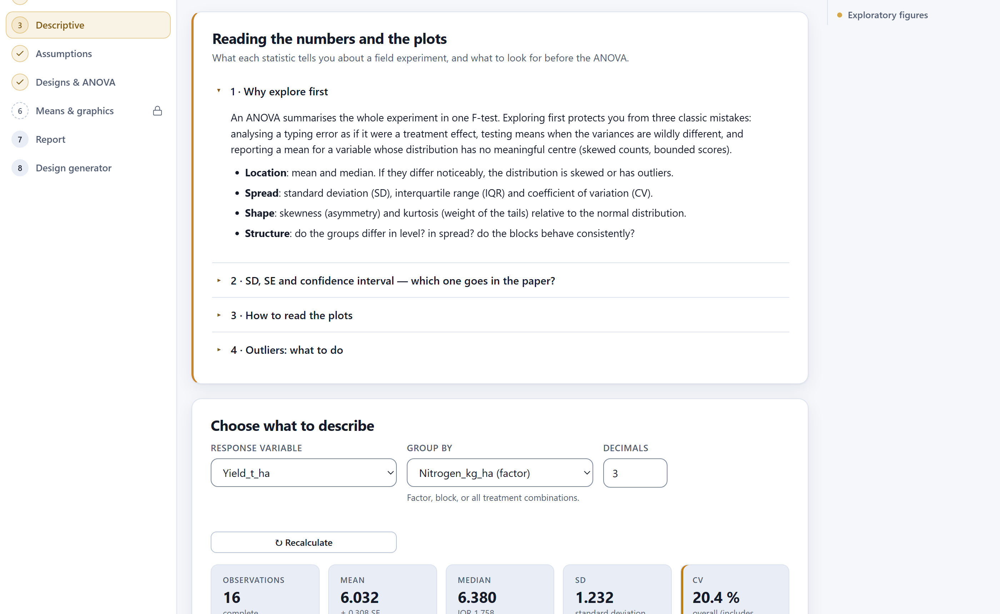
Figure 4.1. The Reading the numbers and the plots card opens Block 3 with four topics: why explore first, which of SD, SE and CI belongs in the paper, how to read each plot, and what to do with outliers.
θTheory in brief · four questions for one variable
Where is it? Mean and median. If they differ noticeably, the distribution is skewed or has outliers. How spread out is it? Standard deviation, interquartile range and coefficient of variation. What shape does it have? Skewness (which side the tail stretches towards) and kurtosis (how heavy the tails are) relative to the normal distribution. How is it structured? Whether the groups differ in level, whether they differ in spread, and whether the blocks behave consistently. The table and plots of this block answer all four questions.
Table 4.1. Standard deviation, standard error and confidence interval: which one belongs in the paper.
Statistic
Formula
Describes
Use it when…
Standard deviation (SD)
√[Σ(y − ȳ)² / (n − 1)]
The variability of the individual plots.
You want to show how scattered the observations are.
Standard error (SE)
SD / √n
The precision of the mean.
You are comparing means; it is the usual bar in figures of treatment means.
95% confidence interval
ȳ ± t0.975, n−1 · SE
The range of plausible values for the true mean.
You want the reader to judge differences by eye.
CV (%)
SD / ȳ × 100
The relative variability, free of units.
You are comparing precision between trials or between variables.
!Important · say in the figure caption what the bars are
An error bar can be a standard deviation, a standard error or a confidence interval, and the three differ greatly in size for the same data. With n = 4, the 95% interval is more than three times the standard error. Always write “mean ± SE”, or whatever applies, in the caption, and draw no conclusion from two standard-error bars overlapping: that is not the same as “not significant”. The test in Block 5 decides.
4.2Statistics by treatment, block and combination
The Choose what to describe card has three controls: the response, the grouping variable and the number of decimals. Everything else in the block (cards, table, interpretation and figures) is recalculated when any of them changes.
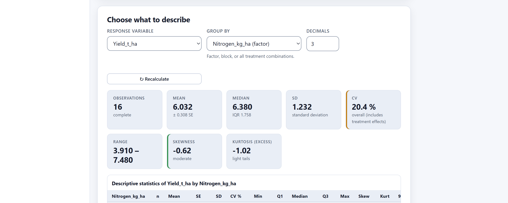
12345
Figure 4.2. Controls and summary cards for the maize and nitrogen example.
1Response variable: the response being described. If the table has several, they are chosen one at a time.
2Group by: none (all observations), a factor, all treatment combinations (when there are two or more factors), the block, the row or the column.
3Decimals: decimals of the table and the cards. Recalculate forces a recalculation.
4Eight cards summarising the whole response: observations, mean with its standard error, median with the interquartile range, standard deviation, CV, range, skewness and kurtosis.
5The coloured border of a card is a reading: green, nothing to report; amber, caution (here the CV of 20.4% and the moderate skewness); red, a problem.
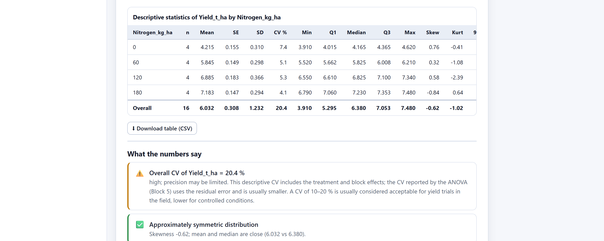
Figure 4.3. The table of statistics by group, with the Overall row at the bottom and the Download table (CSV) button. With four plots per dose, the CVs within each dose range from 4.1 to 7.4%, far below the overall CV of 20.4%, because the latter includes the effect of the dose.
Table 4.2. The columns of the table of statistics.
Column
What it is
n
Observations with a value in the group.
Mean · SE · SD
Mean, standard error and standard deviation of the group.
CV %
Coefficient of variation of the group: SD / mean × 100.
Min · Q1 · Median · Q3 · Max
The five numbers of the box plot: minimum, first quartile, median, third quartile and maximum.
Skewness · Kurt
Skewness and excess kurtosis (0 for the normal distribution). With three or four observations they are very unstable; kurtosis is omitted when n = 3.
95 % CI low · 95 % CI high
Limits of the 95% confidence interval for the group mean, using Student’s t with n − 1 degrees of freedom.
Overall
The last row: all the data together, ungrouped.
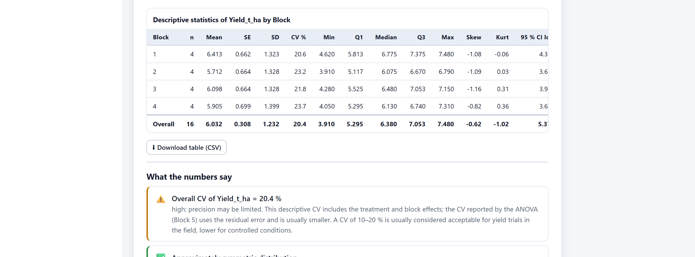
Figure 4.4. The same data grouped by block (Group by: Block). The block means range from 5.712 to 6.413 t/ha, a difference of 0.700 (12.3%): there is a block effect, which the ANOVA in Block 5 will confirm. The CVs within each block (20.6 to 23.7%) are large because each block contains all four doses.
With two factors: combinations and the two-way table
When the table has two or more factors, the Group by menu also offers All treatment combinations, which describes each cell of the factorial, and the block adds a two-way table of means with the marginal means of each factor.
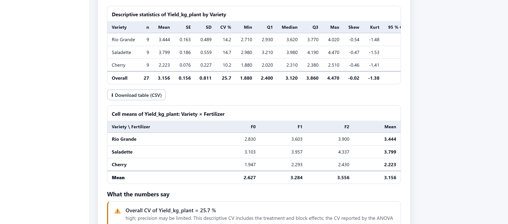
Figure 4.5. The tomato example (3 varieties × 3 fertiliser levels in 3 blocks) described by combination: nine cells with three plants each. Kurtosis appears as “—” because it cannot be computed with n = 3.
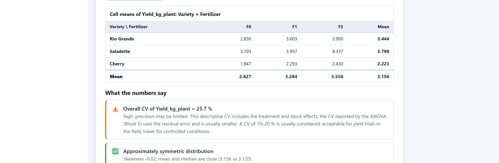
Figure 4.6.Cell means: the two-way table for the same example. The marginal means (the Mean column and row) summarise each factor separately; the cells, their combination. Saladette with F2 yields 4.337 kg per plant and Cherry with F0, 1.947.
4.3The coefficient of variation and its benchmarks
The CV is the statistic most often asked about in an agronomy seminar, and the most often misread. It is the standard deviation expressed as a percentage of the mean, so it does not depend on the units and allows the precision of trials on different crops, variables and years to be compared.
20.4 → 2.1
Two CVs for the same trial
The descriptive CV of the maize example is 20.4%: the standard deviation of the 16 plots includes the effect of the four doses and that of the blocks. The ANOVA CV, in Block 5, is 2.1%: it uses the square root of the error mean square, that is, what is left after removing doses and blocks. Journals ask for the second one. The first is only useful for comparing variables or for suspecting dirty data.
✓Decision rule · reading the ANOVA CV in agricultural trials
CV
Reading
Typical of…
< 10%
Excellent precision
Plant height, phenology, greenhouse and laboratory trials.
10 to 20%
Normal in the field
Grain yield in well-managed field plots.
20 to 30%
High; precision is limited
Yield under difficult conditions, counts, quality variables.
> 30%
Very high; check
Insect counts, disease severity, or a trial with problems: heterogeneous land, lost plots, typing errors, a variable that calls for a transformation.
The app applies these cut-offs to the cards and to the interpretation: green up to 20%, amber up to 30%, red above. They are benchmarks for yield; every variable has its own.
The automatic interpretation
Below the table, What the numbers say turns the statistics into sentences. Each sentence has a level (green, amber, red or informative) and says which block will resolve what it points out.
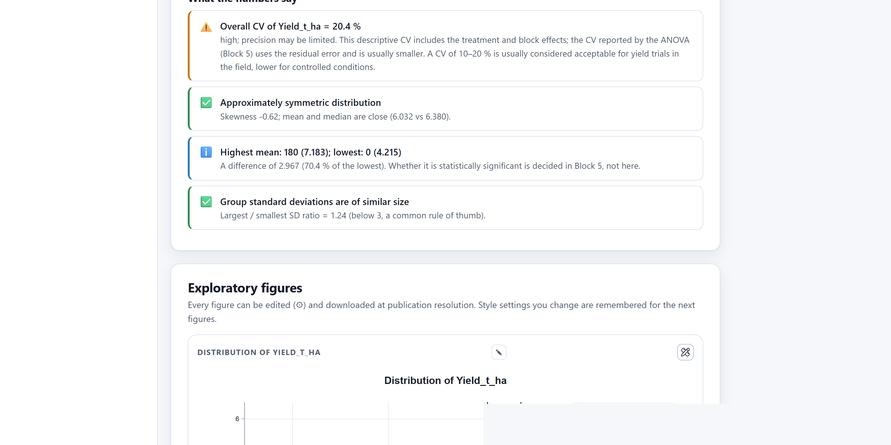
Figure 4.7.What the numbers say for maize by dose: a high overall CV that is nonetheless explained, an approximately symmetric distribution, the highest dose yielding 70.4% more than the control, and similar group standard deviations (ratio 1.24).
Table 4.3. The sentences of the interpretation and what triggers them.
Sentence
When it appears and what to do
Overall CV of Y = x %
Always. Green below 20%, amber up to 30%, red above. Remember that this is the descriptive CV, not the ANOVA one.
Approximately symmetric distribution · Distribution is right- or left-skewed
Depending on whether the skewness is below or above 1. With positive skewness and positive values it suggests trying a logarithm or a square root; Block 4 will decide on the residuals, which is what matters.
N potential outliers by Tukey’s rule
Values more than 1.5 interquartile ranges beyond the quartiles, listed. Check them in the field book before deciding anything.
Highest mean: A; lowest: B
With two or more groups: the difference between the best and the worst, in units and as a percentage of the lower one. Whether it is significant is decided in Block 5, not here.
Group standard deviations are of similar size · …differ x-fold
Ratio of the largest to the smallest group standard deviation. Above 3 the variances are heterogeneous: Block 4 will test this with Levene or Bartlett and offer a transformation, Welch or non-parametric tests.
The spread grows with the mean
With four or more groups, when the correlation between means and standard deviations exceeds 0.7. Typical of counts and proportional variables; a logarithm or square root usually stabilises the variance.
N groups with fewer than 3 observations
SD, CV and intervals are not reliable in such small groups.
4.4Exploratory plots
The Exploratory figures card draws up to nine figures, depending on what the table contains. All of them can be edited (Edit figure) and downloaded at publication resolution; the style settings you change are remembered for the following figures. The Block 6 chapter describes the editor in depth; here the point is what each figure shows and what to look for in it.
Table 4.4. The figures of Block 3 and when they appear.
Figure
Appears when…
What to look for
Histogram with density
Always
The shape of the whole sample. Two humps are usually two treatments or two blocks, not a problem.
Box plot
There are groups
Boxes of very different heights signal unequal variances; the circles, outliers.
Violin plot
There are groups
Bimodality that the box hides. It needs five or six observations per group to say anything.
Means with error bars
There are groups
The classic treatment figure; the caption must say what the bars are.
Individual points
There are groups
The honest picture with three or four replicates, where boxes and violins mislead.
Profiles by block
Grouping is by a factor and there is a block
One line per block across the treatments. Parallel lines: the ranking of the treatments is the same in every block (additivity). Crossing lines: block × treatment interaction or an odd plot.
Interaction plot
There are two factors
Parallel lines, no interaction; converging or crossing lines, interaction, and the main effects must be interpreted with care.
Scatter plot against the covariate
There is a covariate
If the response depends linearly on the covariate, the analysis of covariance in Block 5 will gain precision.
Correlation heat map
There are two or more responses
Which responses move together; with high correlations, a single result tells the same story twice.
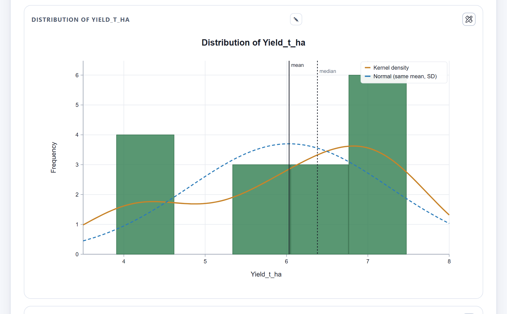
Figure 4.8. Histogram of maize yield with the density curve (orange), the normal curve with the same mean and standard deviation (dotted blue) and the mean and median lines. The two humps are the doses: the low one on the left and the three high ones on the right.
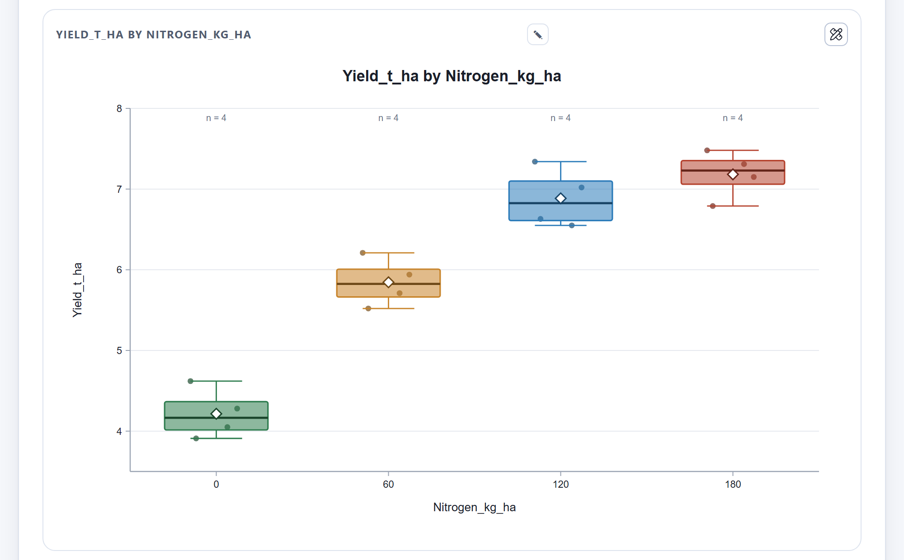
Figure 4.9. Box plot by dose. The box runs from the first to the third quartile, the line is the median, the white diamond the mean, the whiskers reach the most extreme value within 1.5 interquartile ranges, and the dots are the plots. The four boxes have similar heights: homogeneous variances.
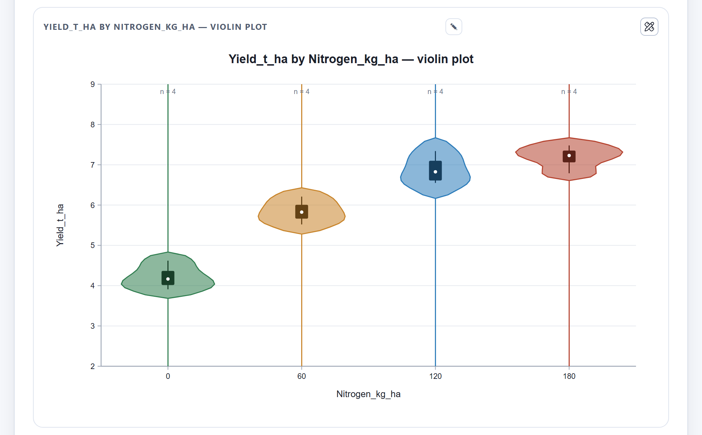
Figure 4.10. Violin plot by dose, with the inner box. With four observations per group the shape of the violin says little; it is included because with six or more replicates it shows the bimodality that the box conceals.Figure 4.11. Means ± standard error by dose, with the values printed. In the editor you can change the style (bars, points or palette), the type of error bar (SE, SD, 95% CI or none) and whether the observations are overlaid.
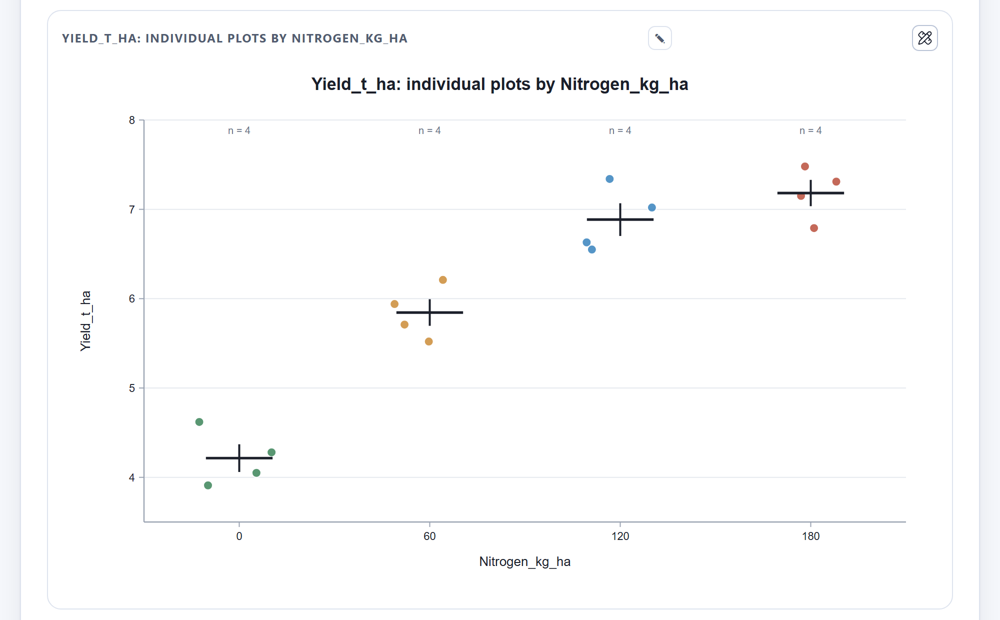
Figure 4.12. The 16 plots one by one, with the mean ± SE shown as a cross. With four replicates this is the most honest figure: every plot is visible and there is nothing to over-interpret.
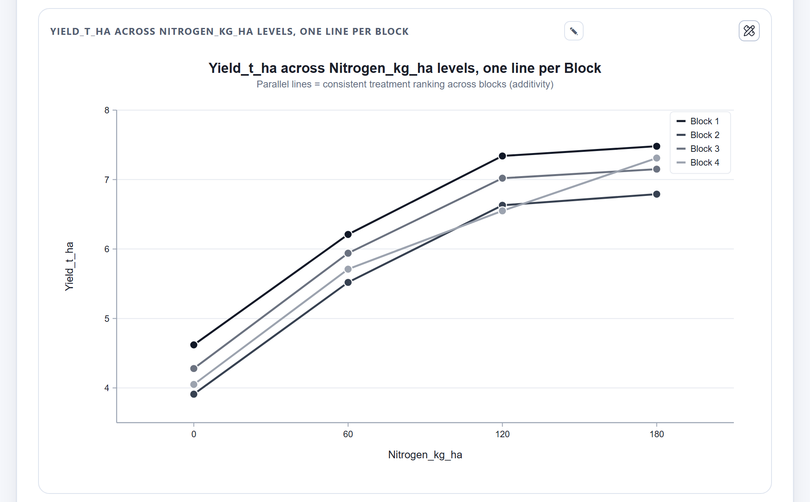
Figure 4.13. Profiles by block: one line per block across the doses. The four lines rise together and hardly cross; block 1 stays on top at every dose and block 2 at the bottom. This is the picture of blocking that worked and of an additive model, the assumption of the randomised complete block design that Block 4 tests formally with Tukey’s additivity test.
✓Decision rule · reading the profiles by block
If the lines…
then…
are nearly parallel and vertically separated
Blocking captured a real difference between blocks and the additive model is reasonable. This is what a good trial looks like.
are nearly parallel and overlap
The blocks do not differ; blocking cost no more than a few degrees of freedom.
cross at a single point
A suspicious plot. Look it up in the field book before going on.
cross all over the place
Block × treatment interaction: the ranking of the treatments changes from block to block. Check additivity in Block 4; a transformation may be needed.
The same reading applies to the interaction plot between two factors, except that there the interaction may be the very result you are looking for.
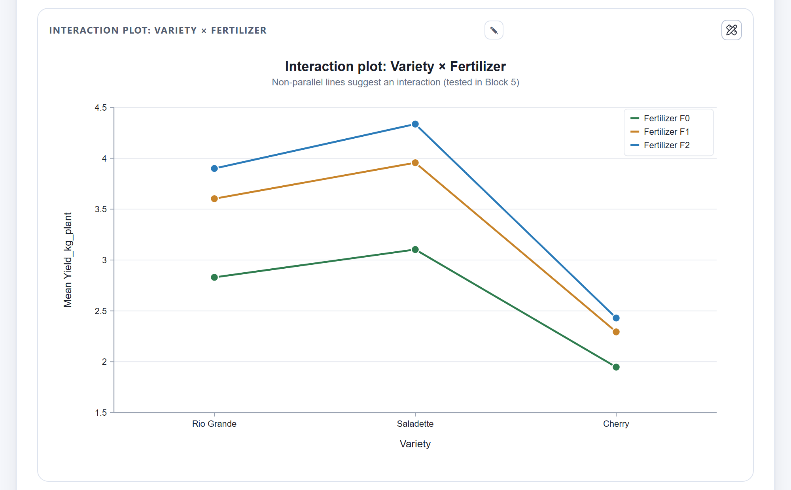
Figure 4.14. Interaction plot for the tomato example: one line per fertiliser level across the varieties. The three lines rise from Rio Grande to Saladette and fall at Cherry, but they are not parallel: the response to fertiliser is larger in Saladette than in Cherry. Block 5 will test whether that interaction is significant.
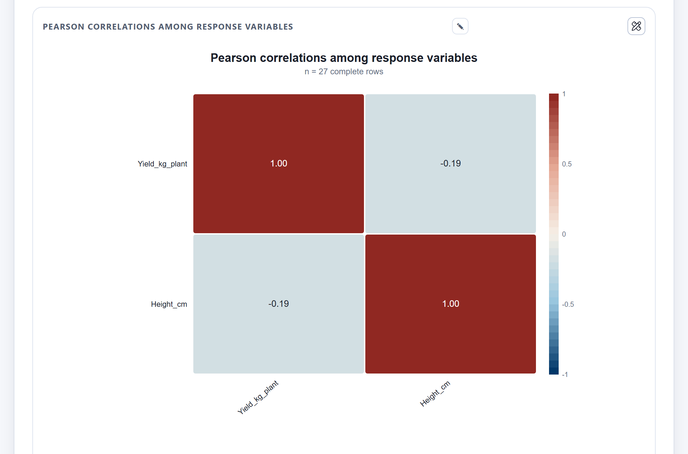
Figure 4.15. Pearson correlations between the two responses of the tomato example, with 27 complete plants: yield and height are barely related (r = −0.19), so each one tells something different and both are worth analysing.
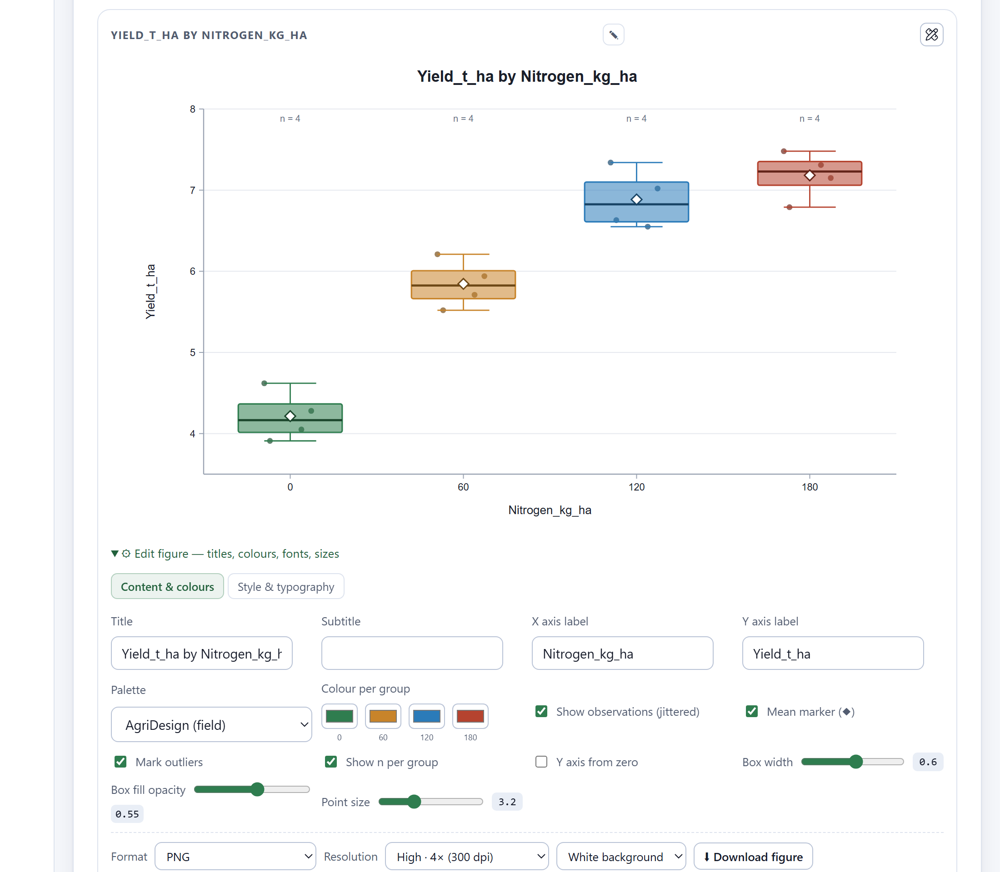
123456
Figure 4.16. The box plot with its editor open.
1Edit figure opens and closes the editor.
2Two tabs: Content & colours, with the options specific to each type of figure, and Style & typography, with theme, typeface, font size, grid and dimensions, common to all.
3Title, subtitle, axis labels and palette; below them, one colour per group.
4The check boxes for this figure: observations, mean marker, outliers, n per group.
5Y axis from zero and the sliders for width, opacity and point size.
6Format, resolution, background and the download button.
iNote · the Y axis from zero
Figures of means with bars start at zero because a bar represents a quantity; boxes, violins and points do not, because what matters in them is the comparison between groups and an axis starting at zero would flatten the differences. The Y axis from zero check box reverses that decision for any figure. For yields of 4 to 7 t/ha, a figure of means without zero visually exaggerates the difference between doses; with zero, it shows it in proportion.
4.5Step-by-step example
▸Step by step · maize × nitrogen
With the example loaded in Block 2, press Continue to descriptive statistics or number 3 on the bar. The block opens already calculated, with Yield_t_ha as the response and Nitrogen_kg_ha as the grouping.
Read the cards (figure 4.2): 16 complete observations, mean 6.032 ± 0.308, median 6.380, standard deviation 1.232, CV 20.4%, range 3.910 to 7.480, skewness −0.62 and kurtosis −1.02.
Scroll down to the table (figure 4.3). The means by dose rise from 4.215 to 7.183 t/ha and the CVs within each dose are 4 to 7%.
Read the interpretation (figure 4.7): the difference between the highest dose and the control is 2.967 t/ha (70.4%) and the standard deviations are similar (ratio 1.24). Nothing to correct.
Change Group by to Block (block) (figure 4.4): the block means differ by 0.700 t/ha. Set the factor back.
Check the figures: in the box plot the four boxes have similar heights and there are no outliers; in the profiles by block the lines are nearly parallel. The trial is ready for Block 4.
To save the table, press Download table (CSV); the figures are downloaded one at a time with Download figure or all together from Block 6.
▸Step by step · tomato, variety × fertiliser
In Block 2, load Factorial 3×3 in RCBD · tomato and move on to Block 3. The initial response is Yield_kg_plant; the second one, Height_cm, is chosen in Response variable.
The cards show 27 observations, mean 3.156, CV 25.7% and skewness −0.02. The high CV is once again the effect of the treatments: the varieties differ a great deal from one another.
Choose All treatment combinations in Group by (figure 4.5) and look at the two-way table (figure 4.6): Saladette is the best variety at all three fertiliser levels, and F2 the best level for all three varieties.
In the interaction plot (figure 4.14) the lines are not parallel: the gain from F0 to F2 is 1.2 kg in Saladette and 0.5 kg in Cherry. Make a note of it for Block 5.
The correlation map (figure 4.15) shows that yield and height are almost unrelated (r = −0.19).
θWhat you learned
Block 3 does not test hypotheses: it describes. Its job is to bring you to the ANOVA knowing what the data look like: whether there are suspicious plots, whether the variances are similar, whether the blocks behave alike and whether the factors seem to interact. A high descriptive CV is not bad news when the treatments explain it; a box much taller than the others or a line that crosses the rest is, and it is resolved in the field book or in Block 4, never by deleting data.
With the data explored, the next step is to check the assumptions of the analysis of variance formally. The Block 4 chapter explains why they are checked on the residuals, which tests the app uses, how to choose a transformation with the Box–Cox profile, and when to switch to the non-parametric route.
B4
Chapter five · Block 4 · Assumptions
Assumptions, transformations and non-parametric tests
The F-test of the analysis of variance rests on four assumptions about the experimental error. Block 4 fits the model of the design, checks those assumptions on the residuals, summarises the diagnosis in a grade from A to D, compares nine transformations with the Box–Cox profile and, when nothing works or the response is a score, offers the rank-based analyses that match the design.
5.1Assumptions are checked on the residuals
5.2Normality, homogeneity of variances and additivity
5.3Residual plots
5.4Transformations and the Box–Cox profile
5.5The non-parametric route
5.6Step-by-step example
5.1Assumptions are checked on the residuals
The model of a block trial is y = μ + treatment + block + ε. The ANOVA assumptions are not about yield; they are about ε, the experimental error. That is why they are checked on the residuals of the fitted model, what is left of each plot after removing the mean of its treatment and the effect of its block, and never on the raw response.
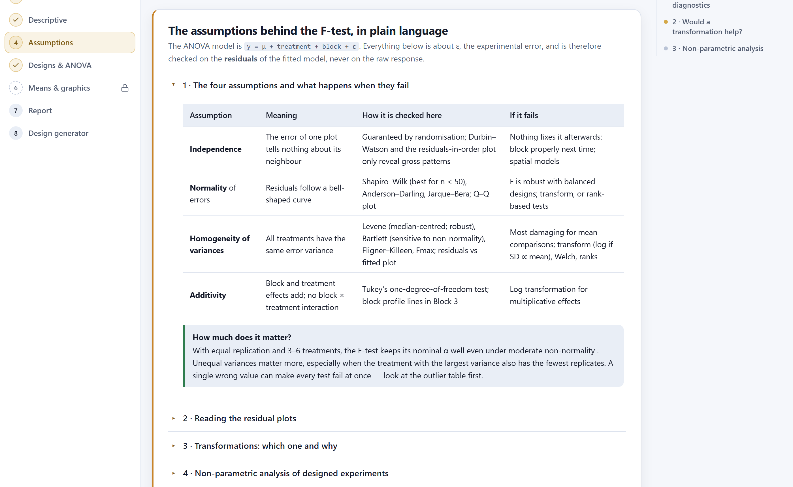
Figure 5.1. The The assumptions behind the F-test, in plain language card, with the first topic open: the four assumptions, how the app checks them and what to do if they fail. The other three topics explain the residual plots, transformations and non-parametric analyses.
θTheory in brief · why the raw response is not checked
In the maize example, the yield of the 16 plots has two humps (figure 4.8): one for the control and another for the high doses. A normality test applied to those raw data could reject normality, and yet there is no problem at all: the humps are the effect of nitrogen, which is exactly what is being studied. The residuals remove that effect and the block effect; what remains is the variation among plots treated alike, and that variation should indeed look like a bell, have the same spread in every treatment and not depend on the block. Block 4 fits the model of the design before testing anything.
Table 5.1. The four assumptions and what happens when they fail.
Assumption
Meaning
How the app checks it
If it fails
Independence
The error of one plot says nothing about that of its neighbour.
Guaranteed by randomisation. Durbin–Watson and the plot of residuals in order only reveal gross patterns.
Nothing fixes it afterwards: block properly in the next trial, or use spatial models.
Normality of the error
The residuals follow a bell curve.
Shapiro–Wilk (the best with fewer than 50 data points), Anderson–Darling and Jarque–Bera; Q–Q plot.
The F-test is robust with balanced designs. Transform, or use rank tests.
Homogeneity of variances
All treatments have the same error variance.
Median-centred Levene (robust), Bartlett (sensitive to non-normality), Fligner–Killeen and Fmax; residuals against fitted values.
This is what harms mean comparisons most. Transform (logarithm if the SD grows with the mean), Welch or ranks.
Additivity
Block and treatment effects add up; there is no block × treatment interaction.
Tukey’s one-degree-of-freedom test; profiles by block in Block 3.
Logarithm, if the effects are multiplicative.
3 to 6
Treatments: the F-test is robust
With equal replication and 3 to 6 treatments, the F-test keeps its α level well even with moderate non-normality. Unequal variances matter more, especially if the treatment with the largest variance is also the one with the fewest replicates. And a single wrong data point can make every test fail at once: look at the table of suspicious observations first.
5.2Normality, homogeneity of variances and additivity
The 1 · Model and residual diagnostics card is calculated automatically when the block opens and is repeated with Run diagnostics when you change the response, the significance level or the interactions. Above the results, the app shows the exact model it fitted.
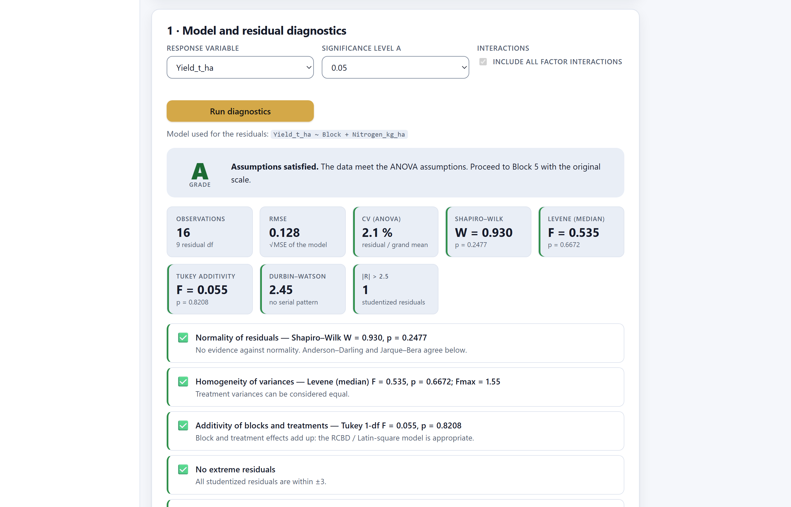
123456
Figure 5.2. Diagnosis of the maize and nitrogen example.
1Response variable: the response. The transformed columns you create in section 5.4 appear here.
2Significance level α: 0.05, 0.01 or 0.10. It sets the colours of the cards and of the table.
3include all factor interactions: only enabled with two or more factors; leave it ticked so that the residuals do not absorb the interaction. Run diagnostics recalculates.
4The model used to obtain the residuals: here Yield_t_ha ~ Block + Nitrogen_kg_ha, the randomised complete block design.
5The grade of the diagnosis, from A to D, with a sentence saying what to do (table 5.2).
6Eight cards: observations and error degrees of freedom, root mean square error, ANOVA CV, Shapiro–Wilk, Levene, Tukey additivity, Durbin–Watson and how many studentised residuals exceed 2.5.
✓Decision rule · the grade of the diagnosis
Grade
When
What to do
A
All checks green.
Go on to Block 5 with the original scale.
B
One amber warning.
The ANOVA is acceptable. Mention the check in the methods; if the warning concerns variances, be careful with the mean comparisons.
C
One red check, or two amber warnings.
Compare the transformations or use the non-parametric route, and report which you chose and why.
D
Two or more red checks.
A transformation will hardly fix everything: rank-based procedures are the safe option, or a generalised linear model for counts and proportions.
Each test is coloured according to its P value: green if P ≥ α, amber if α/5 ≤ P < α (between 0.01 and 0.05 with α = 0.05) and red if P < α/5.
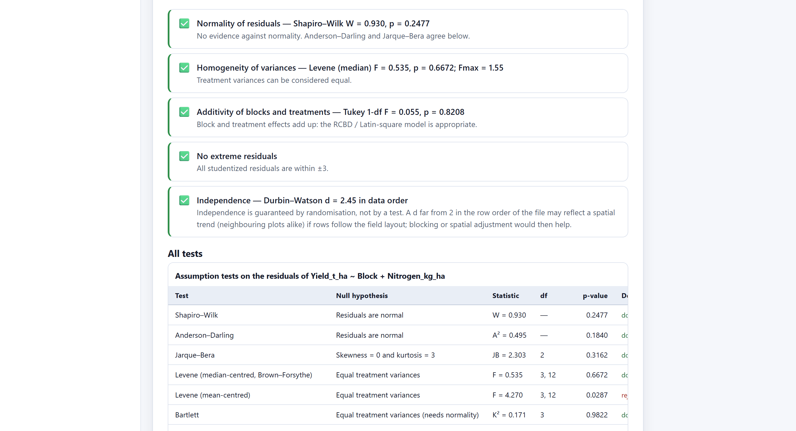
Figure 5.3. The five checks for maize, all green: normal residuals (Shapiro–Wilk W = 0.930, P = 0.2477), homogeneous variances (Levene F = 0.535, P = 0.6672; Fmax = 1.55), additive blocks and treatments (Tukey F = 0.055, P = 0.8208), no residual beyond ±3, and a Durbin–Watson of 2.45.
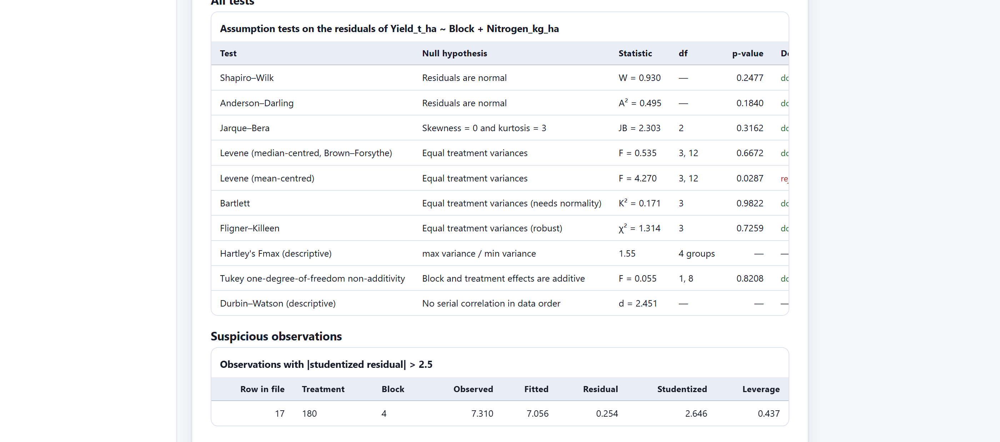
Figure 5.4.All tests: the ten tests with their null hypothesis, statistic, degrees of freedom, P value and decision.
Table 5.2. The tests in the table and what each one is for.
Test
What it tests and when to trust it
Shapiro–Wilk
Normality of the residuals. The most powerful with small samples; it is the one that decides the check.
Anderson–Darling
Normality, with more weight on the tails.
Jarque–Bera
Normality based on skewness and kurtosis. Low power with fewer than 30 data points.
Median-centred Levene
Equality of variances among treatments. Robust to non-normality; it is the one that decides the check.
Mean-centred Levene
The classic version. With few replicates per treatment it is too sensitive and rejects easily.
Bartlett
Equality of variances; very powerful if the data are normal and misleading if they are not.
Fligner–Killeen
Equality of variances using ranks; the most robust.
Hartley’s Fmax
Ratio of the largest to the smallest treatment variance. Descriptive: above 10 there is a serious problem.
Tukey’s non-additivity
Multiplicative block × treatment interaction, with one degree of freedom. It only appears if there are blocks, or rows and columns.
Durbin–Watson
Correlation between consecutive residuals in file order. Close to 2, no pattern; it only makes sense if the rows follow the field layout.
iNote · when two tests disagree
For maize, the mean-centred Levene rejects equality of variances (F = 4.270, P = 0.0287), whereas the median-centred version, Bartlett and Fligner–Killeen do not, and Fmax is only 1.55. With four plots per dose, the mean of each group shifts a lot with a single value and the classic version becomes jumpy. The app decides with the robust version; the table shows the others so that the readers of your paper do not have to ask. When the tests disagree, the plot of residuals against fitted values and Fmax break the tie.
Suspicious observations
The Suspicious observations table lists the plots whose studentised residual exceeds 2.5 in absolute value: the row number in the file (counting the header), its treatment and block, the observed value, the fitted value, the residual, the studentised residual and the leverage.
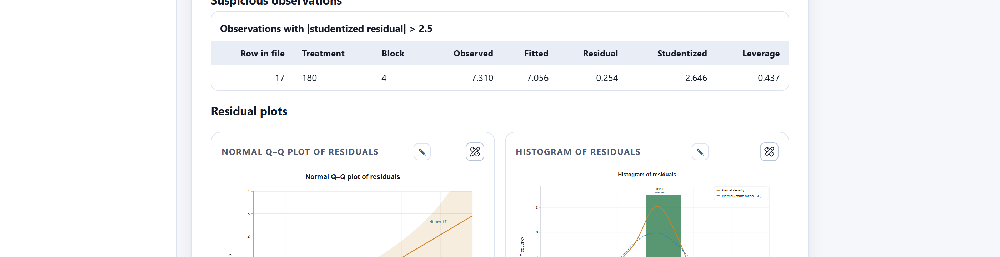
Figure 5.5. A single suspicious plot in maize: row 17 of the file, dose 180 in block 4, with 7.310 t/ha observed against 7.056 expected. It is the block 4 line that, in the Block 3 profiles (figure 4.13), rises too much at the last dose. A studentised residual of 2.65 among 16 plots is not alarming; confirming the value in the field book is enough.
✓Decision rule · what to do with a suspicious plot
If in the field book you find…
then…
a typing error (a misplaced decimal point, two transposed digits)
Correct the value in the file and reload it.
a plot damaged by animals, flooding or irrigation failure, documented
Declare it missing (empty cell) and say so in the methods.
nothing abnormal
The value stays. If it is very influential, analyse with and without it and report both.
A value is never deleted just because it is in the way. A large unexplained residual is information about the trial, not an error.
5.3Residual plots
The tests give a yes or a no; the plots tell you why. The app draws six, in two columns, all of them editable and downloadable. The most distant points are labelled with their row number in the file.
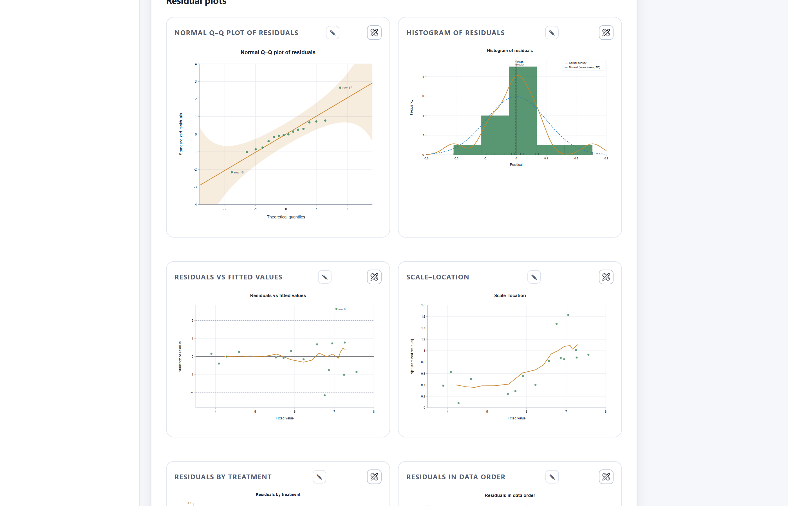
Figure 5.6. The six residual plots of the maize example. From left to right and top to bottom: normal Q–Q, histogram of residuals, residuals against fitted values, scale–location, residuals by treatment and residuals in file order.
Table 5.3. How to read each residual plot.
Plot
What is normal
Warning signs
Normal Q–Q
The points follow the line and stay within the shaded band (95% envelope).
S shape: heavy or light tails. Curve: skewness. One or two points far away: outliers. A few points outside the band are to be expected.
Histogram
A bell centred on zero.
A long tail to one side; two humps in the residuals (unlike in the raw data, here it is a problem).
Residuals against fitted values
A shapeless cloud around zero, almost entirely between −2 and 2.
A funnel opening to the right: the variance grows with the mean and calls for a logarithm or square root. Curve: a missing term (a quadratic effect of the dose) or non-additivity.
Scale–location
The smoothed line almost horizontal.
An upward trend confirms heterogeneity of variances.
Residuals by treatment
Boxes of similar height.
Boxes of very different heights: unequal variances among treatments.
Residuals in order
Ups and downs with no pattern.
Runs of positives followed by negatives: a trend across the field, if the rows of the file follow the sowing order.
▸Reading · the maize residuals
The Q–Q points follow the line, with rows 16 and 17 at the ends but inside the band. In residuals against fitted values the cloud is flat and only row 17 exceeds 2. Scale–location rises slightly at the high doses, but with 16 plots and a Levene P of 0.67 there is nothing to correct. The boxes by treatment have similar heights. A clean trial.
5.4Transformations and the Box–Cox profile
The 2 · Would a transformation help? card applies every possible transformation to the response, refits the same model and repeats the tests. A recommendation at the top summarises the result. The Use button on each row creates a new column with the transformed response, leaving the original untouched, and repeats the diagnosis on it.
Table 5.4. The transformations the app tries and when each one is used. Only those the data allow are shown: the logarithm requires positive values and the arcsine, values between 0 and 100.
Transformation
Typical situation
Notes
ln(y), log₁₀(y)
The SD grows in proportion to the mean; multiplicative effects; constant CV across treatments.
The back-transformed means are geometric means.
ln(y + 1)
Counts with zeros.
Only makes sense if there are zeros.
√y, √(y + 0.5)
Counts (insects, weeds, colonies): variance similar to the mean. The second one for small counts with zeros.
A Poisson generalised linear model is the modern alternative.
Arcsine √(y/100)
Percentages derived from counts: germination, incidence, mortality.
Only needed with values below 20% or above 80%. Not for percentages of continuous quantities, such as moisture content.
Logit
Proportions away from 0 and 1.
Or a binomial model.
1/y
Rates and times to an event; the SD grows with the square of the mean.
Rarely needed in agronomy.
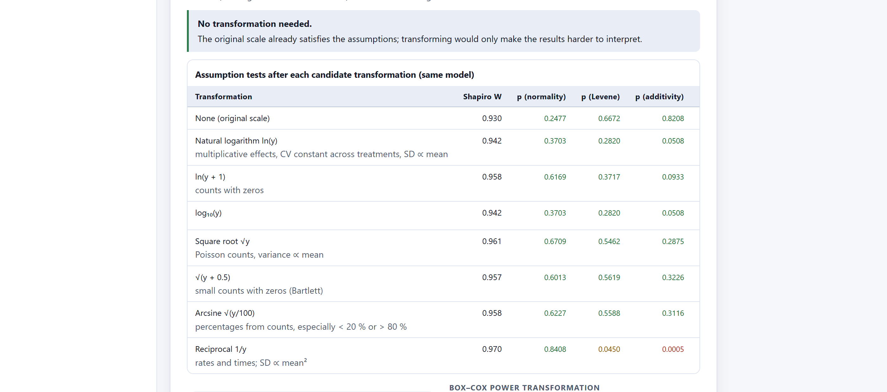
Figure 5.7. Transformations for maize: No transformation needed. The original scale already meets the assumptions and any transformation would only complicate the interpretation. Note that the reciprocal makes things worse: additivity drops to P = 0.0005 and Fmax rises to 8.64.
When the assumptions fail: the tomato
The tomato example (three varieties × three fertiliser levels in blocks) is the opposite case. The residuals are normal and the variances homogeneous, but Tukey’s additivity test rejects strongly: F = 54.251, P < 0.0001. The grade is C.
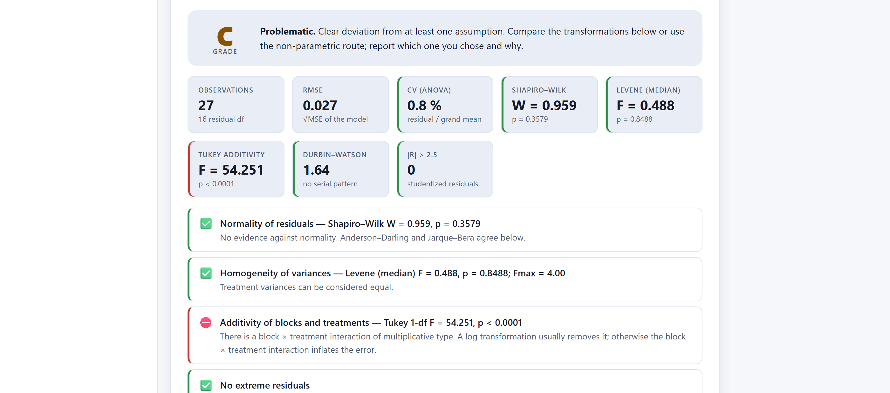
Figure 5.8. Diagnosis of the tomato: model with block, variety, fertiliser and interaction; grade C; additivity card in red. The check explains that there is a multiplicative block × treatment interaction and that a logarithm usually removes it.
θTheory in brief · effects that multiply
In an additive model, a fertile block adds the same amount to every variety: 0.3 kg more per plant to Cherry and 0.3 kg more to Saladette. In many crops this is not what happens: the fertile block yields 10% more, which is 0.2 kg in Cherry and 0.4 kg in Saladette. The effect is multiplicative and appears as a block × treatment interaction. The logarithm turns products into sums, ln(a · b) = ln a + ln b, and restores the additive model.
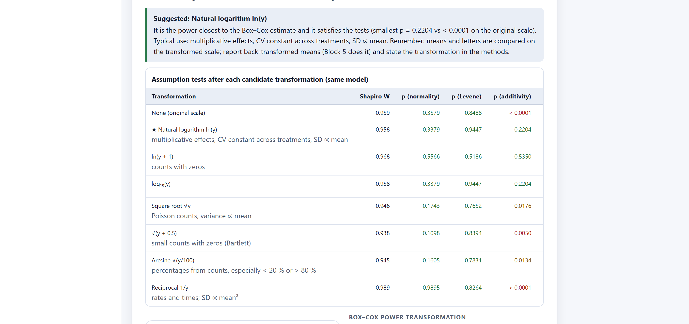
Figure 5.9. Transformations for the tomato. The recommendation is the natural logarithm (★): it is the power closest to the Box–Cox estimate and with it all three tests pass (additivity P = 0.2204, normality P = 0.3379, Levene P = 0.9447). The square root and the arcsine are not enough: additivity remains below 0.05.
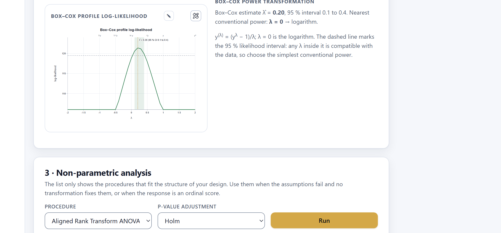
Figure 5.10. Box–Cox likelihood profile for the tomato: λ̂ = 0.20 with a 95% interval from 0.1 to 0.4. The interval does not include 1 (leaving the scale as it is) and the nearest conventional power is λ = 0, the logarithm. The named powers are marked above the axis: 1/y, 1/√y, ln y, √y, y, y².
λThe Box–Cox family
Box–Cox brings the power transformations together in a single formula, y(λ) = (yλ − 1)/λ, where λ = 1 leaves the data as they are, λ = 0.5 is the square root, λ = 0 the logarithm and λ = −1 the reciprocal. For each λ between −2 and 2, the app calculates how likely the model of the design is with the transformed response, and marks the 95% interval with a dotted line. Any λ inside the interval is compatible with the data, so the simplest conventional power that falls inside is chosen: nobody reports “λ = 0.2”; one reports “logarithm”.
Read the recommendation. If it says No transformation needed, do not transform. If it says Suggested, the row marked with ★ is the candidate.
Confirm in the Box–Cox profile that this power lies inside the interval, or close to it.
Press Use on that row. The app adds the column (here Yield_kg_plant_ln), selects it as the response and repeats the diagnosis.
Check that the grade has improved and go on to Block 5 with the transformed column.
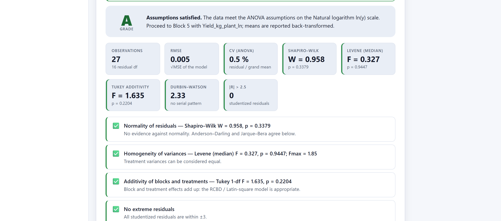
Figure 5.11. After Use: the new column Yield_kg_plant_ln appears as the response, the green message confirms that the original was left untouched, and the grade rises to A. The app warns that in Block 5 the means will be reported back-transformed.
!Important · the rules of a transformation
The whole analysis is done on the transformed scale: ANOVA, mean tests and letters. The letters are not recalculated on the back-transformed means.
The back-transformed means are reported so that they can be read in kg or t/ha, saying so in the table or figure caption. Block 5 adds them as a column.
The methods state which transformation was used and why; the report in Block 7 writes this up.
Never transform to “obtain” significance. The decision is made on the basis of the assumptions, before seeing the ANOVA table.
Ordinal scores are not fixed by transforming. They take the rank-based route.
iNote · how the app chooses the suggestion
For each transformation, the app takes the smallest of the three P values (normality, Levene and additivity). If the conventional power closest to Box–Cox already has that minimum above α, the app suggests it. Otherwise, it suggests the transformation with the highest minimum. There is only a suggestion when the original scale fails and the candidate passes; if none passes, the card says so and points to the non-parametric route. For the tomato, ln(y + 1) has even higher P values than ln(y), but adding 1 to yields with no zeros has no justification: the logarithm backed by Box–Cox is preferred.
5.5The non-parametric route
Rank-based procedures replace each observation by its position in the ordered sample and no longer need normality. They are the natural choice for ordinal scores, small samples with outliers, and highly skewed measurements that no transformation can straighten. The 3 · Non-parametric analysis card only shows the procedures that match the structure of the design.
Table 5.5. The non-parametric procedures and when the app offers them.
Procedure
Appears with…
Parametric analogue
Comparisons and letters
Kruskal–Wallis
One factor, no blocks
Completely randomised ANOVA
Dunn (z on mean ranks), or pairwise Mann–Whitney in a second variant.
Welch
One factor, no blocks
One-way ANOVA
Games–Howell. For normal data with unequal variances.
Friedman
One factor in complete blocks, one plot per block and treatment
Randomised complete blocks
Conover (t on rank sums) or Nemenyi (studentised range).
Scheirer–Ray–Hare
Two factors, no blocks
Two-way ANOVA
No pairwise comparisons.
Aligned rank transform (ART)
Always: any factorial or blocked design
Full factorial ANOVA
Tukey on the aligned ranks of the first factor, if its effect is significant.
Table 5.6. Which procedures the app offers with each example.
Example
Available procedures
CRD · bean varieties
Kruskal–Wallis, Welch, ART, Kruskal–Wallis with Mann–Whitney
RCBD · maize × nitrogen and Ordinal scores · fungicides
Friedman, ART
Latin square · wheat, Factorial 3×3 in RCBD · tomato, Split-plot · irrigation × variety
ART
Besides the procedure, you choose the adjustment of the P values for multiple comparisons: Holm (default), Bonferroni, Benjamini–Hochberg, Hochberg or none; and, with Friedman, between Conover and Nemenyi. Run produces three tables (the test, the pairwise comparisons and the groups with letters) and a figure of medians with letters.
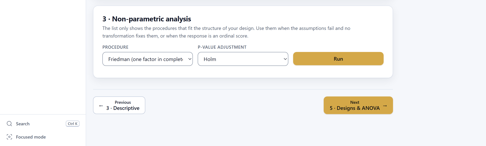
Figure 5.12. Controls of the non-parametric route for the fungicide example: Friedman, because it is one factor in complete blocks with one plot per block and fungicide, and the Holm adjustment.
Severity scores: Friedman
The fungicide example measures the severity of a disease on a 1 to 9 scale, with four treatments and five blocks. Curiously, its residuals pass the parametric tests (grade A, Shapiro–Wilk P = 0.0552). That does not change the nature of the data: an ordinal scale does not have equal distances between its categories (going from 2 to 3 is not the same as going from 8 to 9), and the mean of the scores is a figure of doubtful meaning. The rank-based route is the right one.
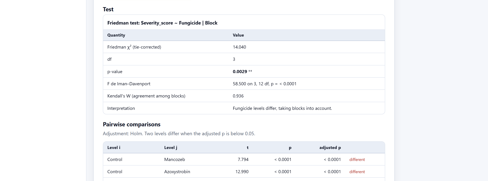
Figure 5.13. Friedman for severity by fungicide with blocks: χ² = 14.040 with 3 degrees of freedom, P = 0.0029. The Iman–Davenport F, more powerful with few blocks, is 58.500 (P < 0.0001), and Kendall’s W is 0.936: the five blocks rank the fungicides almost identically. With the Holm adjustment, all six pairs differ and each fungicide gets its own letter.
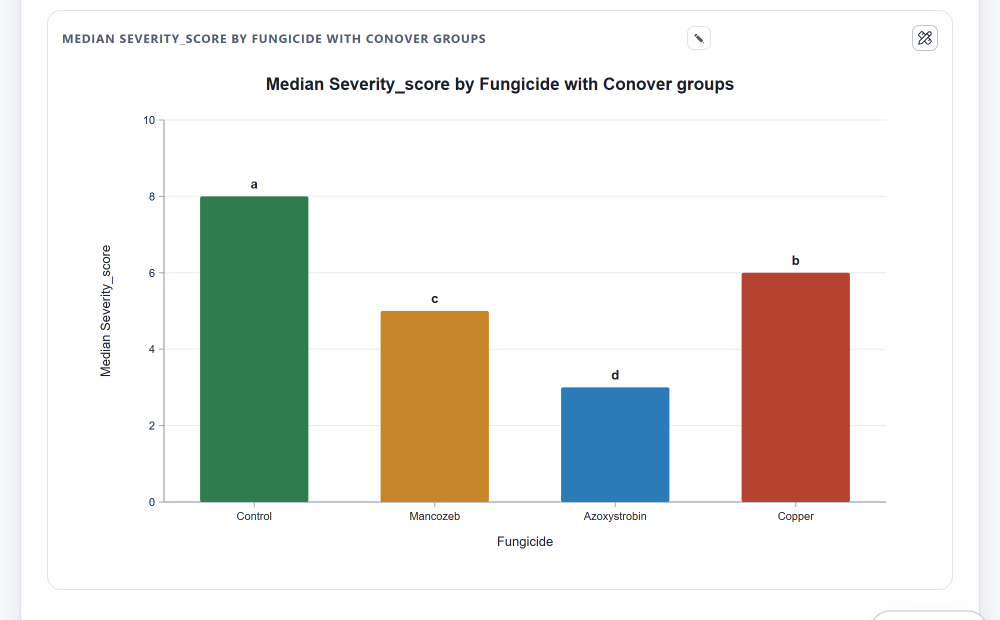
Figure 5.14. Severity medians with the Conover groups. The control has the highest severity (median 8, a), followed by copper (6, b), mancozeb (5, c) and azoxystrobin (3, d), which is the best fungicide.
Table 5.7. How to read the Friedman results.
Quantity
Reading
Friedman χ²
The overall test, corrected for ties. Its degrees of freedom are treatments − 1.
Iman–Davenport F
A version of the same test with a better approximation when there are few blocks. If the two disagree, trust this one.
Kendall’s W
From 0 to 1: the agreement of the blocks on the ranking of the treatments. It is the effect size.
Mean rank
The average position of each treatment within the blocks: 4 means highest in every block, 1 lowest in every block.
Letters
Read like those of the mean tests: two treatments sharing a letter do not differ.
iNote · the other procedures with the examples
With the beans in a completely randomised design, Kruskal–Wallis gives H = 17.629 with 4 degrees of freedom (P = 0.0015) and an ε² of 0.909; Dunn with Holm separates, for example, Negro Jamapa from Azufrado. With the tomato, ART confirms the effects of block, variety, fertiliser and their interaction (all P < 0.0001), and Tukey on the aligned ranks ranks the varieties: Saladette (a), Rio Grande (b) and Cherry (c). In ART, the aligned sum column must be zero in every row; it is an internal check that the alignment was done correctly.
✓Decision rule · ANOVA, transformation or ranks
If…
then…
the grade is A or B and the response is continuous
ANOVA on the original scale (Block 5).
the grade is C or D and a conventional transformation raises it to A or B
ANOVA with the transformed response and back-transformed means.
no transformation is enough
The non-parametric route for the design, or a generalised linear model for counts and proportions.
the response is an ordinal score (1 to 5, 1 to 9)
The non-parametric route, whatever the assumptions say.
the data are normal but the variances very unequal, with a single factor and no blocks
Welch with Games–Howell.
Rank tests lose little power when the data are normal (about 5% for Kruskal–Wallis compared with the F-test) and can gain a great deal when they are not.
5.6Step-by-step example
▸Step by step · maize × nitrogen
With the example loaded, press number 4 on the bar. The diagnosis is calculated automatically with the model Yield_t_ha ~ Block + Nitrogen_kg_ha.
The grade is A (figure 5.2). The cards give an ANOVA CV of 2.1%, a root mean square error of 0.128 t/ha and nine degrees of freedom for error.
Read the checks (figure 5.3) and the table of tests (figure 5.4). Only the classic Levene rejects; the robust one does not.
Review the suspicious plot (figure 5.5): row 17, block 4 with 180 kg. Confirm it in the field book.
Look at the plots (figure 5.6) and the transformations card (figure 5.7): no transformation is needed.
Go on to Block 5 with the original scale.
▸Step by step · tomato, when additivity fails
Load Factorial 3×3 in RCBD · tomato in Block 2 and open Block 4. Leave include all factor interactions ticked.
The grade is C because of Tukey’s additivity test (figure 5.8).
In the transformations card, the suggested one is ln(y) (figure 5.9) and Box–Cox supports it (figure 5.10).
Press Use on the natural logarithm row. The grade rises to A with Yield_kg_plant_ln (figure 5.11).
In Block 5 choose Yield_kg_plant_ln as the response; the means will also be given back-transformed.
▸Step by step · fungicides, an ordinal scale
Load Ordinal scores · fungicides and open Block 4. Even though the grade is A, the response is a 1 to 9 scale.
Scroll down to 3 · Non-parametric analysis, keep Friedman, Holm and the Conover post hoc test, and press Run.
Read the test (figure 5.13): P = 0.0029 and a Kendall’s W of 0.936.
Report the medians with their letters (figure 5.14). The figure is edited and downloaded like any other.
θWhat you learned
Assumptions are judged with several pieces of evidence at once: the tests, the plots and what you know about the variable. A red test calls for a look at the corresponding plot before deciding. A transformation is chosen on the basis of what the residuals and Box–Cox say, not of the ANOVA result, and it is reported. And when the response is ordinal, rank-based analysis is the right one even if the assumptions seem to hold.
With the assumptions settled, the next step is the analysis of variance. The Block 5 chapter presents the catalogue of designs and their error strata, the options for sums of squares and mean tests, how to read the ANOVA table, the adjusted means with letters, simple effects in factorials, and response curves.
B5
Chapter six · Block 5 · Designs & ANOVA
Designs, ANOVA and mean comparisons
The heart of the program. Block 5 fits the model of the design that was actually sown, tests each source of variation against its own error, computes the adjusted means, separates them with letters using any of eleven tests, breaks interactions down into simple effects, fits response curves to quantitative factors and tests planned contrasts. All of it comes with a results paragraph ready for the manuscript.
6.1The catalogue of designs and their errors
6.2Options: sums of squares, α and mean-separation test
6.3The ANOVA table and its interpretation
6.4Adjusted means and letters
6.5Factorials: interaction and simple effects
6.6Trends, response curves and contrasts
6.7Step-by-step examples
6.1The catalogue of designs and their errors
The design is not chosen for convenience at the analysis stage: it is the way the treatments were randomised in the field. Two identical tables may call for different analyses if one was sown in complete blocks and the other as a split-plot. Block 5 offers thirteen designs and, for each one, builds the model with the correct error terms.
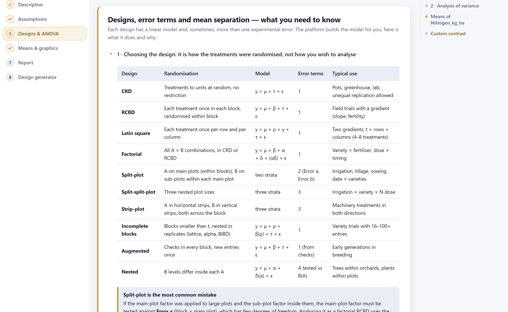
Figure 6.1. The Designs, error terms and mean separation card, with the first topic open: each design with its randomisation, its model, its error terms and its typical use, followed by a warning about the most frequent mistake, analysing a split-plot as a factorial. The other three topics explain the ANOVA table, how to choose the mean-separation test and what reviewers expect.
Table 6.1. The thirteen designs in the Experimental design menu, with the Block 2 roles each one requires and the number of error strata.
Design in the app
Roles required
Model
Errors
Completely randomised design (CRD)
1 factor
y = μ + τ + ε
1
Randomised complete block design (RCBD)
1 factor, 1 block
y = μ + β + τ + ε
1
Generalised RCBD
1 factor, 1 block, several plots per block and treatment
y = μ + β + τ + (βτ) + ε
1 or 2
Latin square
1 factor, row and column
y = μ + ρ + γ + τ + ε
1
Incomplete block design
1 factor, 2 block columns (replicate and block)
y = μ + ρ + β(ρ) + τ + ε
1
Augmented design
1 factor, 1 block
y = μ + β + τ + ε, with the error from the checks
1
Factorial in CRD
2 to 4 factors
y = μ + α + δ + (αδ) + ε
1
Factorial in RCBD
2 to 4 factors, 1 block
y = μ + β + α + δ + (αδ) + ε
1
Split-plot in RCBD
2 factors (the first on main plots), 1 block
y = μ + β + α + (βα)a + δ + (αδ) + εb
2
Split-plot in CRD
2 factors, 1 replicate column
y = μ + α + εa + δ + (αδ) + εb
2
Strip-plot (split-block) in RCBD
2 factors, 1 block
y = μ + β + α + (βα)a + δ + (βδ)b + (αδ) + εc
3
Split-split-plot in RCBD
3 factors, 1 block
three nested plot sizes
3
Nested (hierarchical)
2 factors, the second within the first
y = μ + α + δ(α) + ε
1 or 2
The menu enables only the designs compatible with the roles assigned in Block 2. The rest are greyed out with the reason: needs 2–4 treatment factors, needs row and column roles, needs several plots per block × treatment. The ★ suggested star marks the design the app infers from the structure of the table: a Latin square if there are a row and a column, complete blocks if there are one factor and one block, a factorial in blocks if there are two factors and one block, and so on.
!Important · the suggestion cannot see the field
A table with irrigation, variety and block looks the same whether it was sown as a factorial in blocks or as a split-plot. The app suggests the factorial because that is all it can infer from the table; if irrigation was applied to main plots and the varieties within them, you must choose Split-plot in RCBD. The same applies to strip-plots and to nested factors. Section 6.5 shows how much the tests change.
θTheory in brief · error strata
Each size of experimental unit has its own variation. In a split-plot, main plots that received the same irrigation differ from one another more than neighbouring sub-plots that received the same variety, because they are farther apart and fewer. That is why irrigation is tested against error a (block × irrigation), which has few degrees of freedom, and variety and the interaction against error b, the residual. Using error b for irrigation means judging main plots by the yardstick of the small ones: differences are declared that do not exist. The Tested against column of the ANOVA table states, for each source, which error it was tested against.
iNote · options of some designs
Two designs show a checkbox under the description. In Generalised RCBD, Blocks are random tests the treatments against the block × treatment interaction, the right choice when the blocks represent environments to which you want to generalise. In Nested, B(A) is random tests the upper factor against the nested one: the trees within orchards are the unit by which the orchards are judged. Covariates flagged in Block 2 are added to any design and turn the analysis into an analysis of covariance.
6.2Options: sums of squares, α and mean-separation test
The 1 · Design and options card gathers five decisions. The analysis is computed automatically with the default options when the block opens, and is repeated with Run the analysis.
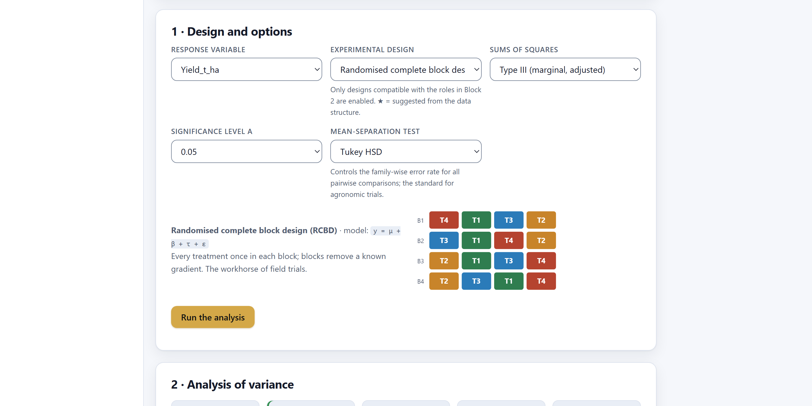
1234567
Figure 6.2. Options for the maize and nitrogen example.
1Response variable: includes the transformed columns from Block 4.
2Experimental design: the design, with the suggestion marked and the incompatible ones greyed out.
3Sums of squares: Type III (marginal, the default) or Type I (sequential).
4Significance level α: 0.05, 0.01 or 0.10.
5Mean-separation test: eleven tests, with a description under the menu. With Dunnett, an extra menu appears for choosing the control.
6The name of the design, its model and when it is used.
7A layout of the design, the same one Block 8 draws.
θTheory in brief · Type I or Type III
Type I sums of squares are computed in order: each term is adjusted only for the ones before it. Type III sums of squares adjust each term for all the others. With balanced data, as in all the program's examples, the two coincide. With missing plots, incomplete blocks or covariates they differ, and Type III gives the test most readers expect: the treatment effect, regardless of the order in which the model was written. Keep Type III unless you have a reason for a hierarchical order.
Table 6.2. The eleven mean-separation tests. Letters from the example: beans in a CRD, five varieties ranked from highest to lowest (Azufrado, Flor de Mayo, Pinto Saltillo, Negro Jamapa, Bayo), α = 0.05.
Test
Error controlled
Use it when…
Bean letters
Tukey HSD
Family-wise, all pairs
By default, to compare all pairs. With unequal replication the Tukey–Kramer version is used.
a · ab · b · c · c
Fisher's LSD
Per comparison
Few treatments (four or fewer), after a significant F, or planned comparisons.
a · b · c · d · e
Duncan
None (liberal)
Traditional in agronomy; many journals no longer accept it.
a · b · c · d · e
Student–Newman–Keuls
Per step
Multiple range; can produce non-transitive groups.
a · b · c · d · e
REGWQ
Family-wise
The best multiple range test when many means are truly equal.
a · b · b · c · d
Bonferroni · Šidák
Family-wise
A few planned comparisons; conservative with many treatments.
a · ab · b · c · c
Holm
Family-wise
Always preferable to Bonferroni: the same control, more power.
a · b · c · d · e
Scheffé
All contrasts
Contrasts decided after seeing the data; the most conservative for pairs.
a · ab · b · c · c
Dunnett (vs control)
Family-wise, against the control
The only question is whether each treatment differs from the control.
* · * · * · control · *
Games–Howell
Family-wise
Unequal variances among treatments (each pair uses its own error).
a · ab · b · c · c
0.215
The same difference, two verdicts
Negro Jamapa (2.132 kg) and Bayo (1.917 kg) differ by 0.215 kg per plot. Tukey's minimum significant difference is 0.224 and Bonferroni's 0.239: with either, the two beans share the letter c. The LSD, which does not control the family-wise error, is much smaller and separates them. With five treatments there are ten pairs; on average, the LSD lets through about one false positive in every two trials. That is why the test is chosen before seeing the results and is stated in the table footnote.
6.3The ANOVA table and its interpretation
The 2 · Analysis of variance card opens with seven summary tiles, continues with the ANOVA table, the error strata and the interpretation, and ends with a draft of the results paragraph.
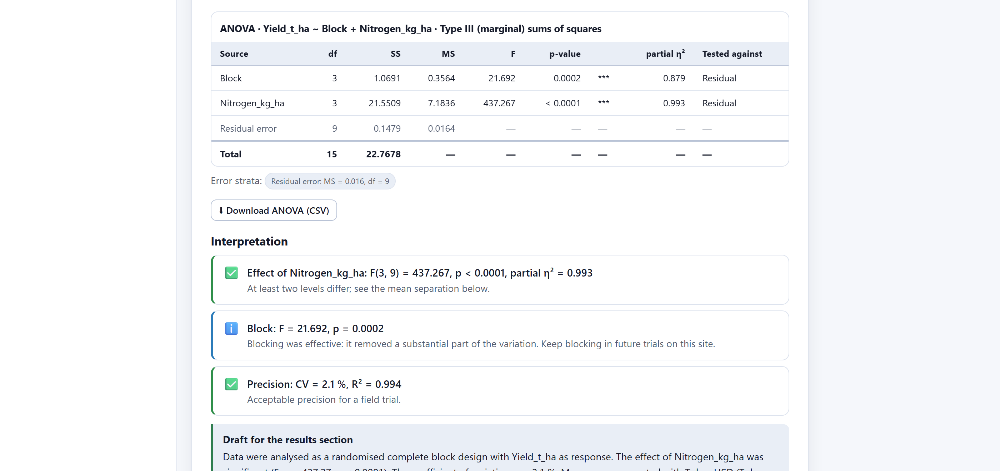
Figure 6.3. ANOVA of maize and nitrogen in a randomised complete block design. The nitrogen dose explains almost all the variation (F = 437.267, partial η² = 0.993) and the blocks also differ (F = 21.692, P = 0.0002).
Table 6.3. The ANOVA summary tiles and their values for maize.
Tile
What it is
Maize
Grand mean
Overall mean of the response.
6.032
CV
√MSE / mean × 100: the precision of the trial, the figure reviewers ask for.
2.1%
R²
Proportion of the total variation explained by the model, blocks included.
0.994
RMSE
Residual standard deviation, √MSE.
0.128
SE of a treatment mean
Standard error of a mean of the first factor: √(MS error / r).
0.064
SE of a difference
Standard error of the difference between two means: √(2 MS error / r).
0.091
Residual df
Degrees of freedom of the error; shown in amber if fewer than 6.
9
Table 6.4. The columns of the ANOVA table.
Column
How to read it
Source
The source of variation. Rows in grey are error strata.
df · SS · MS
Degrees of freedom, sum of squares and mean square (SS / df).
F · p-value
F = MS of the source / MS of its error, and its P value. Asterisks mark * P < 0.05, ** P < 0.01, *** P < 0.001.
partial η²
SS of the source / (SS of the source + SS of its error): the effect size, to accompany the P value.
Tested against
The error against which the source was tested.
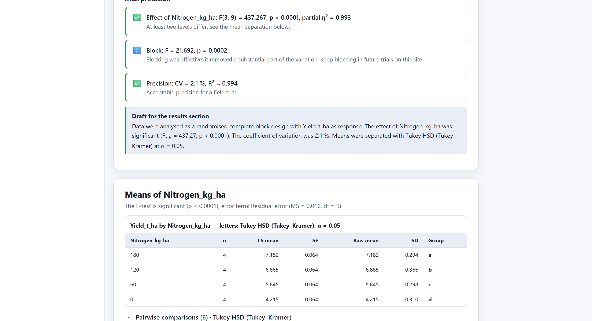
Figure 6.4.Interpretation and Draft for the results section for maize. The draft names the design, reports each F with its degrees of freedom as subscripts and its P value, the CV and the mean-separation test; copy it into the manuscript and adjust it.
✓Decision rule · what to read first in the table
If…
then…
there is a significant interaction
Read the cell means and the simple effects (section 6.5). Main effects on their own can be misleading.
there is no interaction and a main effect is significant
Separate the means of that factor (section 6.4).
the factor is quantitative (doses, densities, dates)
Fit the trend (section 6.6) in addition to, or instead of, the letters.
the block is significant
It is not a result about the treatments: it says that blocking was worthwhile.
the treatment F is not significant
Do not separate means with the LSD: the difference is not protected. Report the absence of differences with its power in mind.
In the paper, report for each factor and interaction the F with its two degrees of freedom and the P value, the CV of the trial and, preferably, the partial η².
6.4Adjusted means and letters
Below the ANOVA, the app opens a card for each treatment factor with the table of means, the letters, the expandable pairwise comparisons and a figure of means with letters ready for export.
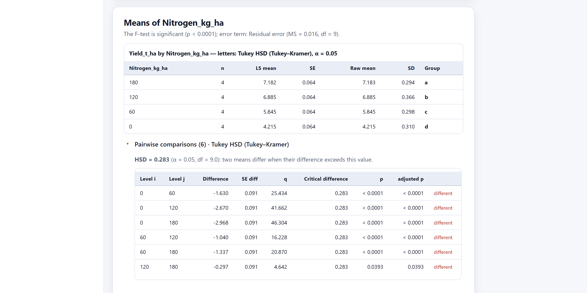
Figure 6.5. Nitrogen means with Tukey letters and the six pairwise comparisons expanded. The honestly significant difference is 0.283 t/ha: the four doses all differ from one another, even 120 and 180 kg (difference of 0.297, P = 0.0393).
Table 6.5. The columns of the table of means.
Column
What it is
LS mean
Least-squares mean: the mean predicted by the model with the other factors averaged and the covariates at their mean. With balanced data it equals the arithmetic mean; with missing plots or covariates, it corrects it.
SE
Standard error of the mean, using the error that corresponds to the factor (error a for the main plot).
Raw mean · SD
The arithmetic mean and the standard deviation, for comparison.
Back-transformed mean
Only with transformed responses: the mean on the original scale.
Group
The letters. Means sharing a letter do not differ at the chosen α; a mean can carry two letters.
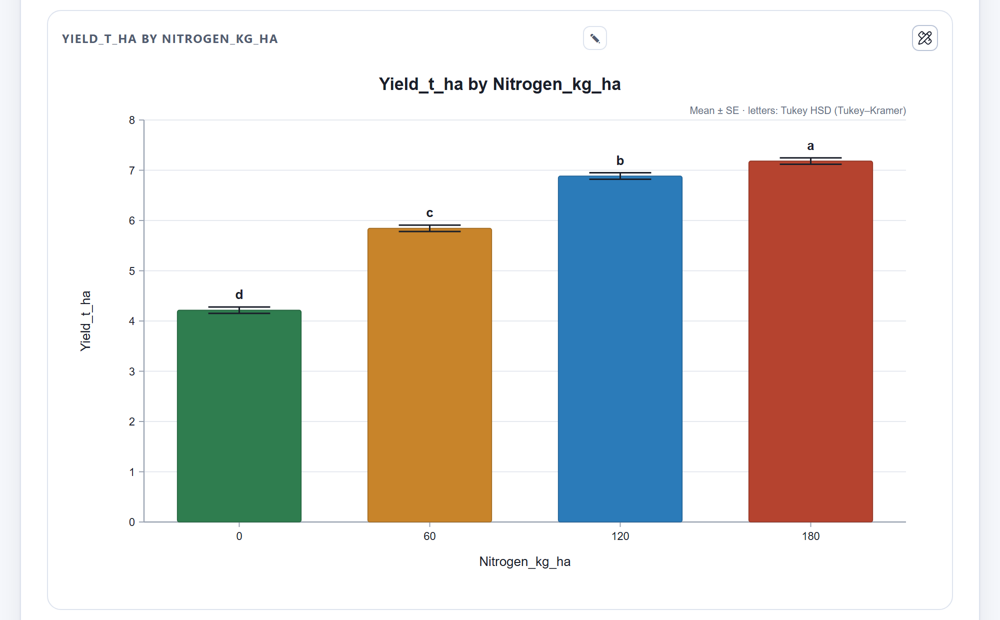
Figure 6.6. The figure of means ± SE with Tukey letters. The subtitle states what the bars are and which test produced the letters. It is edited and exported like any other figure and also appears in the Block 6 gallery.
Comparing only against the control: Dunnett
If the question is “which varieties outperform the one the farmer already grows?”, the ten pairs are not needed. Dunnett compares each treatment only with the control and gains power by making fewer comparisons. When you choose it, the Control level (Dunnett) menu appears.
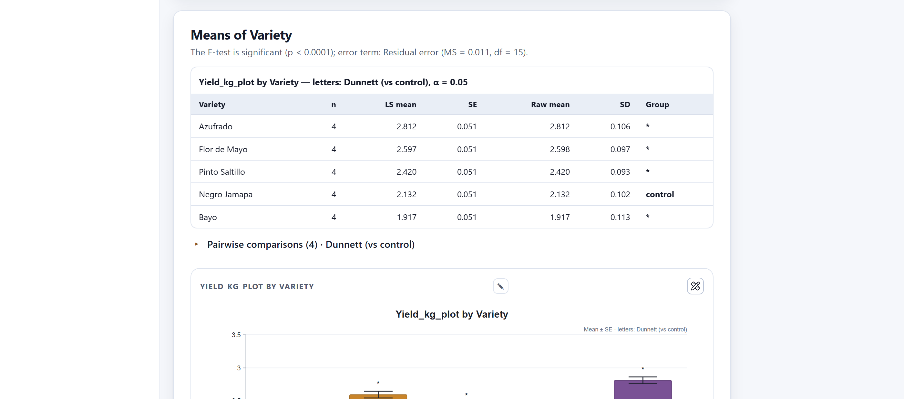
Figure 6.7. Dunnett on the beans with Negro Jamapa as the control. The Group column shows * for the varieties that differ from the control. The critical difference is 0.198 kg, smaller than Tukey's (0.224): with it, Bayo does differ from the control (P = 0.0318), which Tukey did not detect.
abOverlapping letters
In the beans with Tukey, Flor de Mayo carries “ab”: it differs neither from Azufrado (a) nor from Pinto Saltillo (b), although Azufrado and Pinto Saltillo do differ from each other. This is not a bug in the program: mean-separation tests are not transitive, and “ab” is the honest way of saying that the data are not enough to place Flor de Mayo in a single group. The app builds the letters with the maximal-groups method, which guarantees that two means share a letter if and only if the test did not separate them.
6.5Factorials: interaction and simple effects
With two factors, the app adds a card for the interaction: the table of cell means, the simple effects in both directions, the comparison of all combinations (except in split-plots and strip-plots) and a grouped bar chart with letters.
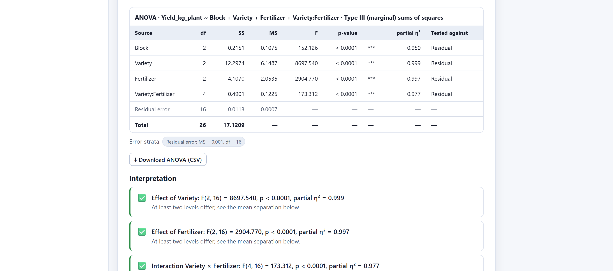
Figure 6.8. ANOVA of the tomato factorial in blocks. Variety, fertilisation and their interaction are significant (interaction F(4, 16) = 173.312, P < 0.0001). The interpretation adds a warning: with an interaction, conclusions are drawn from the cells.
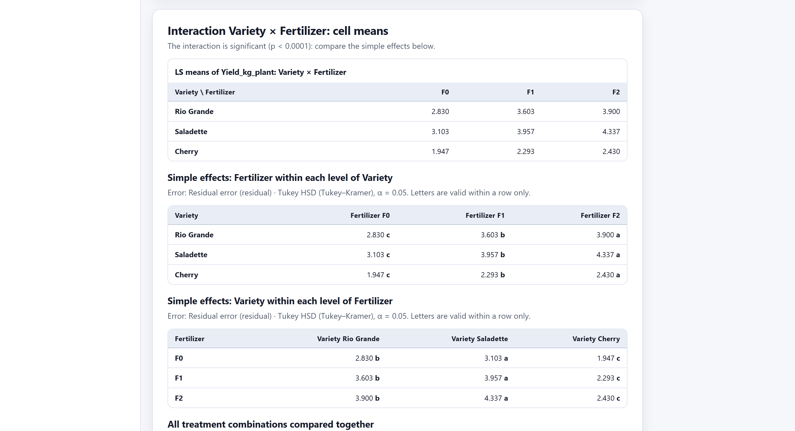
Figure 6.9. The interaction card: means of the nine cells and the simple effects. Within each variety, F2 > F1 > F0 (letters a, b, c in each row); within each fertilisation level, Saladette > Rio Grande > Cherry. The letters are valid within a row, not across rows.
θWhat is a simple effect?
The main effect of fertilisation averages its effect over the three varieties. If there is an interaction, that average hides the fact that the gain from F0 to F2 is 1.234 kg per plant in Saladette and only 0.483 kg in Cherry. A simple effect compares the levels of one factor within a fixed level of the other: fertilisation in Saladette, fertilisation in Cherry. Here the order of the levels is the same in every row, so the interaction is one of magnitude, not of rank; if F1 outperformed F2 in one variety, the recommendation would depend on the variety.
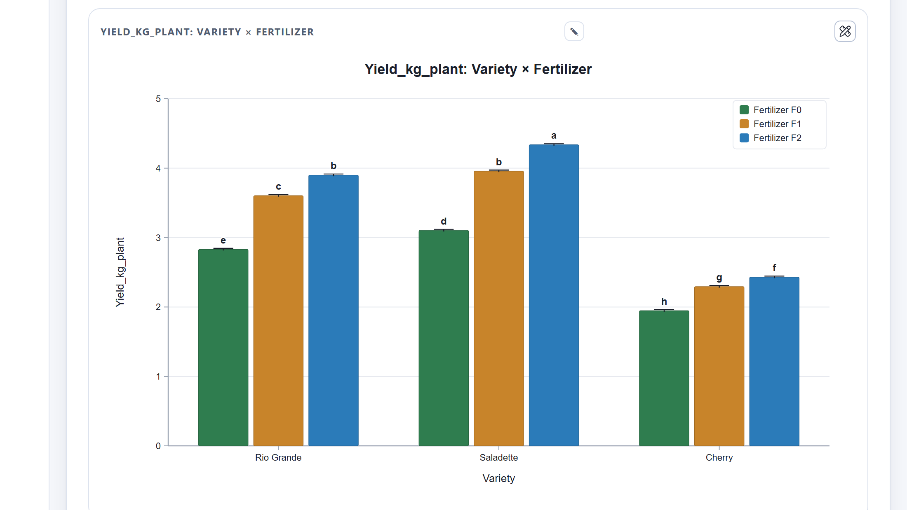
Figure 6.10. The nine combinations with the letters of the joint comparison (Tukey, minimum difference 0.077 kg). Saladette with F2 is the only “a”; Saladette with F1 and Rio Grande with F2 share the “b”.
Split-plots: the same table, different errors
The irrigation × variety example was sown with the two irrigation systems on main plots and the four varieties on sub-plots. It is analysed by choosing Split-plot in RCBD (main plots in blocks), with irrigation as the first factor.
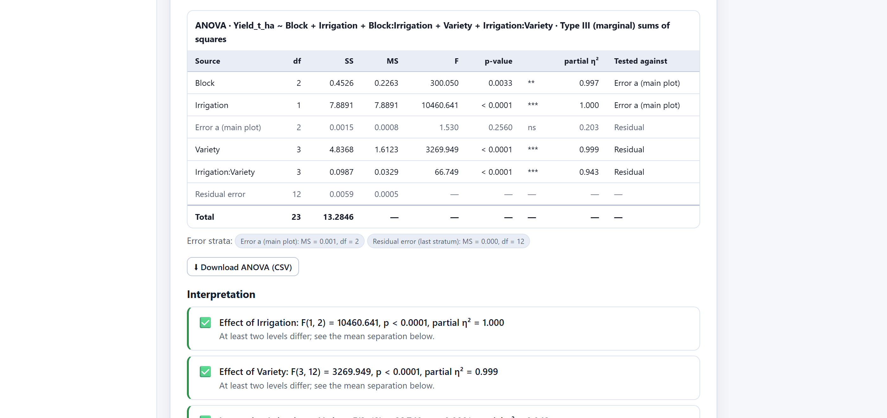
Figure 6.11. Split-plot ANOVA. Block and irrigation are tested against error a (2 degrees of freedom); variety and the interaction, against the residual (12). The error a row carries its own F against the residual: 1.530 (P = 0.2560), so the main plots did not vary much more than the small ones.
Table 6.6. The same data analysed as a factorial in blocks and as a split-plot.
Source
Factorial: F
Factorial: error df
Split-plot: F
Split-plot: error df
Irrigation
14,875.0
14
10,460.6
2 (error a)
Variety
3,040.0
14
3,269.9
12
Irrigation × variety
62.1
14
66.7
12
!Important · the change does not always show, but it is there
In this teaching example all the effects are so large that the verdict does not change. What does change is the basis of the irrigation test: 14 degrees of freedom in the factorial, 2 in the split-plot. With a critical F of 4.60 versus 18.51 for α = 0.05, a moderate irrigation effect that the factorial would declare significant may in fact not be. In a real trial, with an error a several times larger than error b, the F of the main-plot factor can drop to a tenth. The correct analysis is that of the design that was sown.
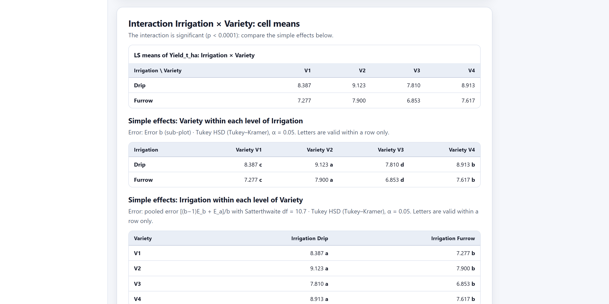
Figure 6.12. Simple effects in the split-plot. Varieties within each irrigation are compared with error b. Irrigation within each variety needs a combined error, [(b − 1) Eb + Ea] / b, with Satterthwaite degrees of freedom (10.7); the app computes it and states it in the subtitle. In split-plots, all combinations are not compared together because there is no single error for those differences.
6.6Trends, response curves and contrasts
When the levels of a factor are numbers (doses, densities, dates) and there are three or more, the app adds to its card a trend analysis with orthogonal polynomials and the fitted curve. The letters say which doses differ; the curve says how the crop responds and where the optimum lies.
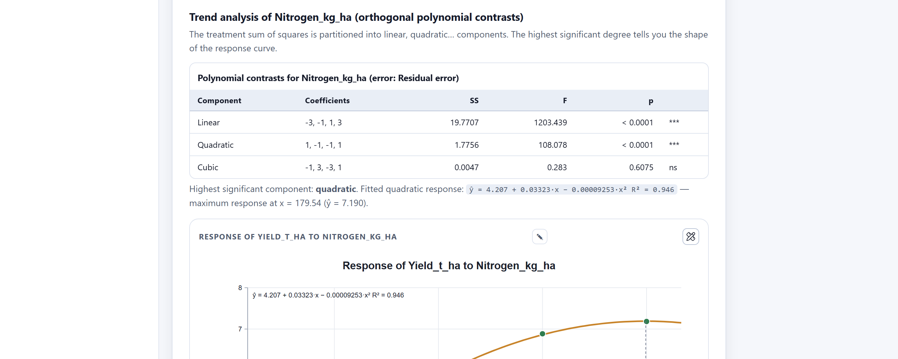
Figure 6.13. Polynomial contrasts for nitrogen. The sum of squares for doses (21.551) is partitioned into a linear component (19.771, F = 1203.4), a quadratic one (1.776, F = 108.1) and a negligible cubic one (0.005, P = 0.6075). The highest significant component is the quadratic: the response rises and levels off.
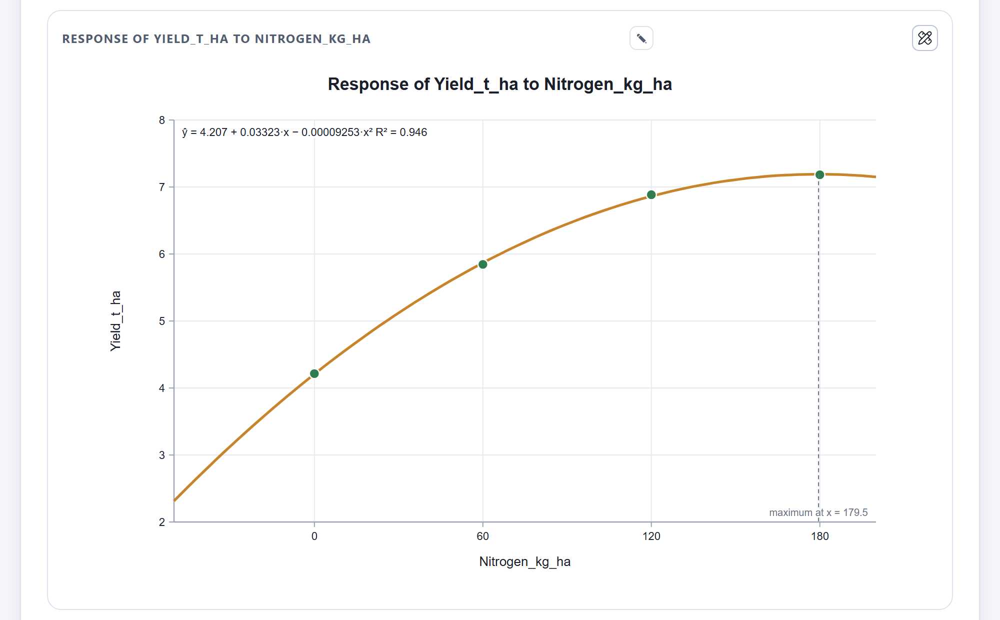
Figure 6.14. Quadratic response curve fitted to the 16 plots: ŷ = 4.207 + 0.03323·x − 0.00009253·x², R² = 0.946. The maximum is at 179.5 kg of N per hectare, with an estimated 7.19 t/ha. The points are the means of each dose.
!Important · an optimum at the edge of the range tested
The maximum of 179.5 kg falls practically on the highest dose in the trial, 180 kg. That does not show that 180 kg is the optimum: it says that the trial did not reach the zone where yield starts to fall, and that the quadratic form, symmetric by construction, places its vertex there. A curve is not extrapolated beyond the doses tested. Moreover, the biological optimum is not the economic one: given the prices of grain and fertiliser, the most profitable dose lies before the maximum, where the slope of the curve equals the price ratio.
✓Decision rule · which curve to report
If the highest significant component is…
then…
none
The response does not change systematically with the dose.
linear
A straight line: each unit of dose adds the same amount. There is no optimum within the range; higher doses are worth testing.
quadratic
A curve with a maximum or minimum; report the equation, R² and the optimum if it falls within the range.
cubic or higher
A more complex shape; with four or five doses it is usually noise or an atypical dose. Check before interpreting it.
Exact polynomial contrasts require equally spaced doses; the curve is fitted with the actual dose values.
Custom contrasts
The last card in the block, Custom contrast, tests planned comparisons between groups of treatments. Choose the factor, type one coefficient per level in the order shown by Level order (they must sum to zero) and press Test contrast. Each contrast is added to the table.
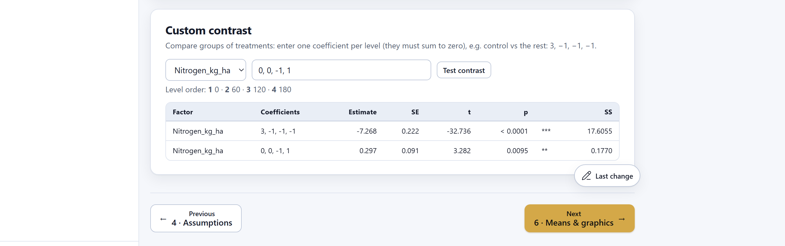
Figure 6.15. Two contrasts for maize. The first, 3, −1, −1, −1, compares the control without nitrogen with the average of the three doses: the estimate of −7.268 is three times that difference (2.42 t/ha), with P < 0.0001. The second, 0, 0, −1, 1, compares 180 with 120 kg: 0.297 t/ha, P = 0.0095.
θWhy does the contrast give P = 0.0095 and Tukey 0.0393 for the same pair?
The difference between 180 and 120 kg is the same, 0.297 t/ha, with the same standard error. Tukey compares it with the distribution of the range of four means, because it protects all six pairs at once; the contrast compares it with a simple t, because it is one question planned before the trial. If the question “is it worth going from 120 to 180 kg?” was in the protocol, the contrast is legitimate and more powerful. If it was chosen after seeing the means, the right protection is Scheffé.
Table 6.7. Useful contrasts for four treatments.
Question
Coefficients
Note
Control versus the rest
3, −1, −1, −1
The control in first position.
Two groups of two
1, 1, −1, −1
For example, organic versus mineral sources.
A specific pair
0, 0, −1, 1
Equivalent to a t test with the ANOVA error.
Linear trend
−3, −1, 1, 3
The same one computed by the trend analysis.
Transformed responses and covariates
If you created a transformed column in Block 4, choose it in Response variable. The ANOVA, the letters and the curve are computed on the transformed scale, and the table of means adds the Back-transformed mean column. If there are covariates, they enter the model as one more row of the ANOVA table and the means are adjusted to their average value.
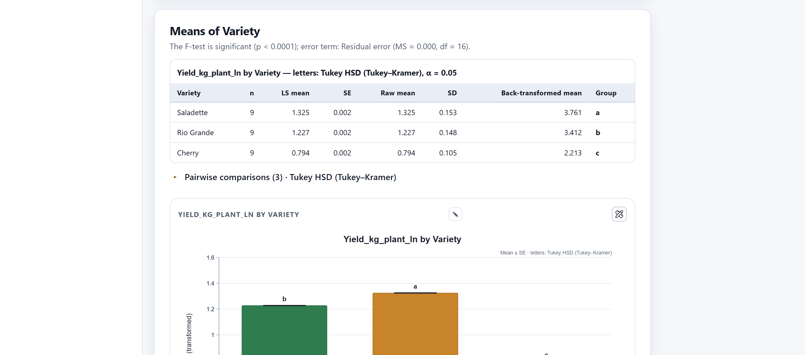
Figure 6.16. Tomato variety means with Yield_kg_plant_ln. The letters (a, b, c) come from the logarithmic scale; the back-transformed column gives the geometric means in kg per plant: Saladette 3.761, Rio Grande 3.412, Cherry 2.213. They are somewhat smaller than the arithmetic means because the mean of the logarithms always is.
6.7Step-by-step examples
▸Step by step · maize × nitrogen, randomised complete blocks
With the example loaded, press number 5. The app chooses Randomised complete block design (RCBD) ★ suggested, Type III, α = 0.05 and Tukey, and runs the analysis.
Read the tiles and the table (figure 6.3): F(3, 9) = 437.27 for nitrogen, significant blocks, a CV of 2.1%.
Scroll down to Means of Nitrogen_kg_ha (figure 6.5): 180 kg a, 120 kg b, 60 kg c, 0 kg d.
Read the trend (figures 6.13 and 6.14): a quadratic response with its maximum at 179.5 kg.
In Custom contrast type 0,0,-1,1 and press Test contrast for the planned question of 120 versus 180 kg.
Copy the draft of the results (figure 6.4) and download the ANOVA table and the table of means as CSV.
▸Step by step · irrigation × variety as a split-plot
Load Split-plot · irrigation × variety in Block 2 and check that Irrigation is the first factor: in split-plots, the first factor is the main-plot factor.
In Block 5 the app suggests Factorial in RCBD. Change it to Split-plot in RCBD (main plots in blocks) and press Run the analysis.
Check in Tested against that irrigation is tested against Error a (main plot) (figure 6.11).
Since the interaction is significant, read the simple effects (figure 6.12): V2 is the best variety under both irrigation systems, and drip outperforms furrow in all four varieties.
▸Step by step · wheat in a Latin square
Load Latin square · wheat. In Block 5 the app chooses Latin square: the model is Yield_t_ha ~ Row + Column + Treatment.
Read the table (figure 6.17): the treatments differ (F(3, 6) = 164.10) and neither rows nor columns are significant.
The Tukey means rank C (4.510, a), D (4.090, b), B (3.792, c) and A (3.237, d).
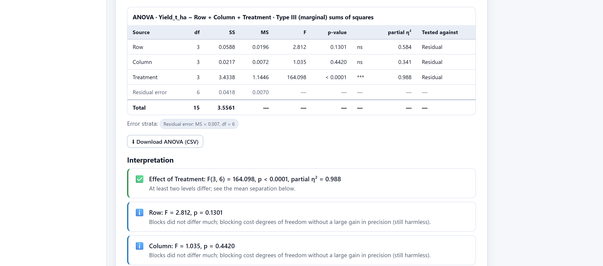
Figure 6.17. ANOVA of the Latin square. With only 6 degrees of freedom for the error, the Residual df tile does not reach the warning threshold, but it comes close: a 4 × 4 Latin square leaves little error, which is why squares from 5 × 5 to 8 × 8 are more common in the field.
iNote · changing the data resets the design
The app remembers the design you chose while you work with the same table and the same roles, even if you switch blocks or responses. When you load another file or change the roles in Block 2, it proposes the suggested design for the new structure again. If an analysis fails (for example, a model with no degrees of freedom for the error), the results card is hidden and only the message remains, so that it is not mistaken for the previous analysis.
θWhat you learned
The field decides the design, and the app translates it into a model with its error strata. The ANOVA table is read from the interaction down to the main effects; the letters depend on the test chosen, which must be stated; and quantitative factors call for a curve, not just letters. A planned contrast answers the question that motivated the trial better than ten pairwise comparisons.
With the results in hand, the next step is to present them. The Block 6 chapter covers the gallery of figures built from this analysis, the preset journal styles, editing, multi-panel figures and export at the resolution each journal requires.
B6
Chapter seven · Block 6 · Means & graphics
Graphics of results
A table of means with letters convinces a reviewer; a good figure convinces a reader. From the Block 5 analysis, Block 6 builds a gallery of editable figures for every result: means with letters in four presentations, differences with intervals, response curves, interactions, heat maps, variance partitioning and field maps. With journal styles, multi-panel figures and batch export at whatever resolution is required.
7.1Which figure for which result
7.2The gallery and the style presets
7.3Editing a figure
7.4Multi-panel figures
7.5Exporting at the journal’s resolution
7.1Which figure for which result
Block 6 computes nothing new: it draws the analysis carried out in Block 5, with its adjusted means, its standard errors, its letters and its curve. If No analysis yet. Run Block 5 first appears when you open it, that analysis has not been run or the data have changed since; the Go to Block 5 button takes you there.
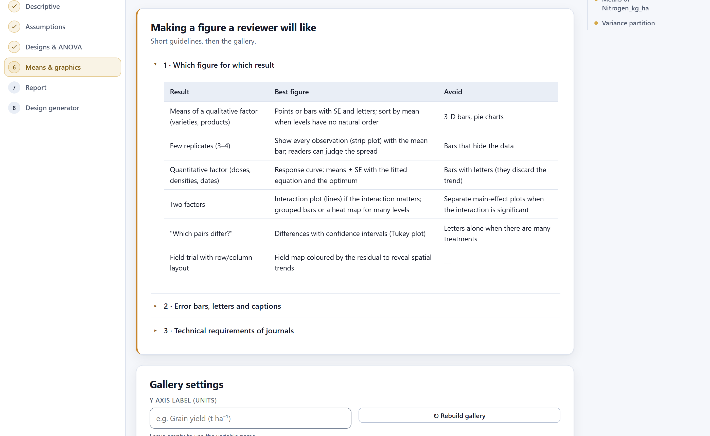
Figure 7.1. The Making a figure a reviewer will like card: which figure suits each result, how to state error bars and letters, and the technical requirements of journals.
Table 7.1. The right figure for each result, and what to avoid.
Result
Best figure
Avoid
Means of a qualitative factor (varieties, products)
Points or bars with SE and letters; sorted by the mean if the levels have no natural order.
3D bars, pie charts.
Few replicates (3 or 4)
All the observations together with the mean: the reader judges the spread.
Bars that hide the data.
Quantitative factor (doses, densities, dates)
Response curve: means ± SE with the fitted equation and the optimum.
Bars with letters: they throw away the trend.
Two factors
Interaction plot (lines) if the interaction matters; grouped bars or a heat map if there are many levels.
Separate figures of the main effects when the interaction is significant.
“Which pairs differ?”
Differences with confidence intervals.
Letters alone when there are many treatments.
Trial with rows and columns
Field map coloured by the residual to reveal spatial trends.
—
✓Decision rule · what a figure caption must include
Element
How to write it
What the bars are
“Means ± standard error (n = 4)”. Never implicit.
What the letters mean
“Means with the same letter do not differ significantly (Tukey, α = 0.05)”. The test goes in the caption, not in the title.
Double letters
“ab” belongs to both groups; it is not corrected by hand.
Y axis
Bars start at zero; points may zoom in, and the caption says so.
Units
In the axis label: “Grain yield (t ha⁻¹)”.
Colour
Colour-blind-safe palettes (Okabe–Ito, Paul Tol) and, if the figure will be printed in grey, distinct markers or line types as well as colour.
The app's figures already state in the subtitle the type of bar and the test behind the letters. Copy that information into the caption before deleting the subtitle.
7.2The gallery and the style presets
The gallery builds itself when the block opens and is rebuilt every time Block 5 produces a new analysis. At the top is the Gallery settings card; below it, one card per result with its figures.
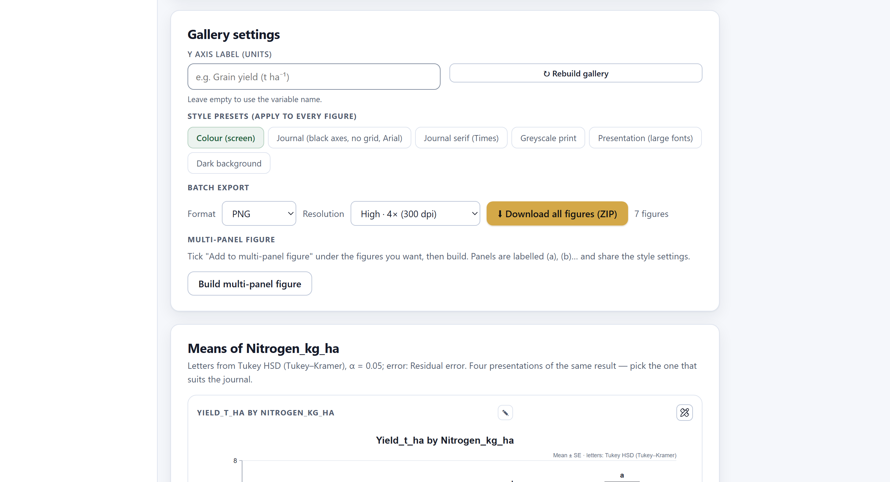
12345
Figure 7.2.Gallery settings with the maize example: 7 figures.
1Y axis label (units): the Y-axis label for all figures, with units. If left empty, the column name is used.
2Rebuild gallery redraws the gallery with the new label.
3Six style presets that apply to all the figures at once (table 7.3).
4Batch export: format, resolution and a ZIP with all the figures.
5The multi-panel figure composer (section 7.4).
iNote · column names and labels
The figures use the column names exactly as they appear in the table: Yield_t_ha, Nitrogen_kg_ha. For a figure in a paper, type something like “Grain yield (t ha⁻¹)” in Y axis label and press Rebuild gallery. The X-axis label and the titles are changed figure by figure in the editor (section 7.3). Another option is to give the columns good names from the field notebook onwards.
Table 7.2. The figures in the gallery and when they appear. Maize produces 7; the tomato factorial, 15; the wheat Latin square, 8.
Figure
Appears for…
What it shows
Means as bars
each factor
Adjusted means ± SE with letters, axis from zero.
Means as points
each factor
The same means with 95% confidence intervals, axis fitted to the data.
Box plot with letters
each factor
The distribution of the plots of each level, with the mean and the letters.
Observations with letters
each factor
Each plot as a point, the mean ± SE and the letters.
Differences with intervals
each factor
Each pair of means with its difference ± the critical difference of the test; significant ones in red.
Response curve
each quantitative factor with 3 or more levels
Means with letters and the fitted polynomial curve, its equation and the optimum.
Interaction plot (two orientations)
each pair of factors with an interaction in the model
Lines with simple-effect letters: the levels of the second factor within each level of the first.
Grouped bars
ditto
The combinations with the letters of the joint comparison (or of the simple effects in split-plots).
Cell heat map
ditto
The two-way table coloured by the mean, with letters.
Variance partitioning
always
The fraction of the total sum of squares attributable to each source and to the error.
Field maps (response and residuals)
designs with row and column
The trial as it was laid out in the field, coloured by the response and by the residual.
Four presentations of the same means
For each factor, the gallery offers the same result in four forms. This is not redundancy: each journal, each number of replicates and each audience calls for a different one.
Figure 7.3. Bars with SE and letters: the classic presentation, axis from zero.
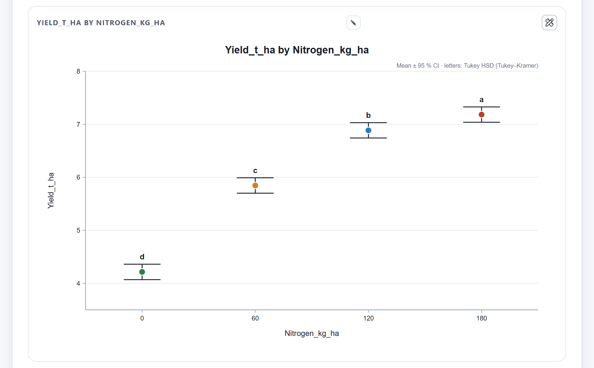
Figure 7.4. Points with 95% intervals: the axis fits the data and the differences are easier to see.
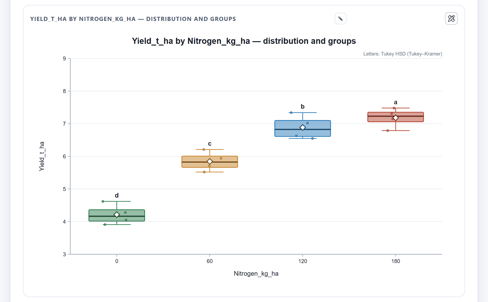
Figure 7.5. Box plots with the plots, the mean (diamond) and the letters.Figure 7.6. Each plot with the mean ± SE: the honest option with four replicates.
Figure 7.7. Pairwise differences with the Tukey test interval. An interval that crosses zero is not significant; the one for 120 − 180 comes close but does not cross it (−0.30, critical difference 0.283).Figure 7.8. Response curve with the Tukey letters at each dose, the equation, R² and the maximum at 179.5 kg.
Figure 7.9. Partition of the sum of squares for maize: nitrogen explains 94.7%, blocks 4.7% and the error 0.6%. A compact way of showing the ANOVA table in a presentation.
Two factors: interaction, grouped bars and heat map
Figure 7.10. Variety × fertilisation interaction with the fertilisation letters within each variety. The second orientation, with fertilisation on the X axis, is generated as well.Figure 7.11. Heat map of the nine cells with the mean and the letter of the joint comparison: Saladette with F2 is the darkest cell (4.34, a).
iNote · overlapping letters
In the interaction plot, when two means almost coincide (Cherry with F1 and F2 in figure 7.10), their letters can overlap. There are three ways out: reduce Letter size in the editor; turn off Letters at each point and use the grouped bars or the heat map, where each cell has its own space; or export as SVG and move the letter in a vector editor.
Field maps: the trial as it was on the ground
When the design has a row and a column, the gallery draws the actual layout of the trial twice: coloured by the response and coloured by the model residual. The second is a diagnostic tool: if positive residuals cluster in a corner or along a strip, there is a spatial trend the design did not absorb.
Figure 7.12. Yield of the wheat Latin square in its position: treatment C is the darkest in all four rows.Figure 7.13. Residuals on a red–blue scale centred at zero: positive in red, negative in blue. There are no patches; only plot D in row 4, column 1 stands out (+0.12).
✓Decision rule · reading the residual map
If the colours…
then…
are scattered with no pattern, like a random chequerboard
The design absorbed the variation of the land. As expected.
form a strip of the same sign along a row or column
A gradient that blocking did not capture; in the next trial, orient the blocks perpendicular to that strip.
form a patch in one corner
A local problem (waterlogging, edge, shade); check the field notebook.
stand out in a single plot
A suspect plot; compare it with the table of suspect observations in Block 4.
The Centre the colour scale at zero checkbox is ticked by default in the residual map so that the neutral colour corresponds to a zero residual.
Style presets
The Style presets buttons change the theme, typeface, grid and font size of all the figures in the gallery at once, and are remembered for figures drawn later in any block.
Table 7.3. The six style presets.
Button
What it changes
For…
Colour (screen)
Light theme, Helvetica, grid, AgriDesign palette.
Working on screen; it also restores colour after greyscale.
Journal (black axes, no grid, Arial)
Black axes, no grid, Arial, font 10% larger.
Most journals.
Journal serif (Times)
The same, with Times New Roman.
Journals and theses with a serif typeface.
Greyscale print
Journal style with a greyscale palette.
Black-and-white printing.
Presentation (large fonts)
Font 50% larger, bold axis titles, dashed grid.
Slides and posters.
Dark background
Dark background, font 20% larger.
Presentations with a dark background.
Figure 7.14.Journal (black axes, no grid, Arial): black axes, no grid, framed legend.Figure 7.15.Greyscale print: the three fertilisation levels in three distinguishable greys.
7.3Editing a figure
Below each figure is the Edit figure — titles, colours, fonts, sizes link, which opens a two-tab editor, and the export bar. Changes are shown instantly. The editor was introduced in chapter 4 (figure 4.16) with the content tab; the style tab, common to all figures, is shown here.
1234567
Figure 7.16. The Style & typography tab of the bar chart.
1The two tabs: Content & colours and Style & typography.
2Theme: Light, Paper, Dark, Minimal or Journal.
3Font family: Helvetica, Arial, Georgia, Times New Roman, Segoe UI, Calibri, Cambria or monospace.
4Four size sliders: all, titles, axes and ticks, labels and legend.
5Bold axis titles, Gridlines and Dashed gridlines.
6Width (px) and Height (px): the base size of the figure, from 400 to 2400 by 300 to 2000.
7Just below the editor: this figure's export bar (section 7.5) and the checkbox for adding it to a multi-panel figure.
Table 7.4. Options in the Content & colours tab, by figure.
Figure
Specific options
All
Title, subtitle, axis labels.
Means (bars and points)
Style (bars, points or lollipop), error bars (SE, SD, 95% CI, none), letters, printed values, sort by the mean, axis from zero, bar width, font size, single colour or one per level.
Box plot and observations
Palette or single colour, observations, mean marker, letters, axis from zero, box width or horizontal jitter, point and font size; for observations, the mean bar (SE, SD, CI or the mean only).
Differences
Colour of the non-significant and of the significant ones, sort by the difference, printed values.
Interaction
Palette, colour per series, legend position, line width, marker size, distinct line types, error bars, letters at each point, axis from zero, font size.
Heat map and field maps
Colour map (13, including Viridis and Cividis, which is colour-blind-safe), printed values and letters or labels, decimals; in field maps, centring the scale at zero.
Variance partitioning
Palette, colour per source, printed percentages.
iNote · what is remembered and what is not
Options marked as shared (theme, typeface, font sizes, grid) are saved in the browser and applied to figures drawn later. Titles, labels, per-level colours and dimensions belong to each figure. When the gallery is rebuilt (Rebuild gallery or a new analysis), individual edits are lost: finish the analysis before polishing the figures.
7.4Multi-panel figures
Journals often ask for several graphs in a single figure with panels (a), (b), (c). Below each figure in the gallery there is an Add to multi-panel figure checkbox; tick two to eight of them and press Build multi-panel figure in the gallery settings. The composer arranges the panels in one or two columns (three if there are more than four), labels them and shows them below the settings.
Figure 7.17. A four-panel figure for maize: (a) means as bars, (b) all the plots, (c) differences with intervals and (d) response curve. The panels share the style and are exported as a single image.
Table 7.5. Options of the multi-panel figure editor.
Option
What it does
Columns
Number of columns in the grid, from 1 to 4.
Panel labels
(a) (b) (c), A B C, a b c or no labels.
Label size
Size of the panel labels.
Gap between panels
Space between panels.
Keep panel titles
Keeps or removes the title of each panel; in a paper they are usually removed and described in the caption.
!Important · panels that are compared
If two panels show the same variable to compare treatments or years, they must have the same Y-axis scale; otherwise the reader compares heights that are not comparable. Adjust Y axis from zero or the dimensions of each figure before ticking it, and edit each panel in the gallery: the composer takes the figures as they are at that moment.
7.5Exporting at the journal’s resolution
Each figure is downloaded on its own with its export bar, and all of them together with Download all figures (ZIP).
Figure 7.18. The export bar with TIFF selected: format, resolution, background, download button and the resulting size, 3480 × 2120 pixels, which at 300 dpi measure 29.5 × 17.9 cm.
Table 7.6. Export formats.
Format
When to use it
TIFF
The format many journals ask for at submission. Uncompressed, with the resolution recorded in the file.
PNG
Documents, theses and most journals; lossless, small file, with the resolution recorded. Supports a transparent background.
SVG
Vector: it scales without losing sharpness and can be edited in Inkscape, Illustrator or PowerPoint. If the journal asks for EPS or PDF, convert it in Inkscape.
JPG · WEBP
Only for the web or photographs; their lossy compression blurs letters and thin lines.
Table 7.7. The resolutions in the menu. Batch export offers the same five and the formats PNG, TIFF, SVG, JPG or PNG + SVG.
Option
Multiplies the base size
dpi recorded
Use
Screen · 2× (150 dpi)
×2
150
Screen, drafts.
High · 4× (300 dpi)
×4
300
Colour and halftone figures (the default).
Very high · 6× (450 dpi)
×6
450
Combined line-and-colour figures.
Publication · 8× (600 dpi)
×8
600
Line art: graphs without shading.
Maximum · 12× (900 dpi)
×12
900
Journals that require 900 to 1000 dpi for line art.
θTheory in brief · pixels, dpi and centimetres
What the journal checks is how many pixels the figure has at the width at which it will be printed. A column is about 8.5 cm wide and a full page 17.5 cm; at 300 dpi that is 1004 and 2067 pixels wide. The app records in the file the dpi of the option chosen and shows the corresponding physical size (29.5 cm for the bar chart exported at 4×, 3480 pixels), but the journal will shrink the figure to its column: 3480 pixels in 17.5 cm is equivalent to 505 dpi, more than enough. What you do need to watch when shrinking is the font size, which shrinks in the same proportion.
Table 7.8. Recommended settings for lettering of 8 to 12 points once printed.
Destination
Final width
Width (px)
Font size: all
Resolution
Approximate result
Double column
17.5 cm
860 (default)
1.3
4× or 8×
8 pt tick labels, 10 pt axis labels; about 3500 or 7000 px wide.
Single column
8.5 cm
600
1.8
4×
8 pt tick labels, 9 pt axis labels; 2400 px wide.
Slide
full screen
1200
Presentation preset
2×
2400 px, lettering legible from the back of the room.
8–12 pt
Font size at final size
Most agricultural journals require 8 to 12 points for text in figures, in Arial, Helvetica or Times. With the default size, a figure shrunk to one column ends up with 3- to 4-point lettering, which is illegible. Before exporting, reduce the width and increase the font size (table 7.8), or use the Journal (black axes, no grid, Arial) style as a starting point.
Batch export
Apply the style preset you want and edit the figures you are going to use.
In Batch export choose the format (PNG + SVG saves both versions of each figure) and the resolution.
Press Download all figures (ZIP). The button reads Preparing… while it generates the images.
The ZIP, named for example Yield_t_ha_figures_300dpi.zip, contains all the figures in the gallery, the multi-panel figure if you built one, and a README.txt with the response, the design, the mean-separation test, α and the resolution.
iNote · file names
Each figure is saved with a name that describes its content: Yield_t_ha_Nitrogen_kg_ha_bars.png, …_curve.tif, …_interaction.svg, …_field_residuals.png. That way they sort themselves in the manuscript folder.
▸Step by step · the maize figure for a paper
With the Block 5 analysis done, open Block 6. The maize gallery has 7 figures.
In Y axis label (units) type “Grain yield (t ha⁻¹)” and press Rebuild gallery.
Press Journal (black axes, no grid, Arial).
On the response curve, open Edit figure: change the X-axis label to “Nitrogen (kg ha⁻¹)”, delete the title (it will go in the caption) and, in Style & typography, set Font size: all to 1.3.
In its export bar choose TIFF and Publication · 8× (600 dpi), and press Download figure.
Write the caption: “Response of maize yield to nitrogen dose. Means of four replicates; means with the same letter do not differ (Tukey, α = 0.05). Curve: ŷ = 4.207 + 0.03323x − 0.00009253x², R² = 0.946”.
θWhat you learned
Each result has its figure: letters for qualitative factors, curves for quantitative ones, lines or heat maps for interactions, and field maps for checking the land. The style is decided once for the whole gallery; labels and colours, figure by figure. And resolution is thought through backwards: first the width and font size at which the figure will be printed, then the pixels.
With the figures ready, all that remains is to bring everything together. The Block 7 chapter presents the automatic report, with written-up methods, tables and figures exactly as you edited them, its printing to PDF and the ZIP package with data, tables and figures.
B7
Chapter eight · Block 7 · Report
Report and export
The last step of the analysis brings everything together in a single document. Block 7 writes a self-contained report with a title, objective, materials and methods, data, assumptions, ANOVA table, means with letters, contrasts, the figures exactly as you edited them, appendices and the software citation. It downloads as HTML, prints to PDF and is bundled into a ZIP with the data, the tables as CSV and the figures at the chosen resolution: supplementary material ready for the journal or the thesis committee.
8.1What the report contains
8.2Details, sections and preview
8.3From the report to the PDF and the manuscript
8.4The ZIP package
8.1What the report contains
The report is built from the analysis currently on screen in Block 5 and, if they were run, from the assumption checks of Block 4 and the figures of Blocks 3 to 6. It repeats no calculations: it takes the results exactly as they stand. The natural order is therefore to finish the analysis, polish the figures and only then open Block 7.
Figure 8.1. The What goes into a good results report card: methods, results, figures, reproducibility and how to obtain the PDF.
Table 8.1. The parts of the report, in the order in which they appear. Those marked as optional are switched on in the Sections list.
Part
What it contains
Source
Header
Title, authors, affiliation, trial, date of generation and name of the data file.
Report details
Objective
The objective, if one was written.
Report details
Materials and methods
A drafted paragraph: design and replication, factors with their levels, response and units, covariates, transformation, assumption checks, model, error strata, type of sums of squares, mean-comparison test and α, polynomial contrasts, and the version and DOI of the software.
Blocks 2, 4 and 5
Data (optional)
Size of the table, observations analysed and statistics by treatment.
Block 2
Assumptions (optional)
The rating, the model and the table of assumption tests. It appears only if Block 4 was run on the same response.
Block 4
Results
ANOVA table with its footnote, the draft results text from Block 5, means with letters and the minimum difference, polynomial contrasts and cell tables for interactions.
Block 5
Figures (optional)
The figures from the selected blocks, numbered, grouped by block and embedded as vector graphics.
Blocks 3 to 6
Appendix A (optional)
Pairwise comparisons for each factor, with difference, standard error, test statistic and adjusted P.
Block 5
Appendix B (optional)
The complete data table as loaded.
Block 2
How to cite (optional)
The software citation in APA style, the DOI, the repository and the BibTeX entry.
—
iNote · the language of the report
The report is written in whatever language the interface is using at that moment: in English if the app is in English, and in Spanish if the language is switched with the ES | EN toggle before the preview is built. This also applies to the date, to the table and figure captions and to the methods paragraph. Since the app opens in Spanish by default, check the toggle before building a report for a journal that publishes in English, and press Build / refresh preview again after switching. The downloaded HTML opens and can be edited in any word processor (Word, LibreOffice); tables and figures are preserved.
8.2Details, sections and preview
When Block 7 is opened after an analysis, the app proposes a title, builds the preview and shows the 1 · Report details card. If there is no analysis yet, the notice No analysis yet. Run Block 5 first appears instead.
123456
Figure 8.2. The report details filled in for the maize example.
1Title, Authors, Affiliation and Trial (site, season): the report header. The proposed title (“Effect of … on …”) follows the analysis for as long as you leave it untouched; a title you type yourself is kept.
2Response units: the units, which the methods paragraph writes next to the response.
3Objective (optional): the objective, in a section of its own.
4Sections: which optional parts to include (table 8.1).
5Figures to include and Build / refresh preview: which blocks contribute figures, and the button that rebuilds the preview with your changes.
6Copy methods paragraph copies the methods paragraph to the clipboard; beside it, the size of the report and how many tables and figures it contains.
!Important · only figures that have been drawn are included
The report takes the figures that exist on the page at that moment, with their edits. Those of Block 3 are drawn when that block is opened; those of Block 4, when the diagnostics are run; those of Block 6, when the gallery is opened. If a box under Figures to include adds nothing, open that block first and press Build / refresh preview again. Loading another table or changing the roles discards the previous figures and results, and the report again asks for the Block 5 analysis.
iNote · repeated figures
The figure of means with letters is drawn in Block 5 and again in the Block 6 gallery. With the default boxes (Blocks 5 and 6) it appears twice in the report. For a shorter report, keep only Block 6 · result graphics, which contains the four presentations of the means, the response curve and the variance partition.
Figure 8.3.2 · Preview and export: the download and print buttons, the package options and, below them, the preview of the report exactly as it will be downloaded. With the default sections, the maize example gives a report of about 77 KB with 5 tables and 9 figures.
A tour of the maize report
Figure 8.4. The beginning of the report: header, objective, the materials and methods paragraph and the data section with table 1.
▸The methods paragraph for the maize example
“The experiment was laid out as a randomised complete block design with 4 blocks. Treatment factor was Nitrogen_kg_ha (4 levels: 0, 60, 120, 180). The response variable was Yield_t_ha (t ha⁻¹). Residuals were checked for normality (Shapiro–Wilk), homogeneity of variances (Levene’s test) and additivity (Tukey’s one-degree-of-freedom test). Data were analysed by analysis of variance according to the model y = μ + β + τ + ε with a single error term and Type III sums of squares. Treatment means were compared with Tukey HSD (Tukey–Kramer) at α = 0.05, and trends over quantitative factors were examined with orthogonal polynomial contrasts. All computations were performed with AgriDesign version 1.0 (Barrera-Guzmán, 2026; https://doi.org/10.5281/zenodo.22683046), a browser-based platform for the design and analysis of agricultural experiments.” The sentence on the residuals appears only when Block 4 has been run on the same response (table 8.2); in figure 8.4 it is absent.
Table 8.2. What the methods paragraph writes, depending on the analysis.
The transformation, and the statement that means are reported back-transformed; the name of the response without its suffix (_ln, _sqrt…).
Block 4 diagnostics on the same response
The checks of normality, homogeneity and, if there were blocks, additivity. If Block 4 was not run, the sentence is left out: the report does not claim checks that were never made.
error strata (split-plot, strip-plot)
“with the appropriate error strata” instead of “a single error term”.
a quantitative factor with 3 or more levels
The mention of orthogonal polynomial contrasts.
Figure 8.5. The results section: ANOVA table with CV, R², grand mean and the key to the asterisks in its caption; the results paragraph with F3,9 as a subscript; the means with letters and the honestly significant difference (HSD) in the caption; and the polynomial contrasts.Figure 8.6. The figures, grouped by source block and numbered. They are embedded as vector graphics, so they stay sharp at any magnification and in the PDF.Figure 8.7. The end of the report: the software citation, the concept DOI, the source code, the online version and the BibTeX entry.
8.3From the report to the PDF and the manuscript
The preview card offers two direct outputs, and Block 7 offers a third one designed for the manuscript.
Table 8.3. The ways of getting the report out of the app.
Button
What it does
Use it to…
Download report (HTML)
Saves a self-contained HTML file with the tables and figures inside. It opens without an internet connection in any browser.
Archive the analysis, send it, edit it in a word processor.
Print / save as PDF
Opens the report in a new window and launches the browser’s print dialogue. If the browser blocks pop-ups, the app warns: Allow pop-ups to print.
Produce a PDF for the supervisor, the committee or the records.
Copy methods paragraph
Copies the methods paragraph, as text, to the clipboard and confirms it with a green message.
Paste it into the manuscript or thesis.
Press Print / save as PDF. A tab opens with the report and the print dialogue.
Under Destination, choose Save as PDF.
Leave the default margins: the report already sets 18 mm margins for A4 paper. If you print on US Letter, change it under Paper size.
Turn on Background graphics to keep the colour of the table headers and boxes.
Press Save.
8 pages
The maize report in print
With the default sections, the report for the maize example fills 8 A4 pages: two of text and tables and six of figures, usually two per page. Figures are never split across pages, and each section heading stays on the same page as its first figure.
✓Decision rule · what to take from the report into a paper
From the report…
into the manuscript…
Methods paragraph
Into the materials and methods section, after adding what the app cannot know: location, soil, crop management, plot size and dates.
ANOVA table
Summarised: F with its degrees of freedom and P for each source, and the CV. The full table goes to the supplementary material.
Means with letters
Into a table in the paper, with the caption the report already provides (test, α, minimum difference).
Draft results
As a starting point; replace the column names with readable names and add the agronomic interpretation.
Figures
From the ZIP or the Block 6 gallery, at the journal’s resolution (chapter 7), not from the PDF.
Appendices and data
Into the supplementary material.
The figure captions in the report repeat the title of each figure; in the paper, rewrite them with the information in table 7.1.
8.4The ZIP package
Download full package (ZIP) gathers into a single file everything needed to reproduce and publish the analysis. Before pressing it, choose how the figures are packaged: PNG + SVG (default), TIFF + SVG, JPG + SVG or SVG only, at 300, 600 or 900 dpi. While the package is being prepared, the button reads Packing….
Nitrogen_response_of_maize…_package.zip
├── report.html the complete report
├── README.txt what each folder holds
├── data/
│ └── rcbd_maize_nitrogen.csv the data as loaded
├── tables/
│ ├── anova.csv the ANOVA table
│ ├── means_Nitrogen_kg_ha.csv means, SE and letters
│ └── pairwise_Nitrogen_kg_ha.csv pairwise comparisons
└── figures/
├── svg/ each figure as a vector file
└── png/ each figure at the chosen resolution
Table 8.4. The package for the maize example with the figures of Blocks 3 to 6, as PNG + SVG at 300 dpi.
Content
Files
Note
Report and README
2
The report takes up about 190 KB with all the figures.
Data
1
CSV with comma separator and decimal point.
Tables
3
ANOVA, plus means and comparisons for each treatment factor.
Figures
42
21 figures, each as SVG and as PNG.
Total
48
5.8 MB. It took about 23 seconds to generate on a desktop computer.
iNote · the package as supplementary material
Many journals and data repositories require the analysis to be reproducible. The ZIP already makes that possible: the original data, the tables in an open format, the figures as vector graphics and a report that states the version and DOI of the software. Upload it as it is as supplementary material, or to a repository such as Zenodo together with the paper.
▸Step by step · the maize report
Work through Blocks 3, 4, 5 and 6 with the maize example so that their figures are drawn.
Open Block 7. In the details, type the title, authors, affiliation, trial, t ha⁻¹ in Response units and the objective.
Under Sections, tick Appendix: pairwise comparisons. Under Figures to include, untick Block 5 to avoid repeated figures.
Press Build / refresh preview and check the report in the preview.
Press Copy methods paragraph and paste it into your draft.
Press Print / save as PDF and save the PDF.
Choose TIFF + SVG and 600 dpi, and press Download full package (ZIP).
θWhat you learned
The report faithfully mirrors what you did in the previous blocks: if an analysis is missing, it is missing from the report; if you edited a figure, it goes in edited. The methods paragraph describes only what was actually done and cites the version of the software. The PDF is for reading and archiving; the ZIP, for publishing and reproducing.
With the analysis published, the cycle closes by planning the next trial. The Block 8 chapter presents the design generator: randomisation with a seed, the field layout, the field book for recording data and the calculation of the number of replicates.
B8
Chapter nine · Block 8 · Design generator
Design generator and power
The only block that needs no data: it is for planning the trial before sowing. Block 8 randomises the treatments of ten designs with a seed that makes the randomisation reproducible, draws the field layout with the plot numbers, works out the degrees of freedom of the analysis, generates a field book ready for data entry and answers the question worth asking first: how many replicates are needed to detect the difference that matters.
9.1Plan before you sow
9.2Randomisation with a seed
9.3The field layout
9.4The field book
9.5How many replicates: power and detectable difference
9.1Plan before you sow
Blocks 2 to 7 analyse a finished trial; Block 8 prepares the next one. It is available as soon as the app opens, without loading any table, and its output (the field book) returns to Block 2 once the measurements have been entered. This closes the cycle of figure 1.6.
Figure 9.1. The Planning a field experiment card, with three topics: randomising properly, plot size, shape and blocks, and how many replicates.
θTheory in brief · the decisions made before sowing
Everything the analysis can do later depends on four earlier decisions. The design, chosen according to the field and to how the treatments are applied (section 2.4). The number of replicates, calculated from the expected CV and the difference worth detecting (section 9.5). The plot: elongated in the direction of the fertility gradient, with border rows that are not harvested, and blocks laid across the gradient so that each block is uniform within. The randomisation, carried out within the structure of the design and documented with its seed. A mistake in any of these cannot be corrected on the computer.
Table 9.1. Recommendations of the theory card on the plot.
Aspect
Recommendation
Shape
Long, narrow plots oriented along the gradient; blocks arranged across the gradient.
Harvest area
Discard border rows and plot ends: for example, harvest the 2 central rows × 4 m of a plot of 4 rows × 5 m.
Typical size
10 to 30 m² for cereals, 20 to 50 m² for maize; in pots, one or a few plants per pot and more replicates.
Protection
Guard rows around the trial and alleys between blocks to avoid interference: fertiliser drift, shading, lodging.
9.2Randomisation with a seed
The 1 · Generate a randomised layout card asks for the design, the seed and whatever that design needs: treatments, factor levels, replicates or checks. Fields that do not apply to the chosen design are hidden automatically.
123456
Figure 9.2. The generator set up for a trial of four nitrogen rates in a randomised complete block design.
1Design: the ten designs of table 9.2.
2Seed: the seed of the randomisation (2026 by default).
3new seed sets a random seed between 1000 and 91,000.
4Replicates / blocks: replicates, up to 50.
5Treatments: one treatment per line, or …or number of treatments to use T1, T2… In factorial designs the levels of factors A, B and C appear here instead; in the augmented design, checks and new entries.
6Layout, numbering and field-book options and the Generate layout and field book button.
Table 9.2. The ten designs of the generator and how each one is randomised.
Design in the app
Inputs required
How it is randomised
Completely randomised design (CRD)
Treatments, replicates
All plots are shuffled together and arranged in a rectangle.
Randomised complete block design (RCBD)
Treatments, blocks
An independent randomisation within each block.
Latin square
Treatments
A cyclic square is built and its rows, columns and letter assignment are shuffled. There are as many replicates as treatments.
Factorial (A × B [× C]) in CRD · in RCBD
Levels of A, B and, optionally, C; replicates
The combinations are treated as treatments and randomised as in a completely randomised or a block design.
Split-plot in RCBD
Levels of A (main plot) and B (sub-plot), blocks
A is randomised within each block and B within each main plot, with a fresh randomisation each time.
Strip-plot (split-block) in RCBD
Levels of A and B, blocks
A in horizontal strips and B in vertical strips, with one randomisation per block in each direction.
Split-split-plot in RCBD
Levels of A, B and C, blocks
A on main plots, B on sub-plots and C on sub-sub-plots, each level randomised within the one above.
Resolvable incomplete blocks
Treatments, replicates, block size k
Each replicate is shuffled and cut into blocks of k plots. The number of treatments must be a multiple of k.
Augmented design
Checks, new entries, blocks
The entries are spread across the blocks; each block receives all the checks and is shuffled.
θTheory in brief · what a seed is
A computer does not truly draw lots: it generates a sequence of numbers that looks random, starting from an initial number, the seed. The same seed always produces the same sequence and therefore the same layout. This has two advantages. The plan can be regenerated if the sheet is lost, and a reviewer or colleague can check that the layout came from a randomisation and not from a choice made by hand. The seed is written in the protocol and in the field book, which the app includes in the Info sheet of the Excel file.
✓Decision rule · when to change the seed
If the layout…
then…
has two neighbouring plots with the same treatment
Leave it: that is part of chance. “Improving” a randomisation by hand invalidates it.
is impossible in the field (irrigation that does not reach, machinery that does not fit)
Change the seed and record in the protocol the reason and the discarded seed.
must be repeated at another location
Use a different seed at each location and record them all.
Never choose the seed by trying until the layout “looks right”: that is choosing the layout, not randomising it.
Layout, numbering and field book
The Layout, numbering and field-book options drop-down controls the geometry of the layout, the way plots are numbered and the column names in the field book.
Figure 9.3. Layout, numbering and field-book options, with a response column named Yield, and below them the button that generates the layout and the field book.
Table 9.3. The layout, numbering and field-book options.
Option
What it does
Plots per row within a block
Splits each block into rows of that number of plots; 0 puts the whole block in a single row.
Block arrangement · Blocks per row
Blocks one below the other, or side by side with a given number of blocks per row.
Alley between blocks
Leaves an empty row or column between blocks, representing an alley.
Plot numbering
Consecutive (1, 2, 3…) or by block (101, 102… 201, 202…).
Serpentine
Numbers in a zigzag: left to right in one row and right to left in the next. It saves walking when recording and harvesting.
Plot width · Plot length
Plot dimensions in metres, used to calculate the area of the trial.
Column name:…
The names of the block, factor and treatment columns in the field book.
Response columns to add
The empty response columns, separated by commas: Yield_t_ha, Height_cm.
iNote · name the columns as you will analyse them
If the columns are called Block, Row and Column, Block 2 recognises them automatically when the field book is loaded. If the response carries its units in the name (Yield_t_ha), the figures and the report inherit them. It is worth settling the names here, before the field team starts recording.
9.3The field layout
Pressing Generate layout and field book brings up the 2 · Layout card with six summary tiles, the layout and the skeleton ANOVA.
Figure 9.4. Four nitrogen rates in four blocks with seed 2026: 16 plots in 4 rows × 4 columns, 0.024 ha with 3 × 5 m plots. Each block has its outline and its name, each plot its number in the corner (in a zigzag) and its treatment, and the legend and the north arrow are on the right. Below, the skeleton ANOVA.
Table 9.4. The summary tiles of the layout.
Tile
What it shows
Plots
Number of plots and size of the grid.
Treatments
Number of treatments (in the augmented design, checks plus entries).
Replicates / blocks
Replicates; in the Latin square, equal to the number of treatments.
Field area
Area of the plots in hectares and dimensions of the rectangle, without borders.
df error
Degrees of freedom of the first error term of the design; in amber if fewer than 10.
Seed
The seed used, so that it can be recorded.
Table 9.5. Skeleton ANOVAs generated by the app for some designs.
Blocks 2 · A (main plot) 1 · Error a 2 · B (sub-plot) 3 · A × B 3 · Error b 12 · Total 23
Incomplete blocks, 9 treatments, k = 3, 3 replicates
Replicates 2 · Blocks within replicates 6 · Treatments (adjusted) 8 · Intra-block error 10 · Total 26
Augmented, 2 checks, 12 entries, 4 blocks
Blocks 3 · Checks 1 · Error (from checks) 3
!Important · read the skeleton before sowing
Before a single seed is spent, the skeleton ANOVA tells you whether the trial will have enough information to judge the differences. A 4 × 4 complete block design leaves 9 degrees of freedom for error, below the recommended 10 to 12. In a split-plot of 2 irrigation methods × 4 varieties with 3 blocks, irrigation will be tested with only 2 degrees of freedom (error a), even though the varieties have 12: with 2 irrigation methods, either add replicates or accept that the comparison of irrigation methods will be insensitive. The df error tile flags that first error term in amber.
Figure 9.5. Split-plot with 2 irrigation methods (Furrow, Drip) on main plots and 4 varieties on sub-plots, in 4 blocks placed one below the other (the first two are shown in full). The thick outlines mark each main plot, labelled with its irrigation method; within them, the varieties change order from one main plot to the next because each is randomised separately.
Figure 9.6. 5 × 5 Latin square: each treatment appears once in every row and in every column.
Figure 9.7. Augmented design with 2 checks repeated in all 4 blocks and 12 unreplicated new entries, in grey. The checks make it possible to estimate the error and to adjust the entries for the block effect.
iNote · the layout is just another figure
The layout is edited and exported like any other figure in the app (chapter 7). Its editor lets you choose what text each plot carries (the level, the full treatment or nothing), show or hide the numbers, the outlines of blocks and main plots, the legend, the dimensions and the north arrow, and adjust the spacing between plots. Exported as SVG or as a high-resolution PNG, it can be printed and taken to the field.
9.4The field book
The 3 · Field book card contains one row per plot, in plot order, with the response columns left empty. It is exactly the long-format table that Block 2 reads, so the field records go straight into the analysis.
Figure 9.8. The field book of the nitrogen trial: plot number, block, position in the field (row and column of the grid), treatment and the empty response column Yield. Plots 5 to 8 run along row 2 from right to left because of the zigzag numbering.
Table 9.6. The columns of the field book, by design.
Column
Appears in…
Plot
All designs.
Block (or the chosen name)
Designs with blocks or replicates.
IncBlock
Incomplete blocks: the block within the replicate.
Row · Column
Latin square: row and column of the design.
FieldRow · FieldCol
The other designs: position of the plot in the grid of the layout.
A · B · C
Factorials, split-plots and strip-plots.
Treatment
All: the treatment or the combination.
Type
Augmented: check or entry.
Responses
The columns typed in Response columns to add, empty.
Table 9.7. The three field-book buttons.
Button
What it does
Field book (CSV)
Downloads the field book as comma-separated text.
Field book (.xlsx)
Downloads an Excel workbook with two sheets: the field book and Info, with the design, the seed, the replicates and the date.
Open as data template in Block 2
Loads the field book into Block 2 without downloading it, to check that its structure is the one that will be analysed.
Figure 9.9. The field book opened as a template in Block 2. The position columns are recognised as identifiers, Block as the block, Treatment as a factor and Yield as an empty response. The detected structure is already that of a balanced randomised complete block design; only the yield remains to be entered.
Generate the layout and the field book, and write the seed in the protocol.
Press Open as data template in Block 2 and confirm that the detected structure is that of the design you are going to sow.
Download the field book in Excel format and print the layout.
Enter the measurements in the empty column, without changing the order or the names of the columns.
Load the completed file in Block 2. The Yield_t_ha is empty notice disappears and the button to continue becomes available.
9.5How many replicates: power and detectable difference
The 4 · Replicates and power card answers two complementary questions: how many replicates are needed to detect a given difference, and what difference can be detected with the replicates you can afford. It is recalculated whenever any input changes.
θTheory in brief · power, CV and difference
Power is the probability that the trial declares significant a difference that really exists. It depends on three things: the difference to be detected, expressed as a percentage of the mean; the variability of the trial, measured by the CV; and the replicates. The app calculates the power of the comparison between two treatment means with a t-test that uses the error degrees of freedom of the design. The required number of replicates follows from r ≥ 2 (tα/2 + tβ)² (CV / d)², solved iteratively because the t values depend on the degrees of freedom. The formula yields the most useful rule of the block: halving the CV is equivalent to quadrupling the replicates.
Figure 9.10. With a CV of 15% and 4 treatments in blocks, detecting a difference of 15% of the mean with a power of 0.80 requires 17 replicates. With the 4 that can be afforded, the power is only 0.21 and the detectable difference is 33.4%. The table shows the power and the detectable difference for each number of replicates.
Table 9.8. The inputs of the calculator.
Field
What to enter
Expected CV (%)
The ANOVA CV from earlier trials at the same site and with the same crop; Block 5 reports it.
Difference to detect (% of mean)
The smallest difference that would matter agronomically or economically.
α · Target power
Significance level (0.05) and target power (0.80 is usual; 0.90 for expensive trials or important decisions).
Number of treatments · Design
They determine the error degrees of freedom: (t − 1)(r − 1) in blocks, t(r − 1) in a completely randomised design.
Replicates you can afford
The replicates that the budget or the land allow, to see their power and their detectable difference.
Table 9.9. Replicates required with 4 treatments in a randomised complete block design, α = 0.05 and a power of 0.80, calculated with the app.
CV of the trial
10% difference
15% difference
20% difference
5%
5
—
—
8%
—
6
—
10%
17
8
—
15%
36
17
—
20%
—
—
17
17 → 8
Lowering the CV pays off more than adding replicates
To detect a difference of 15%, 17 replicates are needed with a CV of 15% but only 8 with a CV of 10%. Making the plots more uniform, harvesting without borders, orienting the blocks correctly and using the right experimental unit usually costs much less than doubling the trial.
Figure 9.11. Left, power against replicates for differences of 5 to 30% with the chosen CV; the dashed line is the target power. Right, the detectable difference against replicates for CVs of 5 to 30%; the dashed line is the difference of interest. The chosen curve is drawn thicker in both.
✓Decision rule · what to do with the result
If the replicates required…
then…
fit the land and the budget
Sow at least that many, and check that the skeleton ANOVA leaves 10 to 12 degrees of freedom for error.
are twice as many as possible
Work on the CV (plots, borders, blocks) or reduce the number of treatments: fewer treatments well tested are worth more than many poorly tested.
are far more than possible
Accept a larger detectable difference and state it in the protocol, or redesign the trial across several locations or seasons.
cannot be calculated (more than 200)
The difference of interest is too small for that CV; there is no point in sowing the trial that way.
An underpowered trial is no saving: if it finds no differences, there is no way to tell whether there are none or whether it could not see them.
iNote · the calculation is for two means
The calculator answers for the comparison between two treatments with a t-test, which is the practical question in most trials. Mean-separation tests that control the familywise error rate (Tukey, Bonferroni) are more demanding, so with them it is advisable to add one or two replicates to what the calculator indicates, especially with many treatments.
▸Step by step · planning the next nitrogen trial
In Block 5 of the previous trial, note the CV: 2.1% in the maize example, an unusually low value; in a real yield trial it would be 10 to 15%.
In 4 · Replicates and power, enter the CV, the difference that matters (for example 10%), 5 treatments if you will add a rate, and RCBD.
Read how many replicates are needed and compare them with those you can afford.
In 1 · Generate a randomised layout, choose Randomised complete block design (RCBD), enter the rates, the replicates and a new seed, and in the options set the plot size and Yield_t_ha as the response.
Press Generate layout and field book, and check the skeleton ANOVA and the df error tile.
Open the field book as a template in Block 2 to check it, and download it in Excel format together with the layout.
θWhat you learned
A good trial is decided before sowing: the design by the field, the replicates by the CV and the difference that matters, and the layout by a randomisation documented with its seed. The layout and the skeleton ANOVA show in advance whether the analysis will have enough to work with, and the field book ensures that the data reach Block 2 in the right format.
This chapter completes the tour of the eight blocks. For quick reference, the appendices bring together the file formats, the decision rules of the whole manual, an English–Spanish glossary and solutions to the most frequent problems.
A–D
Appendices · reference material
Appendices
The appendices are not meant to be read from start to finish but to be consulted. Here you will find the exact rules the app follows to read a table and the layout each design requires, the manual’s decision rules gathered in one place, a glossary of abbreviations and terms with their Spanish names, and solutions to the most common problems, with the app’s messages exactly as they appear on screen.
AFile and table formats
BDecision rules at a glance
CEnglish–Spanish glossary
DTroubleshooting
AFile and table formats
AgriDesign reads any rectangular table, provided it has one row per experimental unit and one column per variable. This appendix sets out the exact rules the app uses to interpret a file, the column layout each design requires and the files the app produces.
A.1 How the app reads a file
Table A.1. Input formats.
Extension
How it is read
.xlsx.xlsm.xlsb.xls.ods
With the spreadsheet reader bundled in vendor/. The first sheet is read; if there are several, the Sheet menu appears. Merged cells are detected and reported.
.csv.txt.dat.prn
UTF-8 text. The delimiter is detected among comma, semicolon, tab and vertical bar by choosing the one that occurs the same number of times in the first ten lines. Double quotes protect fields that contain the delimiter.
.tsv
Tab-separated text, always.
.json
A list of objects (one per plot), a list of lists with the headers in the first one, a {columns, data} object, or an object with one list per column.
Clipboard
Like a text file; a range copied from Excel arrives tab-separated.
Table A.2. Rules applied to every table before it is interpreted.
Aspect
Rule
Header row
The first row with at least half of its cells filled (and a minimum of two). Earlier rows are skipped as titles.
Column names
Unnamed columns are called V1, V2…; repeated names receive the suffix _2, _3…
Discarded rows
Empty rows, and rows whose first cell is Total, Mean, Average, Promedio, Suma, Sum or Media, regardless of case.
Surplus cells
Cells to the right of the last named column are discarded.
In automatic mode, the app counts, in the first 500 rows, the cells that look like 4,65 and those that look like 4.65; the majority wins. With a decimal comma, points are taken as thousands separators.
Ignored characters
Spaces inside a number and a trailing % sign: 85 % is read as 85.
Numeric column
At least 90% of the non-empty cells are numbers and there are at least two. Between 50 and 90%, the column is treated as text and flagged “numbers mixed with text”.
Table A.3. Column names the app recognises when proposing a role (regardless of case). The remaining rules are in section 3.4.
Plot, PlotNo, Plot_No, FieldRow, FieldCol, Field_Row, Field_Col always; ID, Parcela, Unit, UE, Sample, Muestra, Obs, No, N°, Num, Number, Planta, Plant when all their values are distinct
Covariate (ANCOVA)
Names beginning with Cov, Covariate, Covariable, Initial, Inicial, X0, Stand or Plants_per_plot
A.2 The layout each design requires
All designs use the same long table; what changes is which columns are present and which role they receive. In the table, R is response, F factor, B block, Ro row, Co column and X covariate.
Table A.4. Columns and roles for each design in Block 5.
Design
Columns and roles
Notes
Completely randomised
F · R
Replication may be unequal.
Randomised complete blocks
B · F · R
Each treatment once per block.
Generalised blocks
B · F · R
Some treatment more than once in a block.
Latin square
Ro · Co · F · R
As many rows and columns as treatments.
Incomplete blocks
B (replicate) · B (block) · F · R
Two columns with the block role: the first is the replicate and the second the block within it.
Augmented
B · F · R
F holds checks and entries; the checks are repeated in every block.
Factorial (completely randomised or in blocks)
[B] · F · F [· F · F] · R
From 2 to 4 factors.
Split-plot
B · F (main plot) · F (sub-plot) · R
The order of the factors in the table matters: the first is the main-plot factor.
Strip-plot
B · F (horizontal strip) · F (vertical strip) · R
Three error terms.
Split-split-plot
B · F · F · F · R
Main plot, sub-plot and sub-sub-plot, in that order.
Nested
F (upper) · F (nested) · R
The levels of the nested factor may be written differently within each upper level or repeated; the app treats them within each one.
Repeated measures over time
B · F · F (date) · R
Analysed as a split-plot with date as the sub-plot.
With a covariate
Any of the above + X
The covariate is numeric and was measured before the treatment was applied.
Table A.5. Output files and the block that generates them.
File
Contents
Block
{file}_clean.csv
The tidy table used by the app, without excluded columns.
2
{response}_descriptives.csv
Statistics by group.
3
{response}_anova.csv · …_means.csv
ANOVA table; means with letters for each factor.
5
Figures: .png.tif.svg.jpg.webp
Each figure, with a name that describes its content. PNG and TIFF record the dpi of the chosen resolution.
3–8
{response}_figures_{dpi}dpi.zip
All the figures in the gallery and a README.txt.
6
{title}.html
The self-contained report.
7
{title}_package.zip
Report, data, tables in CSV and figures (section 8.4).
7
field_book_{design}_seed{seed}.csv · .xlsx
The field book; the Excel workbook also contains the Info sheet.
8
iNote · the CSV files written by the app
All output CSV files use a comma as delimiter, a decimal point and UTF-8 encoding with a byte order mark, so that Excel displays accented characters correctly in any language setting. If your Excel opens the file in a single column, use Data › From Text/CSV and choose the comma as delimiter.
BDecision rules at a glance
The manual’s decision rules, in the order of the app. Each box gives the section that explains the theory behind it. Read them as guides for interpretation, not as laws: the crop, the site and the aim of the trial always come first.
1Introduction to AgriDesign
1.9Reading a P value
B1Home, simulator and theory
2.2Block or not?
2.4From the field layout to the design
B2Data and variable roles
3.4How the app proposes the role of a column
B3Descriptive statistics
4.3Reading the ANOVA CV in agricultural trials
4.4Reading the profiles by block
B4Assumptions, transformations and non-parametric tests
5.2The grade of the diagnosis
5.2What to do with a suspicious plot
5.5ANOVA, transformation or ranks
B5Designs, ANOVA and mean comparisons
6.3What to read first in the table
6.6Which curve to report
B6Graphics of results
7.1What a figure caption must include
7.2Reading the residual map
B7Report and export
8.3What to take from the report into a paper
B8Design generator and power
9.2When to change the seed
9.5What to do with the result
1Introduction to AgriDesign
✓Decision rule · reading a P valueSection 1.9
P value
Evidence against equal means
How to write it
P < 0.001
Very strong
“The treatment effect was highly significant.”
0.001 ≤ P < 0.01
Strong
“The effect was significant.”
0.01 ≤ P < 0.05
Moderate
“There was evidence of differences”; it is worth confirming in another season or location.
P ≥ 0.05
Insufficient
“No differences were detected.” Do not claim that the treatments are equal: there may not have been enough replicates.
Always report the exact P value, the F with its degrees of freedom and the effect size (the means with their standard errors, or η²), not just whether the result is significant.
B1Home, simulator and theory
✓Decision rule · block or not?Section 2.2
If the experimental units…
then…
are in the field, on land with uneven slope, moisture or history
Randomised complete blocks, with the blocks perpendicular to the gradient.
have two crossed gradients (rows and columns, animals and periods)
Latin square, if the number of treatments allows it.
are handled in different batches, days or lots
Each batch is a block, even if the land is uniform.
are pots on a uniform bench or animals of the same weight and age
Complete randomisation; you gain degrees of freedom and lose nothing.
are so many that a block cannot hold all the treatments
is numeric with few values, but with unequal counts or a measurement name (score, yield, height, peso, altura…)
Response (Y), with the flag integer codes → factor?
is called Cov, Covariate, Covariable, Initial, Inicial, Stand…
Covariate (ANCOVA)
is numeric and has no variation
Exclude, labelled Constant
is numeric and none of the previous rules applies
Response (Y)
These are proposals. A column with codes 1, 2, 3, 4 for the varieties looks numeric: if the app leaves it as a response, change it to a factor. And the other way round: a score from 1 to 9 with even counts may be taken for treatment codes.
B3Descriptive statistics
✓Decision rule · reading the ANOVA CV in agricultural trialsSection 4.3
CV
Reading
Typical of…
< 10%
Excellent precision
Plant height, phenology, greenhouse and laboratory trials.
10 to 20%
Normal in the field
Grain yield in well-managed field plots.
20 to 30%
High; precision is limited
Yield under difficult conditions, counts, quality variables.
> 30%
Very high; check
Insect counts, disease severity, or a trial with problems: heterogeneous land, lost plots, typing errors, a variable that calls for a transformation.
The app applies these cut-offs to the cards and to the interpretation: green up to 20%, amber up to 30%, red above. They are benchmarks for yield; every variable has its own.
✓Decision rule · reading the profiles by blockSection 4.4
If the lines…
then…
are nearly parallel and vertically separated
Blocking captured a real difference between blocks and the additive model is reasonable. This is what a good trial looks like.
are nearly parallel and overlap
The blocks do not differ; blocking cost no more than a few degrees of freedom.
cross at a single point
A suspicious plot. Look it up in the field book before going on.
cross all over the place
Block × treatment interaction: the ranking of the treatments changes from block to block. Check additivity in Block 4; a transformation may be needed.
The same reading applies to the interaction plot between two factors, except that there the interaction may be the very result you are looking for.
B4Assumptions, transformations and non-parametric tests
✓Decision rule · the grade of the diagnosisSection 5.2
Grade
When
What to do
A
All checks green.
Go on to Block 5 with the original scale.
B
One amber warning.
The ANOVA is acceptable. Mention the check in the methods; if the warning concerns variances, be careful with the mean comparisons.
C
One red check, or two amber warnings.
Compare the transformations or use the non-parametric route, and report which you chose and why.
D
Two or more red checks.
A transformation will hardly fix everything: rank-based procedures are the safe option, or a generalised linear model for counts and proportions.
Each test is coloured according to its P value: green if P ≥ α, amber if α/5 ≤ P < α (between 0.01 and 0.05 with α = 0.05) and red if P < α/5.
✓Decision rule · what to do with a suspicious plotSection 5.2
If in the field book you find…
then…
a typing error (a misplaced decimal point, two transposed digits)
Correct the value in the file and reload it.
a plot damaged by animals, flooding or irrigation failure, documented
Declare it missing (empty cell) and say so in the methods.
nothing abnormal
The value stays. If it is very influential, analyse with and without it and report both.
A value is never deleted just because it is in the way. A large unexplained residual is information about the trial, not an error.
✓Decision rule · ANOVA, transformation or ranksSection 5.5
If…
then…
the grade is A or B and the response is continuous
ANOVA on the original scale (Block 5).
the grade is C or D and a conventional transformation raises it to A or B
ANOVA with the transformed response and back-transformed means.
no transformation is enough
The non-parametric route for the design, or a generalised linear model for counts and proportions.
the response is an ordinal score (1 to 5, 1 to 9)
The non-parametric route, whatever the assumptions say.
the data are normal but the variances very unequal, with a single factor and no blocks
Welch with Games–Howell.
Rank tests lose little power when the data are normal (about 5% for Kruskal–Wallis compared with the F-test) and can gain a great deal when they are not.
B5Designs, ANOVA and mean comparisons
✓Decision rule · what to read first in the tableSection 6.3
If…
then…
there is a significant interaction
Read the cell means and the simple effects (section 6.5). Main effects on their own can be misleading.
there is no interaction and a main effect is significant
Separate the means of that factor (section 6.4).
the factor is quantitative (doses, densities, dates)
Fit the trend (section 6.6) in addition to, or instead of, the letters.
the block is significant
It is not a result about the treatments: it says that blocking was worthwhile.
the treatment F is not significant
Do not separate means with the LSD: the difference is not protected. Report the absence of differences with its power in mind.
In the paper, report for each factor and interaction the F with its two degrees of freedom and the P value, the CV of the trial and, preferably, the partial η².
✓Decision rule · which curve to reportSection 6.6
If the highest significant component is…
then…
none
The response does not change systematically with the dose.
linear
A straight line: each unit of dose adds the same amount. There is no optimum within the range; higher doses are worth testing.
quadratic
A curve with a maximum or minimum; report the equation, R² and the optimum if it falls within the range.
cubic or higher
A more complex shape; with four or five doses it is usually noise or an atypical dose. Check before interpreting it.
Exact polynomial contrasts require equally spaced doses; the curve is fitted with the actual dose values.
B6Graphics of results
✓Decision rule · what a figure caption must includeSection 7.1
Element
How to write it
What the bars are
“Means ± standard error (n = 4)”. Never implicit.
What the letters mean
“Means with the same letter do not differ significantly (Tukey, α = 0.05)”. The test goes in the caption, not in the title.
Double letters
“ab” belongs to both groups; it is not corrected by hand.
Y axis
Bars start at zero; points may zoom in, and the caption says so.
Units
In the axis label: “Grain yield (t ha⁻¹)”.
Colour
Colour-blind-safe palettes (Okabe–Ito, Paul Tol) and, if the figure will be printed in grey, distinct markers or line types as well as colour.
The app's figures already state in the subtitle the type of bar and the test behind the letters. Copy that information into the caption before deleting the subtitle.
✓Decision rule · reading the residual mapSection 7.2
If the colours…
then…
are scattered with no pattern, like a random chequerboard
The design absorbed the variation of the land. As expected.
form a strip of the same sign along a row or column
A gradient that blocking did not capture; in the next trial, orient the blocks perpendicular to that strip.
form a patch in one corner
A local problem (waterlogging, edge, shade); check the field notebook.
stand out in a single plot
A suspect plot; compare it with the table of suspect observations in Block 4.
The Centre the colour scale at zero checkbox is ticked by default in the residual map so that the neutral colour corresponds to a zero residual.
B7Report and export
✓Decision rule · what to take from the report into a paperSection 8.3
From the report…
into the manuscript…
Methods paragraph
Into the materials and methods section, after adding what the app cannot know: location, soil, crop management, plot size and dates.
ANOVA table
Summarised: F with its degrees of freedom and P for each source, and the CV. The full table goes to the supplementary material.
Means with letters
Into a table in the paper, with the caption the report already provides (test, α, minimum difference).
Draft results
As a starting point; replace the column names with readable names and add the agronomic interpretation.
Figures
From the ZIP or the Block 6 gallery, at the journal’s resolution (chapter 7), not from the PDF.
Appendices and data
Into the supplementary material.
The figure captions in the report repeat the title of each figure; in the paper, rewrite them with the information in table 7.1.
B8Design generator and power
✓Decision rule · when to change the seedSection 9.2
If the layout…
then…
has two neighbouring plots with the same treatment
Leave it: that is part of chance. “Improving” a randomisation by hand invalidates it.
is impossible in the field (irrigation that does not reach, machinery that does not fit)
Change the seed and record in the protocol the reason and the discarded seed.
must be repeated at another location
Use a different seed at each location and record them all.
Never choose the seed by trying until the layout “looks right”: that is choosing the layout, not randomising it.
✓Decision rule · what to do with the resultSection 9.5
If the replicates required…
then…
fit the land and the budget
Sow at least that many, and check that the skeleton ANOVA leaves 10 to 12 degrees of freedom for error.
are twice as many as possible
Work on the CV (plots, borders, blocks) or reduce the number of treatments: fewer treatments well tested are worth more than many poorly tested.
are far more than possible
Accept a larger detectable difference and state it in the protocol, or redesign the trial across several locations or seasons.
cannot be calculated (more than 200)
The difference of interest is too small for that CV; there is no point in sowing the trial that way.
An underpowered trial is no saving: if it finds no differences, there is no way to tell whether there are none or whether it could not see them.
CEnglish–Spanish glossary
The abbreviations and terms used in the manual, with a short definition, their Spanish name (the one the app shows when switched to Spanish and the one used in the Spanish-language literature) and the section where they are explained in detail.
C.1 Abbreviations
Table C.1. Abbreviations used in the manual and in the app. Where the Spanish abbreviation differs, it follows the English one.
Abbreviation
Meaning
Abbreviation
Meaning
ANCOVA
Analysis of covariance
LS mean
Least-squares (adjusted) mean
ANOVA
Analysis of variance
LSD
Fisher’s least significant difference
ART
Aligned rank transform
MS · CM
Mean square
BIBD
Balanced incomplete block design
MSD
Minimum significant difference of a test
CI · IC
Confidence interval
MSE · CME
Error mean square
CRD · DCA
Completely randomised design
RCBD · DBCA
Randomised complete block design
CSV
Comma-separated values
REGWQ
Ryan–Einot–Gabriel–Welsch multiple range test
CV
Coefficient of variation
RMSE
Root mean square error
df · gl
Degrees of freedom
SD · DE
Standard deviation
DOI
Digital object identifier
SE · EE
Standard error
dpi
Dots per inch
SNK
Student–Newman–Keuls test
FDR
False discovery rate
SS · SC
Sum of squares
HSD
Tukey’s honestly significant difference
SVG · PNG · TIFF
Vector and bitmap image formats
η²p
Partial eta squared: effect size
ZIP
Compressed archive holding several files
C.2 Terms
Table C.2. Glossary in alphabetical order.
Term
Definition
Section
A
Additivity aditividad
Block and treatment effects add up: there is no block × treatment interaction. It is tested with Tukey’s one degree of freedom.
5.2
Arcsine square root arcoseno
The arcsin √(p) transformation for percentages that come from counts.
5.4
Assumptions of the ANOVA supuestos del ANOVA
Independence, normality and homogeneity of variances of the error, and additivity in block designs.
5.1
Augmented design diseño aumentado
Checks repeated in every block plus new unreplicated entries; the error is estimated from the checks.
6.1
B
Back-transformed mean media destransformada
A mean calculated on the transformed scale and returned to the original scale.
5.4 · 6.6
Block bloque
A group of similar units that receives all the treatments; it separates the variation between groups from the error.
1.3
Block profile perfil por bloque
A plot with one line per block across the treatments; parallel lines indicate additivity.
4.4
Box–Cox
Family of power transformations (yλ − 1)/λ; its likelihood profile shows which power the data support.
5.4
C
Coefficient of variation coeficiente de variación
Standard deviation divided by the mean, as a percentage. The ANOVA CV uses the square root of the MSE and measures the precision of the trial.
4.3
Compact letter display letras
Summary of a mean comparison test: two means that share a letter do not differ.
6.4
Contrast contraste
A planned comparison between groups of treatments, defined by coefficients that sum to zero.
6.6
Control, check testigo
The reference treatment against which the others are compared.
6.4 · 9.3
Covariate covariable
A numeric variable measured before the treatment that is included in the model to adjust the means.
3.4
D
Detectable difference diferencia detectable
The smallest difference, as a percentage of the mean, that a trial detects with the desired power.
9.5
E
Error stratum estrato de error
Each error term in a design with several unit sizes; each source is tested against its own.
6.1
Experimental error error experimental
Variation between units treated alike; the yardstick against which differences are judged.
1.3
Experimental unit, plot unidad experimental
The smallest unit that receives a treatment independently: plot, pot, pen.
1.3
F
Factorial factorial
Two or more factors studied together in all their combinations.
6.5
Field book libreta de campo
The table with one row per plot in which the measurements are recorded.
9.4
Field layout, field map croquis
Plan of the trial showing the position of each plot and its treatment.
9.3
I
Interaction interacción
The effect of one factor depends on the level of the other.
6.5
L
Latin square cuadro latino
A design that blocks in two directions: each treatment appears once in each row and in each column.
6.1
Least-squares mean media ajustada
The mean predicted by the model with the other factors averaged and the covariates at their means.
6.4
M
Mean-separation test prueba de separación de medias
A procedure that compares treatment means pairwise or against a control.
6.2
O
Observational unit unidad observacional
What is measured, which may be smaller than the experimental unit: a plant within the plot, an animal within the pen.
Contrasts that partition the sum of squares of a quantitative factor into linear, quadratic and cubic components.
6.6
P
Power potencia
The probability of detecting a difference that exists: 1 − β.
9.5
P-value valor P
The probability of a result as extreme as the one observed if there were no effect.
1.9
R
Random seed semilla
The starting number of the random number generator; the same seed reproduces the same randomisation.
9.2
Randomisation aleatorización
Assigning the treatments to the units by lot. It protects against unknown biases and justifies the F test.
1.3 · 9.2
Ranks rangos
The positions of the ordered observations; the basis of non-parametric tests.
5.5
Replicate repetición
Applying each treatment to several units; it allows the error to be estimated.
1.3
Residual residual
What remains of each observation after removing the model effects. The assumptions are checked on them.
5.1
S
Simple effect efecto simple
The effect of one factor within a fixed level of the other; it is read when there is an interaction.
6.5
Skeleton ANOVA esqueleto del ANOVA
The sources and their degrees of freedom, worked out before any data exist.
9.3
Split-plot parcela dividida
One factor on main plots and another on sub-plots within them; two error terms.
6.5
Strip-plot, split-block franjas
A design with one factor in horizontal strips and another in vertical strips within each block.
6.1
Studentized residual residual estudentizado
A residual divided by its standard error; an absolute value above 2.5 flags a suspect plot.
5.2
T
Transformation transformación
A change of scale of the response (logarithm, square root, arcsine) to meet the assumptions.
5.4
Treatment tratamiento
A condition whose effect is to be measured.
3.1
Treatment factor factor
A group of related treatments; its variants are the levels.
3.4
Type I and III sums of squares sumas de cuadrados tipo I y III
Sequential, or adjusted for all other terms; they coincide with balanced data.
6.2
Type I error error tipo I
Declaring a difference that does not exist. Its probability is α.
2.2
DTroubleshooting
The most common problems, grouped by the point at which they arise. Messages are given as they appear on screen with the app in English; {n} marks a part that varies.
D.1 Opening the app and keeping your work
Table D.1. Problems when opening the app and when returning to it.
Symptom or message
Cause
What to do
See
The page appears without colours or buttons, or does not respond.
Only index.html was copied, without js/, css/ and vendor/, or the browser is out of date.
Keep the whole folder and use an up-to-date browser.
1.5
No se pudo iniciar en el puerto 8800. (“Could not start on port 8800”; the local server prints this message in Spanish only.)
Another copy of the app, or another program, is using the port.
Close the other window, or start with .\server.ps1 -Port 8801 and open that address.
1.5
After reloading the page, the data and analyses have disappeared.
The app does not save the data or the results: they live in the page while it is open. It only remembers the figure style and resolution.
Download the report and the ZIP package from Block 7 before closing. Your original data file is not changed.
1.5
The figure style is not kept.
It is stored separately in each browser and for each way of opening the app (double-click or local server). A private window stores nothing.
Always open the app the same way and in the same browser.
7.3
A block in the bar is greyed out.
Blocks 3, 4, 5 and 7 wait for a table with a valid response and factor; Block 6 waits for an analysis from Block 5.
Review the structure checks in Block 2, or run Block 5.
3.5
D.2 Loading the data
Table D.2. Problems when reading a file in Block 2.
Symptom or message
Cause
What to do
See
Could not load the example. Open the app through server.ps1
The app was opened by double-clicking and the browser blocks reading the data/ folder.
Open it with Open AgriDesign.bat or use the online version. Your own files can be read with a double-click.
3.2
Could not read the spreadsheet: …
The workbook is password-protected, damaged, or open in the cloud without having been downloaded.
Remove the protection, save it again as .xlsx or CSV, or copy it to your computer.
A.1
Could not read the JSON file or Unrecognised JSON layout
The JSON is not one of the four supported forms.
Use a list of objects, one per plot.
A.1
The file has no data.
All rows are empty, or the sheet read is not the one with the data.
Choose the correct sheet in Sheet.
3.2
Accented letters turned into “�”.
The CSV was saved with an old encoding.
Save it as CSV UTF-8 or use .xlsx.
A.1
A numeric column comes out as text or flagged numbers mixed with text.
Units inside the cells, two decimal separators, or text in some cells.
Clean those cells in the field book, or set the separator under Decimal separator and load again.
3.2
The number 1.234 was read as 1234.
The table uses a decimal comma and the point was taken as a thousands separator.
Set Decimal separator: Point (4.65) if you actually use a point.
A.1
There is one row too many, or one missing.
A title row above the headers, or a totals row with a different name.
Check the preview and the warnings; remove titles and totals from the sheet.
3.3
Select at least one column to stack.
No column was ticked for stacking in the wide-table converter.
Tick the treatment columns under Stack these columns.
3.6
D.3 Roles and design structure
Table D.3. Problems with column roles.
Symptom or message
Cause
What to do
See
No treatment factor with treatments coded 1, 2, 3.
The column looks numeric and was taken as a response.
Change its role to Treatment factor.
3.4
This looks like a wide table
The treatments are in columns.
Use the long-format converter.
3.6
Some treatments have a single observation
An unconverted wide table, a block taken as a factor, or a misspelt level.
Check the roles and levels.
3.5
levels differ only by case or levels with trailing spaces
A level written in two ways: Control and control .
Make the spelling consistent in the field book and load again.
3.4
{n} treatment combinations never observed
An incomplete factorial or a cell lost entirely.
Analyse the observed combinations as a single factor, or check whether part of the table is missing.
3.5
Row–column layout is not a Latin square
Rows, columns and treatments do not have the same number.
Check the table; if the design is row–column without being a square, analyse it with blocks.
3.5
The design that was sown is not available in Block 5.
Roles are missing: two block columns for incomplete blocks, row and column for the Latin square, two factors for a split-plot.
Assign the roles in table A.4 in Block 2.
A.2
D.4 Assumptions and analysis
Table D.4. Problems in Blocks 4 and 5.
Symptom or message
Cause
What to do
See
Too few complete observations.
Fewer than four rows with a complete response and factors.
Check the missing values in the response and the factors.
5.2
The model leaves {n} residual degrees of freedom: nothing can be tested.
One observation per combination with all interactions included.
Untick include all factor interactions or check the roles.
5.2
No residual degrees of freedom: the model is saturated.
The chosen design asks for more than the data can provide.
Choose the design that matches the structure (table A.4).
6.1
Box–Cox needs strictly positive values
The response has zeros or negative values.
Use the transformations with a constant, ln(y + 1) or √(y + 0.5).
5.4
The main-plot factor comes out highly significant in a factorial.
A trial sown as a split-plot was analysed as a factorial.
Choose Split-plot in RCBD (main plots in blocks) with that factor first.
6.5
The trend analysis does not appear.
The factor levels are not numbers (N0, N60) or there are fewer than three.
Write the rates as numbers in the field book.
3.6 · 6.6
Enter {n} numeric coefficients. or Coefficients must sum to zero.
The contrast has a coefficient too few or too many, or they do not sum to zero.
Enter one per level, in the order shown under Level order.
6.6
Letters “ab” that seem contradictory.
The test is not transitive: that mean does not differ from either of the two groups.
Report them as they are.
6.4
D.5 Figures, report and generator
Table D.5. Problems in Blocks 6, 7 and 8.
Symptom or message
Cause
What to do
See
No analysis yet. Run Block 5 first
Block 5 has not been run, or the data or roles changed and the previous analysis was discarded.
Run Block 5 and come back.
7.1
The edits made to a figure have disappeared.
The gallery was rebuilt after a new analysis or after Rebuild gallery.
Finish the analysis before polishing the figures.
7.3
Tick at least two figures or Up to 8 panels.
The multi-panel composer needs two to eight ticked figures.
Tick Add to multi-panel figure on the figures you want.
7.4
Export failed: …
Almost always, a very large figure at 12× that exceeds the browser’s memory.
Lower the resolution or reduce Width (px).
7.5
Lettering of 3 to 4 points in the published figure.
The figure was reduced to the width of a column.
Follow table 7.8: less width and a larger font size.
7.5
The report does not include the figures of a block.
Those figures had not been drawn.
Open the block, return to Block 7 and press Build / refresh preview.
8.2
Allow pop-ups to print.
The browser blocked the report window.
Allow pop-ups for the app, or download the HTML and print it from there.
8.3
Could not build the package: …
Almost always, many figures at 900 dpi that exceed the browser’s memory.
Choose 300 dpi or SVG only.
8.4
The number of treatments ({t}) must be a multiple of the block size ({k}).
In incomplete blocks, k does not divide the number of treatments.
Change k or the number of treatments.
9.2
Enter the levels of factor C.
Split-split-plot without levels for the third factor.
Enter the levels of C separated by commas.
9.2
The field book opened as a template will not let you continue.
The response is empty: this is expected.
Record the measurements and load the completed file.
9.4
If a problem is not listed here, first check the table in the Block 2 preview: most analysis errors begin with a field book that has merged cells, levels written in two ways or treatments in columns.
 1
2
3
4
5
6
1
2
3
4
5
6

 1
2
3
4
5
6
1
2
3
4
5
6